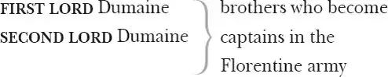

All's Well that Ends Well
BERTRAM , Count of Rossillion
COUNTESS of Rossillion, his mother
HELEN 1 (occasionally known as Helena), an orphan in the protection of the countess
REYNALDO , steward to the countess
LAVATCH , clown in the countess' household
PAROLLES , a boastful follower of Bertram
KING of France
LAFEW 2 , an old French lord
GENTLEMEN of the French court, including an Astringer

FIRST SOLDIER , who plays role of interpreter
DUKE of Florence
WIDOW , Capilet of Florence
DIANA , her daughter
MARIANA , her friend
Lords, Attendants including a Page, Soldiers, people of Florence
Act 1
Scene 1 3 / running scene 1
Enter young Bertram, [the ] Count of Rossillion, his mother [the Countess ], and Helena, Lord Lafew, all in black
COUNTESS In delivering 4 my son from me, I bury a second husband.
BERTRAM And I in going, madam, weep o'er my father's death anew; but I must attend 5 his majesty's command, to whom I am now in ward 6 , evermore in subjection 7 .
LAFEW You shall find of 8 the king a husband 9 , madam, you, sir, a father. He that so generally 10 is at all times good must of necessity hold 11 his virtue 12 to you, whose 13 worthiness would stir it up where it wanted 14 rather than lack it where there is such abundance 15 .
COUNTESS What hope is there of his majesty's amendment 16 ?
LAFEW He hath abandoned his physicians, madam, under whose practices 17 he hath persecuted time 18 with hope, and finds no other advantage in the process but only the losing of hope by time.
COUNTESS This young gentlewoman had a father — O, that 'had'! How sad a passage 19 'tis! — whose skill was almost as great as his honesty 20 , had it stretched so far, would have made nature immortal, and death should have play for lack of work. Would 21 for the king's sake he were living! I think it would be the death of the king's disease.
LAFEW How called you the man you speak of, madam?
COUNTESS He was famous, sir, in his profession, and it was his great right to be so: Gerard de Narbon 22 .
LAFEW He was excellent indeed, madam. The king very lately spoke of him admiringly and mourningly: he was skilful enough to have lived still 23 , if knowledge could be set up against mortality.
BERTRAM What is it, my good lord, the king languishes of?
LAFEW A fistula 24 , my lord.
BERTRAM I heard not of it before.
LAFEW I would it were not notorious 25 . Was this gentlewoman the daughter of Gerard de Narbon?
COUNTESS His sole child, my lord, and bequeathed to my overlooking 26 . I have those hopes of her good 27 that her education 28 promises her dispositions 29 she inherits, which makes fair gifts fairer. For where an unclean 30 mind carries virtuous qualities 31 , there commendations go with pity 32 , they are virtues and traitors too. In her they are the better for their simpleness 33 ; she derives 34 her honesty and achieves her goodness.
LAFEW Your commendations, madam, get from her tears.
COUNTESS 'Tis the best brine a maiden can season 35 her praise in. The remembrance of her father never approaches her heart but the tyranny of her sorrows takes all livelihood 36 from her cheek. No more of this, Helena. Go to 37 , no more, lest it be rather thought you affect 38 than to have 39 a sorrow than to have.
HELEN I do affect a sorrow indeed, but I have it too.
LAFEW Moderate lamentation is the right of 40 the dead, excessive grief the enemy to the living.
COUNTESS If the living be enemy to the grief, the excess makes it soon mortal 41 .
BERTRAM Madam, I desire your holy 42 wishes.
LAFEW How understand we that? 43
COUNTESS Be thou blest, Bertram, and succeed thy father
In manners 44 as in shape 45 . Thy 46 blood 47 and virtue
Contend for empire 48 in thee, and thy goodness
Share with thy birthright 49 . Love all, trust a few,
Do wrong to none. Be able 50 for thine enemy
Rather in power 51 than use, and keep thy friend
Under thy own life's key 52 . Be checked 53 for silence,
But never taxed 54 for speech. What 55 heaven more will 56 ,
That thee may furnish and my prayers pluck 57 down,
Fall on thy head! Farewell.— My lord,
To Lafew
'Tis an unseasoned 58 courtier. Good my lord,
Advise him.
LAFEW He cannot want 59 the best 60
That shall attend his love 61 .
COUNTESS Heaven bless him.— Farewell, Bertram.
[Exit ]
BERTRAM The best wishes that can be forged 62 in your thoughts be servants to you! Be comfortable 63 to my mother, your mistress, and make much of 64 her.
To Helen
LAFEW Farewell, pretty lady. You must hold 65 the credit 66 of your father.
[Exeunt Bertram and Lafew ]
HELEN O, were that all! I think not on my father,
And these great tears grace his remembrance more
Than those I shed for him 67 . What was he like?
I have forgot him. My imagination
Carries no favour 68 in't but Bertram's.
I am undone 69 . There is no living, none,
If Bertram be away. 'Twere all one
That 70 I should love a bright particular star
And think to wed it, he is so above me.
In his bright radiance and collateral 71 light
Must I be comforted, not in his sphere 72 ;
Th'ambition in my love thus plagues itself:
The hind 73 that would be mated by the lion
Must die for love. 'Twas pretty 74 , though a plague,
To see him every hour, to sit and draw
His archèd brows, his hawking 75 eye, his curls
In our heart's table 76 — heart too capable 77
Of every line and trick 78 of his sweet favour 79 :
But now he's gone, and my idolatrous fancy 80
Must sanctify his relics 81 . Who comes here?
Enter Parolles 82
One that goes with him: I love him for his 83 sake,
Aside
And yet I know him a notorious liar,
Think him a great way 84 fool, solely 85 a coward.
Yet these fixed 86 evils sit so fit 87 in him
That they take place 88 when virtue's steely 89 bones
Looks bleak i'th'cold wind 90 . Withal 91 , full oft 92 we see
Cold wisdom waiting on 93 superfluous 94 folly.
PAROLLES Save 95 you, fair queen 96 !
HELEN And you, monarch!
PAROLLES No.
HELEN And no.
PAROLLES Are you meditating on virginity?
HELEN Ay. You have some stain 97 of soldier in you. Let me ask you a question. Man is enemy to virginity: how may we barricado 98 it against him?
PAROLLES Keep 99 him out.
HELEN But he assails, and our virginity, though valiant, in the defence yet is weak. Unfold 100 to us some warlike resistance.
PAROLLES There is none. Man setting down before you 101 will undermine 102 you and blow you up 103 .
HELEN Bless 104 our poor virginity from underminers and blowers up! Is there no military policy 105 how virgins might blow up men?
PAROLLES Virginity being blown down, man will quicklier be blown up 106 . Marry 107 , in blowing him down 108 again, with the breach 109 yourselves made, you lose your city 110 . It is not politic 111 in the commonwealth of nature to preserve virginity. Loss of virginity is rational increase 112 , and there was never virgin got 113 till virginity was first lost. That 114 you were made of is mettle 115 to make virgins. Virginity by being once lost may be ten times found 116 . By being ever kept, it is ever lost. 'Tis too cold 117 a companion. Away with't!
HELEN I will stand for't 118 a little, though therefore I die a virgin.
PAROLLES There's little can be said in't 119 , 'tis against the rule of nature. To speak on the part 120 of virginity is to accuse your mothers, which is most infallible 121 disobedience. He that hangs himself is a virgin 122 : virginity murders itself and should be buried in highways out of all sanctified limit 123 , as a desperate 124 offendress 125 against nature. Virginity breeds mites, much like a cheese, consumes itself to the very paring 126 , and so dies with feeding his 127 own stomach 128 . Besides, virginity is peevish 129 , proud, idle, made of self-love, which is the most inhibited 130 sin in the canon 131 . Keep it not, you cannot choose but lose 132 by't. Out with't! 133 Within ten year it will make itself two 134 , which is a goodly increase, and the principal 135 itself not much the worse. Away with't!
HELEN How 136 might one do, sir, to lose it 137 to her own liking?
PAROLLES Let me see. Marry, ill, to like him that ne'er it likes. 'Tis a commodity will lose the gloss 138 with lying 139 : the longer kept, the less worth. Off with't while 'tis vendible 140 . Answer the time of request 141 . Virginity, like an old courtier, wears her cap out of fashion: richly suited 142 but unsuitable 143 , just like the brooch and the toothpick 144 , which wear not 145 now. Your date 146 is better in your pie 147 and your porridge 148 than in your cheek 149 . And your virginity, your old virginity, is like one of our French withered pears 150 : it looks ill, it eats dryly 151 . Marry, 'tis a withered pear: it was formerly better: marry, yet 'tis a withered pear. Will you anything with it?
HELEN Not my virginity yet —
There 152 shall your master have a thousand loves,
A mother 153 and a mistress and a friend,
A phoenix 154 , captain and an enemy,
A guide, a goddess, and a sovereign,
A counsellor, a traitress, and a dear.
His humble ambition, proud humility,
His jarring concord 155 , and his discord dulcet 156 ,
His faith, his sweet disaster 157 . With a world
Of pretty, fond 158 , adoptious 159 christendoms 160
That blinking 161 Cupid gossips 162 . Now shall he —
I know not what he shall. God send him well 163 !
The court's a learning place, and he is one—
PAROLLES What one, i'faith?
HELEN That I wish well. 'Tis pity—
PAROLLES What's pity?
HELEN That wishing well had not a body 164 in't,
Which might be felt, that we, the poorer born,
Whose baser stars 165 do shut us up in 166 wishes,
Might with effects of them 167 follow our friends,
And show what we alone must think 168 , which never
Returns us thanks 169 .
Enter Page
PAGE Monsieur Parolles, my lord calls for you.
[Exit ]
PAROLLES Little Helen, farewell. If I can remember thee, I will think of thee at court.
HELEN Monsieur Parolles, you were born under a charitable star.
PAROLLES Under Mars 170 , ay 171 .
HELEN I especially think, under 172 Mars.
PAROLLES Why under Mars?
HELEN The wars hath so kept you under that you must needs be born under Mars.
PAROLLES When he was predominant 173 .
HELEN When he was retrograde 174 , I think rather.
PAROLLES Why think you so?
HELEN You go so much backward 175 when you fight.
PAROLLES That's for advantage 176 .
HELEN So is running away, when fear proposes the safety. But the composition 177 that your valour and fear makes in you is a virtue of a good wing 178 , and I like the wear 179 well.
PAROLLES I am so full of businesses, I cannot answer thee acutely. I will return perfect 180 courtier in the which 181 , my instruction shall serve to naturalize 182 thee, so thou wilt be capable of 183 a courtier's counsel and understand what advice shall thrust 184 upon thee. Else thou diest in thine unthankfulness, and thine ignorance makes thee away 185 . Farewell. When thou hast leisure 186 , say thy prayers. When thou hast none, remember thy friends. Get thee a good husband, and use 187 him as he uses thee. So, farewell.
[Exit ]
HELEN Our remedies oft in ourselves do lie,
Which we ascribe to heaven. The fated 188 sky
Gives us free scope, only doth backward pull
Our slow designs 189 when we ourselves are dull 190 .
What power is it which mounts my love so high,
That makes me see, and cannot feed 191 mine eye?
The 192 mightiest space in fortune 193 nature brings
To join like likes 194 and kiss like native 195 things.
Impossible be strange attempts 196 to those
That weigh their pains in sense 197 and do suppose
What hath been cannot be. Who ever strove
To show her merit that did miss 198 her love?
The king's disease — my project may deceive me,
But my intents are fixed and will not leave me.
Exit
Scene 2 199 / running scene 2
Flourish 200 cornets. Enter the King of France, with letters, and divers 201 Attendants
KING The Florentines 202 and Senoys 203 are by th'ears 204 ,
Have fought with equal fortune and continue
A braving 205 war.
FIRST LORD So 'tis reported, sir.
KING Nay, 'tis most credible. We here receive it
A certainty, vouched from our cousin 206 Austria,
With caution that the Florentine will move 207 us
For speedy aid, wherein our dearest friend 208
Prejudicates 209 the business and would seem
To have us make denial 210 .
FIRST LORD His love and wisdom,
Approved 211 so to your majesty, may plead
For amplest credence 212 .
KING He hath armed 213 our answer,
And Florence 214 is denied before he comes:
Yet, for 215 our gentlemen that mean to see 216
The Tuscan service 217 , freely have they leave
To stand 218 on either part 219 .
SECOND LORD It well may serve
A nursery 220 to our gentry, who are sick 221
For breathing and exploit 222 .
KING What's he comes here?
Enter Bertram, Lafew and Parolles
FIRST LORD It is the Count Rossillion, my good lord,
Young Bertram.
KING Youth, thou bear'st thy father's face.
To Bertram
Frank 223 nature, rather curious than in haste 224 ,
Hath well composed thee. Thy father's moral parts 225
Mayst thou inherit too! Welcome to Paris.
BERTRAM My thanks and duty are your majesty's.
KING I would I had that corporal soundness 226 now,
As when thy father and myself in friendship
First tried 227 our soldiership. He did look far
Into the service 228 of the time and was
Discipled of 229 the bravest 230 . He lasted long,
But on us both did haggish 231 age steal on
And wore us out of act 232 . It much repairs 233 me
To talk of your good father; in his youth
He had the wit which I can well observe
Today in our young lords. But they may jest
Till their own scorn 234 return to them unnoted 235
Ere 236 they can hide their levity in honour 237 .
So like a courtier, contempt 238 nor bitterness
Were in his pride or sharpness; if they were,
His equal 239 had awaked 240 them, and his honour,
Clock to itself 241 , knew the true 242 minute when
Exception 243 bid him speak, and at this time
His tongue obeyed his hand 244 . Who 245 were below him
He used 246 as creatures of another place 247
And bowed his eminent top 248 to their low ranks,
Making them proud of his humility,
In their poor praise he humbled 249 . Such a man
Might be a copy 250 to these younger times;
Which, followed well, would demonstrate them now
But goers backward 251 .
BERTRAM His good remembrance, sir,
Lies richer in your thoughts than on his tomb,
So in approof 252 lives not his epitaph 253
As in your royal speech.
KING Would I were with him! He would always say —
Methinks I hear him now. His plausive 254 words
He scattered not 255 in ears, but grafted 256 them,
To grow there and to bear 257 — 'Let me not live' —
This his good melancholy oft began
On the catastrophe and heel 258 of pastime 259 ,
When it was out 260 — 'Let me not live,' quoth he,
'After my flame lacks oil, to be the snuff 261
Of younger spirits, whose apprehensive 262 senses
All but new things disdain; whose judgements are
Mere fathers of their garments 263 , whose constancies 264
Expire before their fashions.' This he wished.
I, after him, do after him wish too 265 ,
Since I nor 266 wax nor honey can bring home,
I quickly were 267 dissolvèd 268 from my hive
To give some labourers 269 room.
SECOND LORD You're loved, sir.
They that least lend 270 it 271 you shall lack 272 you first.
KING I fill a place, I know't. How long is't, count,
Since the physician at your father's died?
He was much famed.
BERTRAM Some six months since, my lord.
KING If he were living, I would try him yet.
Lend me an arm: the rest 273 have worn me out
With several 274 applications 275 . Nature and sickness
Debate 276 it 277 at their leisure. Welcome, count.
My son's no dearer.
BERTRAM Thank your majesty.
Exeunt. Flourish
Scene 3 278 / running scene 3
Enter Countess, Steward [Reynaldo ] and Clown [Lavatch 279 ]
COUNTESS I will now hear; what say you of this gentlewoman 280 ?
REYNALDO Madam, the care I have had to even your content 281 , I wish might be found in the calendar 282 of my past endeavours, for then we wound our modesty, and make foul the clearness 283 of our deservings 284 , when of ourselves we publish them 285 .
COUNTESS What does this knave here? Get you gone, sirrah 286 . The complaints I have heard of you I do not all believe. 'Tis my slowness that I do not, for I know you lack not folly to commit them, and have ability enough to make such knaveries yours.
LAVATCH 'Tis not unknown to you, madam, I am a poor 287 fellow.
COUNTESS Well 288 , sir.
LAVATCH No, madam, 'tis not so well that I am poor, though many of the rich are damned. But if I may have your ladyship's good will to go to the world 289 , Isbel 290 the woman 291 and I will do 292 as we may.
COUNTESS Wilt thou needs 293 be a beggar?
LAVATCH I do beg your good will in this case 294 .
COUNTESS In what case?
LAVATCH In Isbel's case and mine own. Service 295 is no heritage 296 : and I think I shall never have the blessing of God till I have issue o' my body 297 , for they say bairns 298 are blessings.
COUNTESS Tell me thy reason why thou wilt marry.
LAVATCH My poor body, madam, requires it. I am driven on by the flesh, and he must needs go 299 that the devil drives.
COUNTESS Is this all your worship 300 's reason?
LAVATCH Faith, madam, I have other holy 301 reasons, such as they are.
COUNTESS May the world 302 know them?
LAVATCH I have been, madam, a wicked creature, as you and all flesh and blood are, and indeed I do marry that I may repent 303 .
COUNTESS Thy marriage, sooner than thy wickedness.
LAVATCH I am out o' friends, madam, and I hope to have friends for my wife's sake 304 .
COUNTESS Such friends are thine enemies, knave.
LAVATCH You're shallow 305 , madam, in 306 great friends, for the knaves come to do 307 that for me which I am aweary of. He that ears 308 my land 309 spares my team 310 and gives me leave 311 to in 312 the crop 313 . If I be his cuckold 314 , he's my drudge 315 ; he that comforts 316 my wife is the cherisher 317 of my flesh and blood; he that cherishes my flesh and blood loves my flesh and blood; he that loves my flesh and blood is my friend: ergo 318 , he that kisses my wife is my friend. If men could be contented to be what they are 319 , there were no fear in marriage, for young Charbon the Puritan 320 and old Poysam the Papist 321 , howsome'er 322 their hearts are severed in religion, their heads are both one 323 . They may jowl 324 horns together, like any deer i'th'herd.
COUNTESS Wilt thou ever 325 be a foul-mouthed and calumnious 326 knave?
LAVATCH A prophet I, madam, and I speak the truth the next 327 way.
For I the ballad will repeat,
Sings
Which men full true shall find:
Your marriage comes by destiny,
Your cuckoo sings by kind 328 .
COUNTESS Get you gone, sir. I'll talk with you more anon 329 .
REYNALDO May it please you, madam, that he bid Helen come to you: of her I am to speak.
COUNTESS Sirrah, tell my gentlewoman I would speak with her — Helen, I mean.
To Lavatch
LAVATCH 'Was this fair face 330 the cause,' quoth she 331 ,
Sings
'Why the Grecians sackèd 332 Troy 333 ?
Fond 334 done, done fond,
Was this King Priam 335 's joy?'
With that she sighèd as she stood,
With that she sighèd as she stood,
And gave this sentence 336 then:
'Among 337 nine bad if one be good,
Among nine bad if one be good,
There's yet one good in ten.'
COUNTESS What, one good in ten? You corrupt the song 338 , sirrah.
LAVATCH One good woman in ten, madam; which is a purifying 339 o'th'song. Would God would serve the world 340 so all the year! We'd find no fault with the tithe-woman 341 , if I were the parson. One in ten, quoth a? An 342 we might have a good woman born but ere every blazing star 343 , or at an earthquake 344 , 'twould mend the lottery well 345 . A man may draw 346 his heart out ere a pluck one 347 .
COUNTESS You'll be gone, sir knave, and do as I command you?
LAVATCH That 348 man should be at woman's command, and yet no hurt done! Though honesty 349 be no puritan, yet it will do no hurt. It will wear the surplice of humility over the black gown of a big heart 350 . I am going, forsooth 351 . The business is for Helen to come hither.
Exit
COUNTESS Well, now.
REYNALDO I know, madam, you love your gentlewoman entirely.
COUNTESS Faith, I do. Her father bequeathed 352 her to me, and she herself, without other advantage 353 , may lawfully make title 354 to as much love as she finds. There is more owing her than is paid and more shall be paid her than she'll demand.
REYNALDO Madam, I was very late 355 more near her than I think she wished me. Alone she was, and did communicate to herself her own words to her own ears. She thought, I dare vow for her, they touched not any stranger sense 356 . Her matter 357 was, she loved your son. Fortune, she said, was no goddess, that had put such difference betwixt their two estates 358 . Love no 359 god, that would not extend his might only where qualities 360 were level. Dian 361 no queen of virgins, that would suffer 362 her poor knight surprised 363 without rescue in the first assault or ransom afterward. This she delivered in the most bitter touch 364 of sorrow that e'er I heard virgin exclaim in, which I held my duty speedily to acquaint you withal 365 , sithence 366 , in the loss 367 that may happen, it concerns you something 368 to know it.
COUNTESS You have discharged 369 this honestly. Keep it to yourself. Many likelihoods 370 informed me of this before, which hung so tott'ring in the balance that I could neither believe nor misdoubt 371 . Pray you leave me. Stall 372 this in your bosom, and I thank you for your honest care. I will speak with you further anon.
Exit Steward [Reynaldo ]
Enter Helen
Even so it was with me when I was young.
Aside
If ever we are nature's, these 373 are ours. This thorn
Doth to our rose of youth rightly belong.
Our blood 374 to us, this to our blood is born:
It is the show 375 and seal 376 of nature's truth,
Where love's strong passion is impressed 377 in youth.
By our remembrances of days foregone,
Such were our faults, or 378 then we thought them none.
Her eye is sick on't. I observe 379 her now.
HELEN What is your pleasure, madam?
COUNTESS You know, Helen, I am a mother to you.
HELEN Mine honourable mistress.
COUNTESS Nay, a mother. Why not a mother? When I said 'a mother',
Methought 380 you saw a serpent. What's in 'mother'
That you start 381 at it? I say I am your mother,
And put you in the catalogue of those
That were enwombèd mine 382 . 'Tis often seen
Adoption 383 strives 384 with nature 385 , and choice breeds
A native slip to us from foreign seeds 386 .
You ne'er oppressed me with a mother's groan 387 ,
Yet I express to you a mother's care.
God's mercy, maiden! Does it curd 388 thy blood
To say I am thy mother? What's the matter,
That this distempered 389 messenger of wet,
The many-coloured Iris 390 , rounds 391 thine eye?
— Why? That you are my daughter?
HELEN That I am not 392 .
COUNTESS I say I am your mother.
HELEN Pardon, madam.
The Count Rossillion cannot be my brother:
I am from humble, he from honoured name,
No note 393 upon my parents 394 , his all noble.
My master, my dear lord he is, and I
His servant live, and will his vassal 395 die.
He must not be my brother.
COUNTESS Nor I your mother.
HELEN You are my mother, madam, would you were —
So 396 that my lord your son were not my brother —
Indeed my mother! Or were you both our mothers 397 ,
I care no more for than 398 I do for heaven,
So I were not his sister. Can't no other 399
But, I your daughter, he must be my brother?
COUNTESS Yes, Helen, you might be my daughter-in-law.
God shield 400 you mean it not! Daughter and mother
So strive upon your pulse. What, pale again?
My fear hath catched 401 your fondness 402 . Now I see
The mystery of your loveliness 403 , and find
Your salt tears' head 404 . Now to all sense 405 'tis gross 406 :
You love my son. Invention 407 is ashamed
Against 408 the proclamation of thy passion
To say thou dost not: therefore tell me true.
But tell me then 'tis so, for look, thy cheeks
Confess it, t'one to th'other, and thine eyes
See it so grossly shown in thy behaviours
That in their kind 409 they speak it. Only sin
And hellish obstinacy tie thy tongue,
That truth should be suspected 410 . Speak, is't so?
If it be so, you have wound a goodly clew 411 .
If it be not, forswear't 412 : howe'er 413 , I charge 414 thee,
As heaven shall work in me for thine avail 415 ,
To tell me truly.
HELEN Good madam, pardon me.
COUNTESS Do you love my son?
HELEN Your pardon, noble mistress.
COUNTESS Love you my son?
HELEN Do not you love him, madam?
COUNTESS Go not about 416 ; my love hath in't a bond 417
Whereof the world takes note 418 . Come, come, disclose
The state of your affection, for your passions
Have to the full appeached 419 .
HELEN Then I confess,
↑ Kneels ↑
Here on my knee, before 420 high heaven and you,
That before you, and next unto high heaven,
I love your son.
My friends 421 were poor but honest, so's my love.
Be not offended, for it hurts not him
That he is loved of me; I follow him not
By any token 422 of presumptuous suit 423 ,
Nor would I have him till I do deserve him,
Yet never know how that desert should be.
I know I love in vain, strive against hope.
Yet in this captious 424 and intenible 425 sieve
I still 426 pour in the waters of my love
And lack not to lose still 427 ; thus, Indian-like,
Religious 428 in mine error, I adore
The sun that looks upon his worshipper
But knows of him no more 429 . My dearest madam,
Let not your hate encounter with 430 my love,
For loving where you do; but if yourself,
Whose agèd honour cites 431 a virtuous youth,
Did ever in so true a flame of liking
Wish chastely and love dearly, that your Dian
Was both herself 432 and love — O, then, give pity
To her whose state is such that cannot choose
But lend and give where she is sure to lose 433 ;
That seeks not to find that 434 her search implies 435 ,
But riddle-like lives sweetly where she dies 436 .
COUNTESS Had you not lately an intent — speak truly —
To go to Paris?
HELEN Madam, I had.
COUNTESS Wherefore? 437 Tell true.
HELEN I will tell truth, by grace 438 itself I swear.
You know my father left me some prescriptions 439
Of rare and proved effects, such as his reading
And manifest 440 experience had collected
For general sovereignty 441 , and that he willed me
In heedfull'st reservation to bestow them 442 ,
As notes 443 whose faculties inclusive 444 were
More than they were in note 445 . Amongst the rest,
There is a remedy, approved 446 , set down,
To cure the desp'rate 447 languishings whereof
The king is rendered lost 448 .
COUNTESS This was your motive for Paris, was it? Speak.
HELEN My lord your son made me to think of this;
Else Paris and the medicine and the king
Had from the conversation 449 of my thoughts
Haply 450 been absent then.
COUNTESS But think you, Helen,
If you should tender 451 your supposèd aid,
He would receive it? He and his physicians
Are of a mind 452 . He, that they cannot help him,
They, that they cannot help. How shall they credit 453
A poor unlearnèd virgin, when the schools 454 ,
Embowelled 455 of their doctrine 456 , have left off 457
The danger to itself?
HELEN There's something in't
More than my father's skill, which was the great'st
Of his profession, that his good receipt 458
Shall for my legacy be sanctified 459
By th'luckiest stars in heaven, and would your honour
But give me leave to try success 460 , I'd venture 461
The well-lost 462 life of mine on his grace's cure
By such a 463 day and hour.
COUNTESS Dost thou believe't?
HELEN Ay, madam, knowingly 464 .
COUNTESS Why, Helen, thou shalt have my leave 465 and love,
Means and attendants and my loving greetings
To those of mine in court. I'll stay at home
And pray God's blessing into 466 thy attempt.
Be gone tomorrow. And be sure of this:
What I can help thee to thou shalt not miss 467 .
Exeunt
Act 2
Scene 1 468 / running scene 4
Enter the King [carried in a chair ] with divers young Lords taking leave for the Florentine war, Count Rossillion [Bertram ] and Parolles. Flourish cornets
KING Farewell, young lords. These warlike principles 469
Do not throw from you 470 . And you, my lords, farewell.
Share the advice betwixt you. If both gain, all
The gift 471 doth stretch itself as 'tis received,
And is enough for both.
FIRST LORD 'Tis our hope, sir,
After well-entered 472 soldiers, to return
And find your grace in health.
KING No, no, it cannot be; and yet my heart
Will not confess he owes 473 the malady
That doth my life besiege. Farewell, young lords.
Whether I live or die, be you the sons
Of worthy Frenchmen. Let higher Italy 474 —
Those bated that inherit but the fall
Of the last monarchy 475 — see that you come
Not to woo 476 honour, but to wed 477 it, when
The bravest questant 478 shrinks 479 . Find what you seek,
That fame may cry 480 you loud. I say, farewell.
SECOND LORD Health at your bidding serve your majesty!
KING Those girls of Italy, take heed of them:
They say our French lack language to deny 481
If they demand. Beware of being captives 482
Before you serve 483 .
BOTH Our hearts receive your warnings.
KING Farewell.— Come hither to me.
King steps aside with some lords
FIRST LORD O, my sweet lord, that you will stay behind us!
To Bertram
PAROLLES 'Tis not his fault, the spark 484 .
SECOND LORD O, 'tis brave 485 wars!
PAROLLES Most admirable. I have seen those wars.
BERTRAM I am commanded here 486 , and kept a coil 487 with
'Too young' and 'the next year' and "tis too early'.
PAROLLES An thy mind stand to't, boy, steal away bravely 488 .
BERTRAM I shall stay here the forehorse to a smock 489 ,
Creaking my shoes on the plain masonry 490 ,
Till honour be bought up 491 and no sword worn
But one to dance with 492 . By heaven, I'll steal 493 away.
FIRST LORD There's honour in the theft.
PAROLLES Commit it, count.
SECOND LORD I am your accessary, and so farewell.
BERTRAM I grow to 494 you, and our parting is a tortured body 495 .
FIRST LORD Farewell, captain.
SECOND LORD Sweet Monsieur Parolles!
PAROLLES Noble heroes, my sword and yours are kin. Good sparks and lustrous, a word 496 , good metals 497 . You shall find in the regiment of the Spinii one Captain
Spurio 498 , with his cicatrice 499 , an emblem of war, here on his sinister 500 cheek; it was this very sword entrenched 501 it. Say to him I live, and observe his reports 502 for me.
FIRST LORD We shall, noble captain.
PAROLLES Mars 503 dote on you for his novices 504 !—
[Exeunt Lords ]
What will ye do?
To Bertram
BERTRAM Stay 505 the king.
Bertram and Parolles stand aside
PAROLLES Use a more spacious ceremony 506 to the noble lords. You have restrained yourself within the list 507 of too cold an adieu. Be more expressive to them, for they wear themselves in the cap of the time 508 , there do muster true gait 509 , eat, speak, and move under the influence of the most received 510 star. And though the devil lead the measure 511 , such are to be followed. After them, and take a more dilated 512 farewell.
To Bertram
BERTRAM And I will do so.
PAROLLES Worthy fellows, and like 513 to prove most sinewy 514 sword-men.
The King comes forward
Exeunt [Bertram and Parolles ]
Enter Lafew
LAFEW Pardon, my lord, for me and for my tidings 515 .
Kneels
KING I'll fee 516 thee to stand up.
LAFEW Then here's a man stands that has brought his pardon 517 .
Rises
I would you had kneeled, my lord, to ask me mercy,
And that at my bidding you could so stand up.
KING I would I had, so I had broke thy pate 518 ,
And asked thee mercy for't.
LAFEW Good faith, across 519 . But, my good lord, 'tis thus:
Will you be cured of your infirmity?
KING No.
LAFEW O, will you eat no grapes, my royal fox 520 ?
Yes, but you will 521 my noble grapes, an if 522
My royal fox could reach them. I have seen a medicine 523
That's able to breathe life into a stone,
Quicken 524 a rock, and make you dance canary 525
With sprightly fire and motion, whose simple 526 touch,
Is powerful to araise 527 King Pippin 528 , nay,
To give great Charlemain a pen 529 in's hand
And write to her a love-line.
KING What 'her' is this?
LAFEW Why, Doctor She: my lord, there's one arrived,
If you will see her. Now, by my faith and honour,
If seriously I may convey my thoughts
In this my light 530 deliverance 531 , I have spoke
With one that, in her sex, her years, profession 532 ,
Wisdom and constancy, hath amazed me more
Than I dare blame 533 my weakness 534 . Will you see her,
For that is her demand, and know her business?
That done, laugh well at me.
KING Now, good Lafew,
Bring in the admiration 535 that we with thee
May spend 536 our wonder too, or take off 537 thine
By wondering how thou took'st 538 it.
LAFEW Nay, I'll fit 539 you,
And not be all day neither.
KING Thus he his special nothing 540 ever prologues 541 .
Lafew goes to the door or exits and re-enters
Enter Helen 542
LAFEW Nay, come your ways 543 .
To Helen
KING This haste hath wings indeed.
LAFEW Nay, come your ways.
This is his majesty, say your mind to him.
A traitor you do look like, but such traitors
His majesty seldom fears. I am Cressid's uncle 544 ,
That dare leave two together. Fare you well.
Exit
KING Now, fair one, does your business follow 545 us?
HELEN Ay, my good lord.
Gerard de Narbon was my father,
In what he did profess 546 , well found 547 .
KING I knew him.
HELEN The rather will I spare my praises towards him.
Knowing him is enough. On's bed of death
Many receipts 548 he gave me, chiefly one
Which, as the dearest issue 549 of his practice,
And of his old experience th'only 550 darling,
He bade me store up, as a triple 551 eye,
Safer 552 than mine own two. More dear I have so,
And hearing your high majesty is touched
With that malignant cause wherein the honour
Of my dear father's gift stands chief in power 553 ,
I come to tender 554 it and my appliance 555
With all bound 556 humbleness.
KING We thank you, maiden,
But may not be so credulous 557 of cure,
When our most learnèd doctors leave us, and
The congregated college 558 have concluded
That labouring art 559 can never ransom nature
From her inaidible 560 estate. I say we must not
So stain our judgement, or corrupt our hope,
To prostitute 561 our past-cure malady
To empirics 562 , or to dissever 563 so
Our great self 564 and our credit 565 , to esteem 566
A senseless 567 help when help past sense 568 we deem 569 .
HELEN My duty 570 then shall pay me for my pains 571 :
I will no more enforce mine office 572 on you,
Humbly entreating from your royal thoughts
A modest one 573 to bear me back again 574 .
KING I cannot give thee less, to 575 be called grateful.
Thou thought'st to help me, and such thanks I give
As one near death to those that wish him live.
But what at full 576 I know, thou know'st no part 577 ,
I knowing all my peril, thou no art 578 .
HELEN What I can do can do no hurt to try,
Since you set up your rest 579 gainst remedy.
He 580 that of greatest works is finisher
Oft does them by the weakest minister:
So holy writ 581 in babes 582 hath judgement shown,
When judges have been babes; great floods have flown
From simple 583 sources 584 , and great seas have dried 585
When miracles have by the great'st 586 been denied.
Oft expectation fails, and most oft there
Where most it promises, and oft it hits 587
Where hope is coldest and despair most shifts 588 .
KING I must not hear thee. Fare thee well, kind maid.
Thy pains not used must by thyself be paid 589 :
Proffers 590 not took reap thanks for 591 their reward.
HELEN Inspirèd 592 merit so by breath 593 is barred.
It is not so with him that all things knows
As 'tis with us that square 594 our guess by shows 595 .
But most it is presumption in us when
The help of heaven we count 596 the act of men.
Dear sir, to my endeavours give consent.
Of heaven, not me, make an experiment 597 .
I am not an impostor 598 that proclaim 599
Myself against the level of mine aim,
But know I think, and think I know most sure,
My art is not past power, nor you past cure.
KING Art thou so confident? Within what space 600
Hop'st thou my cure?
HELEN The greatest 601 grace lending grace
Ere twice the horses of the sun shall bring
Their fiery torcher 602 his diurnal ring 603 ,
Ere twice in murk and occidental 604 damp
Moist Hesperus 605 hath quenched her sleepy lamp,
Or four and twenty times the pilot's glass 606
Hath told the thievish minutes how they pass,
What is infirm from your sound parts shall fly,
Health shall live free and sickness freely die.
KING Upon thy certainty and confidence
What dar'st thou venture 607 ?
HELEN Tax 608 of impudence,
A strumpet's 609 boldness, a divulgèd shame
Traduced 610 by odious ballads: my maiden's name
Seared 611 otherwise, nay, worse of worst, extended 612
With vilest torture, let my life be ended.
KING Methinks in thee some blessèd spirit doth speak
His powerful sound within an organ weak:
And what impossibility would slay 613
In common sense 614 , sense saves another way.
Thy life is dear, for all that life can rate 615
Worth name of life in thee hath estimate 616 :
Youth, beauty, wisdom, courage, all
That happiness and prime 617 can happy call.
Thou this to hazard 618 needs 619 must intimate
Skill infinite or monstrous desperate 620 .
Sweet practicer 621 , thy physic 622 I will try,
That ministers 623 thine own death if I die.
HELEN If I break time 624 , or flinch in property 625
Of what I spoke, unpitied let me die,
And well deserved. Not 626 helping, death's my fee.
But if I help, what do you promise me?
KING Make thy demand.
HELEN But will you make it even 627 ?
KING Ay, by my sceptre and my hopes of heaven.
HELEN Then shalt thou give me with thy kingly hand
What 628 husband in thy power I will command:
Exempted 629 be from me the arrogance
To choose from forth the royal blood of France,
My low and humble name to propagate
With any branch or image of thy state.
But such a one, thy vassal, whom I know
Is free for me to ask, thee to bestow.
KING Here is my hand. The premises observed 630 ,
Thy will by my performance 631 shall be served.
So make the choice of 632 thy own time, for I,
Thy resolved 633 patient, on thee still 634 rely.
More should I question thee, and more I must —
Though more to know could not be more to trust —
From whence thou cam'st, how tended on 635 . But rest
Unquestioned 636 welcome and undoubted blest.—
Give me some help here, ho!— If thou proceed
As high as word 637 , my deed shall match thy deed.
Flourish. Exeunt [the King is carried out ]
Scene 2 638 / running scene 5
Enter Countess and Clown [Lavatch ]
COUNTESS Come on, sir, I shall now put you to the height 639 of your breeding 640 .
LAVATCH I will show myself highly fed 641 and lowly 642 taught. I know my business is but to the court.
COUNTESS To the court! Why, what place make you 643 special, when you put off 644 that with such contempt? But to the court!
LAVATCH Truly, madam, if God have lent a man any manners, he may easily put 645 it off at court: he that cannot make a leg 646 , put off's cap, kiss his hand and say nothing, has neither leg, hands, lip, nor cap; and indeed such a fellow, to say precisely, were not for the court. But for me, I have an answer 647 will serve all men.
COUNTESS Marry, that's a bountiful answer that fits all questions.
LAVATCH It is like a barber's chair that fits all buttocks: the pin 648 -buttock, the quatch 649 -buttock, the brawn 650 -buttock, or any buttock.
COUNTESS Will your answer serve fit 651 to all questions?
LAVATCH As fit as ten groats 652 is for the hand of an attorney, as your French crown 653 for your taffety punk 654 , as Tib 655 's rush 656 for Tom 657 's forefinger 658 , as a pancake 659 for Shrove Tuesday, a morris 660 for May Day, as the nail 661 to his 662 hole 663 , the cuckold 664 to his horn 665 , as a scolding quean 666 to a wrangling knave 667 , as the nun's lip to the friar's mouth, nay, as the pudding 668 to his 669 skin.
COUNTESS Have you, I say, an answer of such fitness for all questions?
LAVATCH From below your duke to beneath your constable, it will fit any question.
COUNTESS It must be an answer of most monstrous size that must fit all demands.
LAVATCH But a trifle neither 670 , in good faith, if the learned should speak truth of it. Here it is, and all that belongs to't. Ask me if I am a courtier, it shall do you no harm to learn.
COUNTESS To be young again, if we could. I will be a fool in question 671 , hoping to be the wiser by your answer. I pray you, sir, are you a courtier?
LAVATCH O lord, sir! There's a simple putting off 672 . More, more, a hundred of them.
COUNTESS Sir, I am a poor friend of yours that loves you.
LAVATCH O lord, sir! 673 Thick 674 , thick, spare not me.
COUNTESS I think, sir, you can eat none of this homely meat 675 .
LAVATCH O lord, sir! Nay, put me to't, I warrant you.
COUNTESS You were lately whipped, sir, as I think.
LAVATCH O lord, sir! Spare not me.
COUNTESS Do you cry, 'O lord, sir!' at your whipping, and 'Spare not me'? Indeed your 'O lord, sir!' is very sequent 676 to your whipping: you would answer 677 very well to a whipping, if you were but bound to't 678 .
LAVATCH I ne'er had worse luck in my life in my 'O lord, sir!' I see things may serve long, but not serve ever.
COUNTESS I play the noble 679 housewife with the time To entertain it so merrily with a fool.
LAVATCH O lord, sir! Why, there't serves well again.
COUNTESS An end, sir. To your business. Give Helen this,
Gives a letter
And urge her to a present 680 answer back. Commend me 681 to my kinsmen and my son. This is not much.
LAVATCH Not much commendation to them.
COUNTESS Not much employment for you. You understand me?
LAVATCH Most fruitfully 682 . I am there before my legs 683 .
COUNTESS Haste you again 684 .
Exeunt [separately ]
Scene 3 685 / running scene 6
Enter Count [Bertram ], Lafew and Parolles
LAFEW They say miracles are past, and we have our philosophical persons 686 to make modern 687 and familiar, things 688 supernatural and causeless 689 . Hence is it that we make trifles of terrors, ensconcing ourselves into 690 seeming knowledge when we should submit ourselves to an unknown fear 691 .
PAROLLES Why, 'tis the rarest 692 argument 693 of wonder that hath shot out 694 in our latter 695 times.
BERTRAM And so 'tis.
LAFEW To be relinquished of 696 the artists 697 —
PAROLLES So I say, both of Galen 698 and Paracelsus 699 .
LAFEW Of all the learnèd and authentic fellows 700 —
PAROLLES Right, so I say.
LAFEW That gave him out 701 incurable—
PAROLLES Why, there 'tis. So say I too.
LAFEW Not to be helped —
PAROLLES Right. As 'twere a man assured of a—
LAFEW Uncertain life and sure death.
PAROLLES Just 702 , you say well. So would I have said.
LAFEW I may truly say, it is a novelty to the world.
PAROLLES It is, indeed: if you will have it in showing 703 , you shall read it in— what-do-ye-call there?
Points to the ballad Lafew holds
LAFEW 'A showing of a heavenly effect in an earthly actor.'
Reads
PAROLLES That's it. I would have said the very same.
LAFEW Why, your dolphin 704 is not lustier. 'Fore me 705 , I speak in respect—
PAROLLES Nay, 'tis strange, 'tis very strange. That is the brief and the tedious 706 of it, and he's of a most facinerious 707 spirit that will not acknowledge it to be the—
LAFEW Very hand of heaven.
PAROLLES Ay, so I say.
LAFEW In a most weak—
PAROLLES And debile minister 708 , great power, great transcendence, which should indeed give us a further use to be made than alone the recovery of the king, as to be—
LAFEW Generally 709 thankful.
Enter King, Helen and Attendants
PAROLLES I would have said it; you say well. Here comes the king.
Lafew and Parolles stand aside
LAFEW Lustigu e 710 , as the Dutchman 711 says. I'll like a maid the better whilst I have a tooth 712 in my head. Why, he's able to lead her a coranto 713 .
PAROLLES Mor du vinage r 714 ! Is not this Helen?
LAFEW 'Fore God, I think so.
KING Go, call before me all the lords in court.
[Exit Attendant ]
Sit, my preserver, by thy patient's side,
Helen sits
And with this healthful hand, whose banished sense 715
Thou hast repealed 716 , a second time receive
The confirmation of my promised gift,
Which but attends 717 thy naming.
Enter three or four Lords
Fair maid, send forth thine eye: this youthful parcel 718
Of noble bachelors stand at my bestowing 719 ,
O'er whom both sovereign power and father's voice
I have to use. Thy frank election 720 make.
Thou hast power to choose, and they none to forsake 721 .
HELEN To each of you one fair and virtuous mistress
Fall, when love please! Marry, to each, but one!
LAFEW I'd give bay curtal and his furniture 722
My mouth no more were broken than these boys' 723 ,
And writ 724 as little beard.
KING Peruse them well:
Not one of those but had a noble father.
HELEN Gentlemen, heaven hath through me restored the king to health.
She addresses her to a Lord 725
ALL We understand it, and thank heaven for you.
HELEN I am a simple maid, and therein wealthiest
That I protest 726 I simply am a maid.
Please it your majesty, I have done already.
The blushes in my cheeks thus whisper 727 me,
'We blush that thou shouldst choose. But be refused,
Let the white death 728 sit on thy cheek for ever,
We'll ne'er come there again.'
KING Make choice and see,
Who 729 shuns thy love shuns all his love in me 730 .
HELEN Now, Dian 731 , from thy altar do I fly,
And to imperial Love 732 , that god most high,
Do my sighs stream.— Sir, will you hear my suit?
To First Lord
FIRST LORD And grant it.
HELEN Thanks, sir. All the rest is mute 733 .
LAFEW I had rather be in this choice than throw ames-ace 734 for my life 735 .
Aside
HELEN The honour 736 , sir, that flames in your fair eyes
To Second Lord
Before I speak, too threat'ningly replies.
Love 737 make your fortunes twenty times above
Her that so wishes 738 , and her humble love.
SECOND LORD No better 739 , if you please.
HELEN My wish receive,
Which great love grant! And so I take my leave.
LAFEW Do all they deny her? An they were sons of mine, I'd have them whipped, or I would send them to th'Turk 740 to make eunuchs of.
Aside
HELEN Be not afraid that I your hand should take.
To Third Lord
I'll never do you wrong for your own sake.
Blessing upon your vows, and in your bed
Find fairer fortune, if you ever wed!
LAFEW These boys are boys of ice, they'll none have her. Sure 741 they are bastards to the English, the French ne'er got 742 'em.
Aside
HELEN You are too young, too happy 743 , and too good, To make yourself a son out of my blood.
To Fourth Lord
FOURTH LORD Fair one, I think not so.
LAFEW There's one grape 744 yet. I am sure thy father drunk wine 745 . But if thou be'st not an ass, I am a youth of fourteen. I have known 746 thee already.
Aside
HELEN I dare not say I take you, but I give
To Bertram
Me and my service, ever whilst I live,
Into your guiding power. This is the man.
KING Why, then, young Bertram, take her: she's thy wife.
BERTRAM My wife, my liege? I shall beseech your highness,
In such a business give me leave to use
The help of mine own eyes.
KING Know'st thou not, Bertram, what she has done for me?
BERTRAM Yes, my good lord,
But never hope to know why I should marry her.
KING Thou know'st she has raised me from my sickly bed.
BERTRAM But follows it, my lord, to bring me down 747
Must answer for your raising? I know her well:
She had her breeding 748 at my father's charge 749 .
A poor physician's daughter my wife? Disdain
Rather corrupt 750 me ever 751 !
KING 'Tis only title 752 thou disdain'st in her, the which
I can build up. Strange is it that our bloods,
Of colour, weight and heat, poured all together,
Would quite confound distinction 753 , yet stands off 754
In differences so mighty. If she be
All that is virtuous, save what thou dislik'st,
A poor physician's daughter, thou dislik'st
Of virtue for the name. But do not so.
From lowest place whence virtuous things proceed 755 ,
The place is dignified by th'doer's deed.
Where great additions swell's, and virtue none 756 ,
It is a dropsied 757 honour. Good alone
Is good without a name. Vileness is so:
The property 758 by what it is should go 759 ,
Not by the title. She is young, wise, fair.
In these to nature she's immediate heir 760 ,
And these breed honour. That is honour's scorn,
Which challenges itself as honour's born
And is not like the sire 761 . Honours thrive,
When rather from our acts we them derive
Than our foregoers 762 . The mere word's a slave,
Deboshed 763 on every tomb, on every grave
A lying trophy 764 , and as oft is dumb,
Where dust and damned oblivion is the tomb
Of honoured bones indeed 765 . What should be said?
If thou canst like this creature as a maid,
I can create the rest: virtue and she
Is her own dower 766 , honour and wealth from me.
BERTRAM I cannot love her, nor will strive 767 to do't
KING Thou wrong'st thyself if thou shouldst strive to choose 768 .
HELEN That you are well restored 769 , my lord, I'm glad.
Let the rest go.
KING My honour's at the stake 770 , which 771 to defeat,
I must produce my power. Here, take her hand,
Proud scornful boy, unworthy this 772 good gift,
That dost in vile misprision 773 shackle up
My love and her desert 774 . That 775 canst not dream,
We 776 , poising 777 us in her defective 778 scale,
Shall weigh thee to the beam 779 . That wilt not know,
It is in us 780 to plant thine honour where
We please to have it grow. Check 781 thy contempt:
Obey our will, which travails in 782 thy good.
Believe not 783 thy disdain, but presently 784
Do thine own fortunes that obedient right
Which both thy duty owes and our power claims,
Or I will throw thee from my care forever
Into the staggers 785 and the careless 786 lapse 787
Of youth and ignorance, both my revenge and hate
Loosing 788 upon thee, in the name of justice,
Without all terms 789 of pity. Speak. Thine answer.
BERTRAM Pardon, my gracious lord, for I submit
My fancy 790 to your eyes. When I consider
What great creation 791 and what dole 792 of honour
Flies where you bid it, I find that she, which late 793
Was in my nobler thoughts most base, is now
The praisèd of the king, who 794 , so ennobled,
Is as 'twere born so.
KING Take her by the hand,
And tell her she is thine, to whom I promise
A counterpoise 795 , if not 796 to thy estate,
A balance more replete 797 .
BERTRAM I take her hand.
KING Good fortune and the favour of the king
Smile upon this contract, whose ceremony
Shall seem expedient on the now-born brief 798 ,
And be performed tonight. The solemn feast
Shall more attend upon the coming space 799 ,
Expecting 800 absent friends. As 801 thou lov'st her,
Thy love's to me religious 802 , else, does err 803 .
Exeunt. Parolles and Lafew stay behind commenting of this wedding
LAFEW Do you hear, monsieur? A word with you.
PAROLLES Your pleasure, sir.
LAFEW Your lord and master did well to make his recantation.
PAROLLES Recantation? My lord? My master?
LAFEW Ay. Is it not a language I speak?
PAROLLES A most harsh one, and not to be understood without bloody succeeding 804 . My master?
LAFEW Are you companion 805 to the Count Rossillion?
PAROLLES To any count, to all counts, to what is man 806 .
LAFEW To what is count's man. Count's master is of another style.
PAROLLES You are too old 807 , sir. Let it satisfy 808 you, you are too old.
LAFEW I must tell thee, sirrah, I write 809 man, to which title age cannot bring thee.
PAROLLES What I dare too well do 810 , I dare not do.
LAFEW I did think thee, for two ordinaries 811 , to be a pretty wise fellow. Thou didst make tolerable vent 812 of thy travel, it might pass. Yet the scarfs 813 and the bannerets 814 about thee did manifoldly dissuade me from believing thee a vessel 815 of too great a burden 816 . I have now found 817 thee 818 . When I lose thee again, I care not. Yet art thou good for nothing but taking up 819 , and that thou'rt scarce worth.
PAROLLES Hadst thou not the privilege of antiquity 820 upon thee—
LAFEW Do not plunge thyself too far in anger, lest thou hasten thy trial 821 , which if—lord have mercy on thee for a hen 822 ! So, my good window of lattice 823 , fare thee well. Thy casement 824 I need not open, for I look through thee. Give me thy hand.
PAROLLES My lord, you give me most egregious 825 indignity.
LAFEW Ay, with all my heart, and thou art worthy of it.
PAROLLES I have not, my lord, deserved it.
LAFEW Yes, good faith, every dram 826 of it, and I will not bate 827 thee a scruple 828 .
PAROLLES Well, I shall be wiser 829 .
LAFEW Even as soon as thou canst, for thou hast to pull at a smack o'th'contrary 830 . If ever thou be'st bound in thy scarf and beaten, thou shall find what it is to be proud of thy bondage 831 . I have a desire to hold 832 my acquaintance with thee, or rather my knowledge, that I may say in the default 833 , he is a man I know 834 .
PAROLLES My lord, you do me most insupportable vexation.
LAFEW I would it were hell-pains for thy sake, and my poor doing 835 eternal. For doing 836 I am past, as I will 837 by thee, in what motion age will give me leave 838 .
Exit
PAROLLES Well, thou hast a son shall take this disgrace off me 839 ; scurvy 840 , old, filthy, scurvy lord! Well, I must be patient. There is no fettering 841 of authority. I'll beat him, by my life, if I can meet him with any convenience 842 , an 843 he were double and double a lord. I'll have no more pity of his age than I would have of— I'll beat him, an if I could but meet him again.
Enter Lafew
LAFEW Sirrah, your lord and master's married. There's news for you: you have a new mistress.
PAROLLES I most unfeignedly beseech your lordship to make some reservation 844 of your wrongs 845 . He is my good lord 846 . Whom 847 I serve above is my master.
LAFEW Who? God?
PAROLLES Ay, sir.
LAFEW The devil it is that's thy master. Why dost thou garter 848 up thy arms o' this fashion? Dost make hose 849 of thy sleeves? Do other servants so? Thou wert best set thy lower part where thy nose stands 850 . By mine honour, if I were but two hours younger, I'd beat thee. Methink'st thou art a general offence, and every man should beat thee. I think thou wast created for men to breathe 851 themselves upon thee.
PAROLLES This is hard and undeserved measure 852 , my lord.
LAFEW Go to 853 , sir. You were beaten in Italy for picking a kernel out of a pomegranate 854 . You are a vagabond 855 and no true 856 traveller. You are more saucy 857 with lords and honourable personages than the commission 858 of your birth and virtue gives you heraldry 859 . You are not worth another word, else I'd call you knave. I leave you.
Exit
PAROLLES Good, very good, it is so then. Good, very good, let it be concealed awhile.
Enter Count Rossillion [Bertram ]
BERTRAM Undone 860 , and forfeited to cares 861 forever!
PAROLLES What's the matter, sweet heart?
BERTRAM Although before the solemn priest I have sworn,
I will not bed her.
PAROLLES What, what, sweetheart?
BERTRAM O my Parolles, they have married me!
I'll to the Tuscan wars and never bed her.
PAROLLES France is a dog-hole, and it no more merits
The tread of a man's foot: to th'wars!
BERTRAM There's letters from my mother. What th'import 862 is, I know not yet.
PAROLLES Ay, that would be known. To th'wars, my boy, to th'wars!
He wears his honour in a box 863 unseen
That hugs his kicky-wicky 864 here at home,
Spending 865 his manly marrow 866 in her arms,
Which should sustain the bound and high curvet 867
Of Mars' fiery steed. To other regions,
France is a stable, we that dwell in't jades 868 :
Therefore, to th'war!
BERTRAM It shall be so. I'll send her to my house,
Acquaint my mother with my hate to her,
And wherefore I am fled, write to the king
That which I durst not speak. His present gift
Shall furnish me to 869 those Italian fields 870
Where noble fellows strike. War is no strife
To 871 the dark house 872 and the detested wife.
PAROLLES Will this capriccio 873 hold in thee? Art 874 sure?
BERTRAM Go with me to my chamber, and advise me.
I'll send her straight 875 away. Tomorrow
I'll to the wars, she to her single sorrow.
PAROLLES Why, these balls bound 876 , there's noise in it. 'Tis hard.
A young man married is a man that's marred 877 :
Therefore away, and leave her bravely, go.
The king has done you wrong, but hush, 'tis so.
Exeunt
Scene 4 / running scene 6 continues
Enter Helena and Clown [Lavatch ]
Helen reading a letter
HELEN My mother greets me kindly 878 . Is she well?
LAVATCH She is not well 879 , but yet she has her health: she's very merry, but yet she is not well: but thanks be given, she's very well and wants 880 nothing i'th'world; but yet she is not well.
HELEN If she be very well, what does she ail, that she's not very well?
LAVATCH Truly, she's very well indeed, but for two things.
HELEN What two things?
LAVATCH One, that she's not in heaven, whither God send her quickly. The other, that she's in earth, from whence God send her quickly.
Enter Parolles
PAROLLES Bless you, my fortunate lady.
HELEN I hope, sir, I have your good will to have mine own good fortune.
PAROLLES You had my prayers to lead them 881 on, and to keep them 882 on, have them still. O, my knave, how does my old lady?
LAVATCH So 883 that you had her wrinkles and I her money, I would she did 884 as you say.
PAROLLES Why, I say nothing.
LAVATCH Marry, you are the wiser man, for many a man's 885 tongue shakes out 886 his master's undoing: to say nothing, to do nothing, to know nothing, and to have nothing, is to be a great part of your title 887 , which is within a very little of nothing.
PAROLLES Away! Thou'rt a knave.
LAVATCH You should have said, sir, 'Before 888 a knave thou'rt a knave.' That's, 'Before me 889 thou'rt a knave.' This had been truth, sir.
PAROLLES Go to 890 , thou art a witty fool. I have found thee 891 .
LAVATCH Did you find me 892 in yourself, sir? Or were you taught to find me? The search, sir, was profitable. And much fool may you find in you, even to 893 the world's pleasure and the increase of laughter.
PAROLLES A good knave, i'faith, and well fed 894 .
Madam, my lord will go away tonight.
A very serious business calls on him.
The great prerogative and rite of love 895 ,
Which, as your due, time claims, he does acknowledge,
But puts it off to 896 a compelled restraint,
Whose want, and whose delay 897 , is strewed with sweets 898 ,
Which they 899 distil now in the curbèd 900 time,
To make the coming hour o'erflow with joy
And pleasure drown 901 the brim.
HELEN What's his will else 902 ?
PAROLLES That you will take your instant leave o'th'king
And make 903 this haste as 904 your own good proceeding 905 ,
Strength'ned with what apology 906 you think
May make it probable need 907 .
HELEN What more commands he?
PAROLLES That, having this obtained, you presently
Attend 908 his further pleasure 909 .
HELEN In everything I wait upon his will.
PAROLLES I shall report it so.
Exit
HELEN I pray you.— Come, sirrah.
Exeunt
To Parolles/ To Lavatch
Scene 5 / running scene 6 continues
Enter Lafew and Bertram
LAFEW But I hope your lordship thinks not him a soldier.
BERTRAM Yes, my lord, and of very valiant approof 910 .
LAFEW You have it from his own deliverance 911 .
BERTRAM And by other warranted testimony.
LAFEW Then my dial 912 goes not true. I took this lark for a bunting 913 .
BERTRAM I do assure you, my lord, he is very great in knowledge and accordingly 914 valiant.
LAFEW I have then sinned against his experience and transgressed against his valour, and my state 915 that way is dangerous, since I cannot yet find 916 in my heart to repent. Here he comes. I pray you make us friends. I will pursue the amity.
Enter Parolles
PAROLLES These things shall be done, sir.
To Bertram
LAFEW Pray you, sir, who's his tailor 917 ?
To Bertram
PAROLLES Sir?
LAFEW O, I know him well. Ay, 'sir', he. 'Sir' 's a good workman, a very good tailor.
BERTRAM Is she gone to the king?
Aside to Parolles
PAROLLES She is.
BERTRAM Will she away tonight?
PAROLLES As you'll have 918 her.
BERTRAM I have writ my letters, casketed my treasure,
Given order for our horses, and tonight,
When I should take possession of the bride,
End ere I do begin.
LAFEW A good traveller is something 919 at the latter end of a dinner, but one that lies three thirds 920 and uses a known truth to pass a thousand nothings with, should be once heard and thrice beaten.— God save you, captain.
Aside
BERTRAM Is there any unkindness 921 between my lord and you, monsieur?
To Parolles
PAROLLES I know not how I have deserved to run into my lord's displeasure.
LAFEW You have made shift 922 to run into't, boots and spurs and all, like him that leapt into the custard 923 . And out of it you'll run again, rather than suffer question 924 for your residence 925 .
BERTRAM It may be you have mistaken 926 him, my lord.
LAFEW And shall do so ever, though I took him at's prayers. Fare you well, my lord, and believe this of me: there can be no kernel in this light nut. The soul of this man is his clothes. Trust him not in matter of heavy 927 consequence. I have kept of them tame 928 , and know their natures. Farewell, monsieur. I have spoken better of you than you have or will to deserve 929 at my hand, but we must do good against evil.
[Exit ]
PAROLLES An idle 930 lord, I swear.
BERTRAM I think so.
PAROLLES Why, do you not know 931 him?
BERTRAM Yes, I do know him well, and common speech
Gives him a worthy pass 932 . Here comes my clog 933 .
Enter Helena [with an attendant ]
HELEN I have, sir, as I was commanded from you,
Spoke with the king and have procured his leave
For present parting 934 , only he desires
Some private speech with you.
BERTRAM I shall obey his will.
You must not marvel, Helen, at my course,
Which holds not colour 935 with the time 936 , nor does
The ministration and requirèd office
On my particular 937 . Prepared I was not
For such a business: therefore am I found
So much unsettled. This drives me to entreat you
That presently you take your way for home,
And rather muse 938 than ask why I entreat you,
For my respects 939 are better than they seem
And my appointments 940 have in them a need
Greater than shows itself at the first view
To you that know them not. This to my mother.
Gives a letter
'Twill be two days ere I shall see you, so
I leave you to your wisdom.
HELEN Sir, I can nothing say,
But that I am your most obedient servant.
BERTRAM Come, come, no more of that.
HELEN And ever shall
With true observance 941 seek to eke out 942 that
Wherein toward me my homely stars 943 have failed
To equal my great fortune 944 .
BERTRAM Let that go. My haste is very great. Farewell. Hie 945 home.
HELEN Pray, sir, your pardon.
BERTRAM Well, what would you say?
HELEN I am not worthy of the wealth I owe 946 ,
Nor dare I say 'tis mine, and yet it is.
But, like a timorous thief, most fain 947 would steal
What law does vouch 948 mine own.
BERTRAM What would 949 you have?
HELEN Something, and scarce so much: nothing, indeed.
I would not tell you what I would, my lord.
Faith yes:
Strangers and foes do sunder 950 , and not kiss.
BERTRAM I pray you stay 951 not, but in haste to horse.
HELEN I shall not break your bidding, good my lord.—
Where are my other men?— Monsieur, farewell.
Exit
To Attendant
BERTRAM Go thou toward home, where I will never come
Whilst I can shake my sword or hear the drum.
Away, and for our flight.
PAROLLES Bravely, corragi o 952 !
[Exeunt ]
Act 3
Scene 1 953 / running scene 7
Flourish. Enter the Duke of Florence, the two Frenchmen [First and Second Lords Dumaine ] with a troop of Soldiers
DUKE So that from point to point 954 now have you heard
The fundamental reasons of this war,
Whose great decision 955 hath much blood let forth
And more thirsts after.
FIRST LORD Holy seems the quarrel
Upon your grace's part, black 956 and fearful
On the opposer 957 .
DUKE Therefore we marvel much our cousin 958 France
Would in so just a business shut his bosom 959
Against our borrowing prayers 960 .
SECOND LORD Good my lord,
The reasons of our state I cannot yield 961 ,
But 962 like a common and an outward man 963
That the great figure 964 of a council frames 965
By self-unable motion 966 : therefore dare not
Say what I think of it, since I have found
Myself in my incertain grounds to fail
As often as I guessed.
DUKE Be it his pleasure 967 .
FIRST LORD But I am sure the younger of our nature 968 ,
That surfeit on their ease 969 , will day by day
Come here for physic 970 .
DUKE Welcome shall they be,
And all the honours that can fly from 971 us
Shall on them settle. You know your places well.
When better fall 972 , for your avails 973 they fell.
Tomorrow to th'field.
Flourish [Exeunt ]
Scene 2 974 / running scene 8
Enter Countess and Clown [Lavatch ]
COUNTESS It hath happened all as I would have had it, save that he comes not along with her.
LAVATCH By my troth 975 , I take my young lord to be a very melancholy man.
COUNTESS By what observance 976 , I pray you?
LAVATCH Why, he will look upon his boot and sing: mend 977 the ruff and sing: ask questions and sing: pick his teeth and sing. I know a man that had this trick of melancholy sold 978 a goodly manor for a song.
COUNTESS Let me see what he writes, and when he means to come.
Opens a letter
LAVATCH I have no mind to 979 Isbel since I was at court. Our old lings 980 and our Isbels o'th'country are nothing like your old ling and your Isbels o'th'court. The brains 981 of my Cupid's knocked out, and I begin to love, as an old man loves money, with no stomach 982 .
COUNTESS What have we here?
LAVATCH E'en 983 that you have there.
Exit
COUNTESS
[Reads ] a letter
'I have sent you a daughter-in-law. She hath recovered 984 the king, and undone me. I have wedded her, not 985 bedded her, and sworn to make the "not" eternal. You shall hear I am run away: know it before the report come. If there be breadth enough in the world, I will hold 986 a long distance. My duty to you. Your unfortunate son, Bertram.'
This is not well, rash and unbridled boy.
To fly 987 the favours of so good a king,
To pluck his indignation on thy head
By the misprizing 988 of a maid too virtuous
For the contempt of empire 989 .
Enter Clown [Lavatch ]
LAVATCH O, madam, yonder is heavy 990 news within 991 , between two soldiers and my young lady!
COUNTESS What is the matter?
LAVATCH Nay, there is some comfort in the news, some comfort. Your son will not be killed so soon as I thought he would.
COUNTESS Why should he be killed?
LAVATCH So say I, madam, if he run away, as I hear he does. The danger is in standing to't 992 . That's the loss of men, though it be the getting 993 of children. Here they come will tell you more. For my part, I only hear your son was run away.
[He may exit ]
Enter Helen and two Gentlemen [First and Second Lords Dumaine ]
SECOND LORD Save 994 you, good madam.
HELEN Madam, my lord is gone, forever gone.
FIRST LORD Do not say so.
COUNTESS Think upon patience. Pray you, gentlemen,
I have felt so many quirks 995 of joy and grief
That the first face 996 of neither, on the start 997
Can woman 998 me unto't. Where is my son, I pray you?
FIRST LORD Madam, he's gone to serve the Duke of Florence:
We met him thitherward 999 , for thence 1000 we came,
And after some dispatch in hand 1001 at court,
Thither we bend 1002 again.
HELEN Look on his letter, madam, here's my passport 1003 .
Shows a letter
'When thou canst get the ring upon my finger, which never shall come off, and show me a child begotten of thy body that I am father to, then call me husband. But in such a "then" I write a "never".' This is a dreadful sentence 1004 .
Reads
COUNTESS Brought you this letter, gentlemen?
FIRST LORD Ay, madam, and for the contents' sake are sorry for our pains.
COUNTESS I prithee, lady, have a better cheer 1005 .
If thou engrossest 1006 all the griefs are 1007 thine,
Thou robb'st me of a moiety 1008 : he was my son,
But I do wash his name out of my blood,
And thou art all my 1009 child. Towards Florence is he?
FIRST LORD Ay, madam.
COUNTESS And to be a soldier?
FIRST LORD Such is his noble purpose, and believe't,
The duke will lay upon him all the honour
That good convenience 1010 claims.
COUNTESS Return you thither?
SECOND LORD Ay, madam, with the swiftest wing of speed.
HELEN 'Till I have no wife I have nothing in France.'
Reads
'Tis bitter.
COUNTESS Find you that there?
HELEN Ay, madam.
SECOND LORD 'Tis but the boldness of his hand, haply 1011 , which his heart was not consenting to.
COUNTESS Nothing in France, until he have no wife!
There's nothing here that is too good for him
But only she, and she deserves a lord
That twenty such rude 1012 boys might tend upon
And call her hourly mistress. Who was with him?
SECOND LORD A servant only, and a gentleman
Which I have sometime known.
COUNTESS Parolles, was it not?
SECOND LORD Ay, my good lady, he.
COUNTESS A very tainted fellow, and full of wickedness.
My son corrupts a well-derivèd 1013 nature
With his inducement 1014 .
SECOND LORD Indeed, good lady,
The fellow has a deal 1015 of that 1016 too much,
Which holds him much to have 1017 .
COUNTESS You're welcome, gentlemen.
I will entreat you, when you see my son,
To tell him that his sword can never win
The honour that he loses: more I'll entreat you
Written 1018 to bear along.
FIRST LORD We serve you, madam,
In that and all your worthiest affairs.
COUNTESS Not so, but as we change 1019 our courtesies 1020 .
Will you draw near 1021 ?
Exeunt [all but Helen ]
HELEN 'Till I have no wife, I have nothing in France.'
Nothing in France, until he has no wife!
Thou shalt have none, Rossillion 1022 , none in France.
Then hast thou all again. Poor lord, is't I
That chase thee from thy country and expose
Those tender limbs of thine to the event 1023
Of the none-sparing war? And is it I
That drive thee from the sportive 1024 court, where thou
Wast shot at with fair eyes, to be the mark 1025
Of smoky muskets? O you leaden messengers 1026
That ride upon the violent speed of fire,
Fly with false aim, move 1027 the still-peering 1028 air
That sings 1029 with piercing. Do not touch my lord.
Whoever shoots at him, I set him there 1030 .
Whoever charges on his forward 1031 breast,
I am the caitiff 1032 that do hold him to't,
And though I kill him not, I am the cause
His death was so effected. Better 'twere
I met the ravin 1033 lion when he roared
With sharp constraint 1034 of hunger: better 'twere
That all the miseries which nature owes 1035
Were mine at once. No, come thou home, Rossillion,
Whence honour but of danger wins a scar 1036 ,
As oft 1037 it loses all 1038 . I will be gone:
My being here it is that holds thee hence.
Shall I stay here to do't 1039 ? No, no, although 1040
The air of paradise did fan the house
And angels officed all 1041 . I will be gone,
That pitiful 1042 rumour may report my flight,
To consolate 1043 thine ear. Come night, end day!
For with the dark, poor thief, I'll steal 1044 away.
Exit
Scene 3 1045 / running scene 9
Flourish. Enter the Duke of Florence, Rossillion [Bertram ], Drum and Trumpets, soldiers, Parolles
DUKE The general of our horse thou art, and we,
Great 1046 in our hope, lay 1047 our best love and credence 1048
Upon thy promising fortune.
BERTRAM Sir, it is
A charge too heavy for my strength, but yet
We'll strive to bear it for your worthy sake
To th'extreme edge 1049 of hazard.
DUKE Then go thou forth,
And fortune play upon thy prosperous helm 1050
As thy auspicious mistress!
BERTRAM This very day,
Great Mars, I put myself into thy file 1051 .
Make me but like my thoughts 1052 , and I shall prove
A lover of thy drum, hater of love.
Exeunt
Scene 4 1053 / running scene 10
Enter Countess and Steward [Reynaldo ]
COUNTESS Alas! And would you take the letter of 1054 her?
Might you not know she would do as she has done,
By sending me a letter? Read it again.
REYNALDO
[Reads the ] letter
'I am Saint Jaques 1055 ' pilgrim, thither gone.
Ambitious love hath so in me offended,
That barefoot plod I the cold ground upon,
With sainted 1056 vow my faults to have amended.
Write, write, that from the bloody course of war
My dearest master, your dear son, may hie 1057 .
Bless him at home in peace, whilst I from far
His name with zealous fervour sanctify.
His taken 1058 labours bid him me forgive.
I, his despiteful 1059 Juno 1060 , sent him forth
From courtly friends, with camping 1061 foes to live
Where death and danger dogs the heels of worth.
He is too good and fair for death and me,
Whom 1062 I myself embrace, to set him free.' 1063
COUNTESS Ah, what sharp stings are in her mildest words!
Reynaldo, you did never lack advice 1064 so much,
As letting her pass so: had I spoke with her,
I could have well diverted her intents,
Which thus she hath prevented 1065 .
REYNALDO Pardon me, madam.
If I had given you this at overnight 1066 ,
She might have been o'erta'en, and yet she writes
Pursuit would be but vain.
COUNTESS What angel shall
Bless this unworthy husband? He cannot thrive,
Unless her prayers, whom 1067 heaven delights to hear
And loves to grant, reprieve him from the wrath
Of greatest justice. Write, write, Reynaldo,
To this unworthy husband 1068 of his wife.
Let every word weigh heavy of 1069 her worth
That he does weigh too light. My greatest grief,
Though little he do feel it, set down sharply.
Dispatch the most convenient messenger.
When haply 1070 he shall hear that she is gone,
He will return, and hope I may that she,
Hearing so much, will speed her foot again,
Led hither by pure love. Which of them both
Is dearest to me, I have no skill in sense 1071
To make distinction. Provide 1072 this messenger.
My heart is heavy and mine age is weak.
Grief would have tears, and sorrow bids me speak.
Exeunt
Scene 5 1073 / running scene 11
A tucket 1074 afar off. Enter old Widow of Florence, her daughter [Diana 1075 ], and Mariana with other Citizens
WIDOW Nay, come, for if they do approach the city, we shall lose all 1076 the sight.
DIANA They say the French count has done most honourable service.
WIDOW It is reported that he has taken their 1077 greatest commander, and that with his own hand he slew the duke's brother.
We have lost our labour. They are gone a contrary way. Hark! You may know by their trumpets.
Tucket
MARIANA Come, let's return again, and suffice 1078 ourselves with the report of it. Well, Diana, take heed of this French earl 1079 . The honour of a maid is her name 1080 , and no legacy is so rich as honesty 1081 .
WIDOW I have told my neighbour how you have been solicited 1082 by a gentleman his companion.
MARIANA I know that knave, hang him! One Parolles: a filthy officer 1083 he is in those suggestions 1084 for 1085 the young earl. Beware of them, Diana; their promises, enticements, oaths, tokens and all these engines 1086 of lust, are not the things they go under 1087 . Many a maid hath been seduced by them, and the misery is example that so terrible shows in the wreck of maidenhood 1088 , cannot for all that dissuade succession 1089 , but that 1090 they are limed 1091 with the twigs that threatens them. I hope I need not to advise you further, but I hope your own grace 1092 will keep you where you are, though 1093 there were no further danger known but the modesty which is so lost 1094 .
DIANA You shall not need to fear 1095 me.
Enter Helen [disguised as a pilgrim ]
WIDOW I hope so. Look, here comes a pilgrim. I know she will lie 1096 at my house: thither they send one another. I'll question her.— God save you, pilgrim! Whither are you bound?
HELEN To Saint Jaques le Grand.
Where do the palmers 1097 lodge, I do beseech you?
WIDOW At the Saint Francis 1098 here beside the port 1099 .
HELEN Is this the way?
A march afar
WIDOW Ay, marry, is't.
Hark you! They come this way.
If you will tarry 1100 , holy pilgrim,
But till the troops come by,
I will conduct you where you shall be lodged,
The rather for 1101 I think I know your hostess
As ample 1102 as myself.
HELEN Is it yourself?
WIDOW If you shall please so, pilgrim.
HELEN I thank you, and will stay upon 1103 your leisure 1104 .
WIDOW You came, I think, from France?
HELEN I did so.
WIDOW Here you shall see a countryman of yours
That has done worthy service.
HELEN His name, I pray you.
DIANA The Count Rossillion. Know you such a one?
HELEN But by the ear, that hears most nobly of him:
His face I know not.
DIANA Whatsome'er 1105 he is,
He's bravely taken 1106 here. He stole from France,
As 'tis reported, for 1107 the king had married him
Against his liking. Think you it is so?
HELEN Ay, surely, mere 1108 the truth. I know his lady.
DIANA There is a gentleman that serves the count
Reports but coarsely of her.
HELEN What's his name?
DIANA Monsieur Parolles.
HELEN O, I believe 1109 with him,
In argument 1110 of praise, or to 1111 the worth
Of the great count himself, she is too mean 1112
To have her name repeated. All her deserving 1113
Is a reservèd honesty 1114 , and that
I have not heard examined 1115 .
DIANA Alas, poor lady!
'Tis a hard bondage to become the wife
Of a detesting lord.
WIDOW I write 1116 good creature: wheresoe'er she is,
Her heart weighs sadly. This young maid might do her
A shrewd 1117 turn if she pleased.
HELEN How do you mean?
Maybe the amorous count solicits her
In the unlawful purpose?
WIDOW He does indeed,
And brokes 1118 with all that can in such a suit 1119
Corrupt the tender honour of a maid.
But she is armed for him and keeps her guard
In honestest 1120 defence.
Drum and colours 1121 . Enter Count Rossillion [Bertram ], Parolles and the whole army
MARIANA The gods forbid else 1122 !
WIDOW So, now they come:
That is Antonio, the duke's eldest son.
That, Escalus.
HELEN Which is the Frenchman?
DIANA He,
That with the plume. 'Tis a most gallant fellow.
I would he loved his wife: if he were honester 1123
He were much goodlier. Is't not a handsome gentleman?
HELEN I like him well.
DIANA 'Tis pity he is not honest. Yond's that same knave
That leads him to these places. Were I his lady,
I would poison that vile rascal.
HELEN Which is he?
DIANA That jackanapes 1124 with scarves. Why is he melancholy?
HELEN Perchance he's hurt i'th'battle.
PAROLLES Lose our drum! Well.
MARIANA He's shrewdly 1125 vexed at something. Look, he has spied us.
WIDOW Marry, hang you!
MARIANA And your courtesy 1126 , for a ring-carrier 1127 !
Exeunt [Bertram, Parolles and army ]
WIDOW The troop is past. Come, pilgrim, I will bring you
Where you shall host 1128 . Of enjoined penitents 1129
There's four or five, to great Saint Jaques bound,
Already at my house.
HELEN I humbly thank you:
Please it 1130 this matron and this gentle maid
To eat with us tonight, the charge 1131 and thanking
Shall be for me 1132 . And, to requite you further,
I will bestow some precepts of 1133 this virgin
Worthy the note.
BOTH We'll take your offer kindly 1134 .
Exeunt
Scene 6 1135 / running scene 12
Enter Count Rossillion [Bertram ] and the [two ] Frenchmen, as at first
SECOND LORD Nay, good my lord, put him to't 1136 , let him have his way.
FIRST LORD If your lordship find him not a hilding 1137 , hold me no more in your respect.
SECOND LORD On my life, my lord, a bubble 1138 .
BERTRAM Do you think I am so far deceived in him?
SECOND LORD Believe it, my lord, in mine own direct knowledge, without any malice, but to speak of him as 1139 my kinsman, he's a most notable coward, an infinite and endless liar, an hourly promise-breaker, the owner of no one good quality worthy your lordship's entertainment 1140 .
FIRST LORD It were fit you knew him, lest reposing 1141 too far in his virtue, which he hath not, he might at some great and trusty 1142 business in a main danger fail you.
BERTRAM I would I knew in what particular action to try 1143 him.
FIRST LORD None better than to let him fetch off 1144 his drum, which you hear him so confidently undertake to do.
SECOND LORD I, with a troop of Florentines, will suddenly surprise 1145 him; such I will have whom I am sure he knows not 1146 from the enemy: we will bind and hoodwink 1147 him so, that he shall suppose no other but that he is carried into the leaguer 1148 of the adversaries, when we bring him to our own tents. Be but your lordship present at his examination. If he do not, for the promise of his life and in the highest compulsion of base fear, offer to betray you and deliver all the intelligence 1149 in his power against you, and that with the divine forfeit of his soul upon oath 1150 , never trust my judgement in anything.
FIRST LORD O, for the love of laughter, let him fetch his drum. He says he has a stratagem for't. When your lordship sees the bottom 1151 of his success in't, and to what metal this counterfeit lump of ore 1152 will be melted, if you give him not John Drum's entertainment 1153 , your inclining 1154 cannot be removed. Here he comes.
Enter Parolles
SECOND LORD O, for the love of laughter, hinder not the honour of his design. Let him fetch off his drum in any hand 1155 .
Aside to Bertram
BERTRAM How now, monsieur? This drum sticks 1156 sorely in your disposition 1157 .
FIRST LORD A pox 1158 on't! Let it go, 'tis but a drum.
PAROLLES 'But a drum'? Is't 'but a drum'? A drum so lost? There was excellent command: to charge in with our horse upon our own wings 1159 , and to rend 1160 our own soldiers!
FIRST LORD That was not to be blamed in 1161 the command of the service 1162 : it was a disaster of war that Caesar himself could not have prevented if he had been there to command.
BERTRAM Well, we cannot greatly condemn our success. Some dishonour we had in the loss of that drum, but it is not to be recovered.
PAROLLES It might have been recovered.
BERTRAM It might, but it is not now.
PAROLLES It is to be recovered. But 1163 that the merit of service is seldom attributed to the true and exact performer, I would have that drum or another, or hic jace t 1164 .
BERTRAM Why, if you have a stomach 1165 , to't, monsieur: if you think your mystery 1166 in stratagem can bring this instrument of honour again into his 1167 native quarter, be magnanimous in the enterprise and go on. I will grace 1168 the attempt for a worthy exploit. If you speed 1169 well in it, the duke shall both speak of it and extend to you what further becomes 1170 his greatness, even to the utmost syllable of your worthiness.
PAROLLES By the hand of a soldier, I will undertake it.
BERTRAM But you must not now slumber in it 1171 .
PAROLLES I'll about it this evening, and I will presently 1172 pen 1173 down my dilemmas 1174 , encourage myself in my certainty, put myself into my mortal preparation 1175 , and by midnight look to hear further from me.
BERTRAM May I be bold to acquaint his grace you are gone about it?
PAROLLES I know not what the success will be, my lord, but the attempt I vow.
BERTRAM I know thou'rt valiant, and to the possibility 1176 of thy soldiership will subscribe 1177 for thee. Farewell.
PAROLLES I love not many words.
Exit
SECOND LORD No more than a fish loves water. Is not this a strange fellow, my lord, that so confidently seems to undertake this business, which he knows is not to be done, damns himself 1178 to do and dares better be damned than to do't?
FIRST LORD You do not know him, my lord, as we do. Certain it is that he will steal himself into a man's favour and for a week escape a great deal of discoveries, but when you find him out, you have 1179 him ever after.
BERTRAM Why, do you think he will make no deed 1180 at all of this that so seriously he does address himself unto?
SECOND LORD None in the world. But return with an invention and clap upon you two or three probable 1181 lies. But we have almost embossed 1182 him. You shall see his fall tonight; for 1183 indeed he is not for your lordship's respect.
FIRST LORD We'll make you some sport with the fox ere we case 1184 him. He was first smoked 1185 by the old lord Lafew. When his disguise and he is parted, tell me what a sprat 1186 you shall find him, which you shall see this very night.
SECOND LORD I must go look my twigs 1187 . He shall be caught.
BERTRAM Your brother he shall go along with me 1188 .
To First Lord
FIRST LORD As't please your lordship. I'll leave you.
[Exit ]
BERTRAM Now will I lead you to the house, and show you
The lass I spoke of.
SECOND LORD But you say she's honest.
BERTRAM That's all the fault. I spoke with her but once
And found her wondrous cold, but I sent to her
By this same coxcomb 1189 that we have i'th'wind 1190
Tokens and letters which she did re-send.
And this is all I have done. She's a fair creature.
Will you go see her?
SECOND LORD With all my heart, my lord.
Exeunt
Scene 7 1191 / running scene 13
Enter Helen and Widow
HELEN If you misdoubt 1192 me that I am not she,
I know not how I shall assure you further,
But I shall lose the grounds I work upon 1193 .
WIDOW Though my estate 1194 be fall'n, I was well born,
Nothing acquainted with these businesses,
And would not put my reputation now
In any staining act.
HELEN Nor would I wish you.
First, give me trust, the count he is my husband,
And what to your sworn counsel 1195 I have spoken
Is so from word 1196 to word. And then you cannot,
By 1197 the good aid that I of you shall borrow,
Err in bestowing it.
WIDOW I should believe you,
For you have showed me that which well approves 1198
You're great in fortune.
HELEN Take this purse of gold,
Gives a purse
And let me buy your friendly help thus far,
Which I will over-pay and pay again
When I have found it 1199 . The count he woos your daughter,
Lays down his wanton 1200 siege before her beauty,
Resolves to carry 1201 her: let her in fine 1202 consent,
As we'll direct her how 'tis best to bear 1203 it.
Now his important blood 1204 will naught deny
That she'll demand: a ring the county 1205 wears,
That downward hath succeeded in his house
From son to son, some four or five descents
Since the first father wore it. This ring he holds
In most rich choice 1206 , yet in his idle fire 1207 ,
To buy his will 1208 , it would not seem too dear,
Howe'er repented after.
WIDOW Now I see
The bottom 1209 of your purpose.
HELEN You see it lawful 1210 , then: it is no more,
But that your daughter, ere she seems as won,
Desires this ring; appoints him an encounter 1211 ;
In fine, delivers me to fill the time,
Herself most chastely absent. After,
To marry her 1212 , I'll add three thousand crowns
To what is passed 1213 already.
WIDOW I have yielded:
Instruct my daughter how she shall persever 1214 ,
That time and place with this deceit so lawful
May prove coherent 1215 . Every night he comes
With musics 1216 of all sorts and songs composed
To her unworthiness 1217 . It nothing steads 1218 us
To chide 1219 him from our eaves, for he persists
As if his life lay 1220 on't.
HELEN Why then tonight
Let us assay 1221 our plot, which, if it speed 1222 ,
Is wicked meaning 1223 in a lawful deed 1224 ,
And lawful meaning in a lawful act,
Where both not sin, and yet a sinful fact 1225 .
But let's about it.
[Exeunt ]
Act 4
Scene 1 1226 / running scene 14
Enter one of the Frenchmen [the First Lord Dumaine ], with five or six other Soldiers in ambush
FIRST LORD He can come no other way but by this hedge-corner. When you sally 1227 upon him, speak what terrible 1228 language you will: though you understand it not yourselves, no matter, for we must not seem to understand him, unless 1229 some one among us, whom we must produce for an interpreter.
FIRST SOLDIER Good captain, let me be th'interpreter.
FIRST LORD Art not acquainted with him? Knows he not thy voice?
FIRST SOLDIER No, sir, I warrant you.
FIRST LORD But what linsey-woolsey 1230 hast thou to speak to us again 1231 ?
FIRST SOLDIER E'en such as you speak to me.
FIRST LORD He must think us some band of strangers 1232 i'th'adversary's entertainment 1233 . ow he hath a smack 1234 of all neighbouring languages: therefore we must every one be a man of his own fancy 1235 , not to know 1236 what we speak one to another, so 1237 we seem to know, is to know straight 1238 our purpose: choughs 1239 ' language, gabble enough and good enough. As for you, interpreter, you must seem very politic 1240 . But couch 1241 , ho! Here he comes, to beguile 1242 two hours in a sleep, and then to return and swear the lies he forges.
They hide
Enter Parolles
PAROLLES Ten o'clock. Within these three hours 'twill be time enough to go home. What shall I say I have done? It must be a very plausive 1243 invention that carries it 1244 . They begin to smoke 1245 me, and disgraces have of late knocked too often at my door. I find my tongue is too foolhardy, but my heart hath the fear of Mars before it and of his creatures 1246 , not daring the reports of my tongue 1247 .
FIRST LORD This is the first truth that e'er thine own tongue was guilty of.
Speaks aside to the others throughout
PAROLLES What the devil should move me to undertake the recovery of this drum, being not ignorant of the impossibility, and knowing I had no such purpose? I must give myself some hurts 1248 , and say I got them in exploit: yet slight ones will not carry it. They will say, 'Came you off with so little?' And great ones I dare not give. Wherefore, what's the instance 1249 ? Tongue, I must put you into a butter-woman 1250 's mouth 1251 and buy myself another of 1252 Bajazet's mule 1253 , if you prattle me into these perils.
FIRST LORD Is it possible he should know what he is, and be that he is?
PAROLLES I would the cutting of my garments would serve the turn 1254 , or the breaking of my Spanish sword.
FIRST LORD We cannot afford 1255 you so.
PAROLLES Or the baring 1256 of my beard, and to say it was in stratagem 1257 .
FIRST LORD 'Twould not do.
PAROLLES Or to drown my clothes, and say I was stripped.
FIRST LORD Hardly serve.
PAROLLES Though I swore I leaped from the window of the citadel 1258 .
FIRST LORD How deep?
PAROLLES Thirty fathom 1259 .
FIRST LORD Three great oaths would scarce make that be believed.
PAROLLES I would I had any drum of the enemy's. I would swear I recovered it.
FIRST LORD You shall hear one anon.
PAROLLES A drum now of the enemy's—
Alarum 1260 within
The Lord and Soldiers come out of hiding
FIRST LORD Throca movousus, cargo, cargo, cargo .
First Soldier will act as Interpreter
ALL Cargo, cargo, cargo, villianda par corbo, carg o.
They seize and blindfold Parolles
PAROLLES O, ransom, ransom! Do not hide mine eyes.
INTERPRETER Boskos thromuldo bosko s.
PAROLLES I know you are the Muskos 1261 ' regiment,
And I shall lose my life for want of language.
If there be here German, or Dane, low Dutch 1262 ,
Italian, or French, let him speak to me,
I'll discover 1263 that which shall undo the Florentine.
INTERPRETER Boskos vauvad o. I understand thee, and can speak thy tongue. Kerelybonto. Sir, betake thee 1264 to thy faith, for seventeen poniards 1265 are at thy bosom.
PAROLLES O!
INTERPRETER O, pray, pray, pray! Manka revania dulch e.
FIRST LORD Oscorbidulchos volivorc o.
INTERPRETER The general is content to spare thee yet,
And, hoodwinked 1266 as thou art, will lead thee on 1267
To gather 1268 from thee. Haply thou mayst inform
Something to save thy life.
PAROLLES O, let me live,
And all the secrets of our camp I'll show,
Their force, their purposes. Nay, I'll speak that
Which you will wonder at.
INTERPRETER But wilt thou faithfully?
PAROLLES If I do not, damn me.
INTERPRETER Acordo lint a.
Come on, thou art granted space 1269 .
Exeunt [with Parolles guarded ]
A short alarum within
FIRST LORD Go tell the Count Rossillion and my brother
We have caught the woodcock 1270 , and will keep him muffled 1271
Till we do hear from them.
SECOND SOLDIER Captain, I will.
FIRST LORD A 1272 will betray us all unto ourselves:
Inform on 1273 that.
SECOND SOLDIER So I will, sir.
FIRST LORD Till then I'll keep him dark and safely locked.
Exeunt
Scene 2 1274 / running scene 15
Enter Bertram and the maid called Diana
BERTRAM They told me that your name was Fontybell 1275 .
DIANA No, my good lord, Diana.
BERTRAM Titled goddess 1276 ,
And worth 1277 it, with addition 1278 ! But, fair soul,
In your fine frame 1279 hath love no quality 1280 ?
If the quick 1281 fire of youth light not your mind,
You are no maiden, but a monument 1282 .
When you are dead, you should be such a one
As you are now, for you are cold and stern,
And now you should be as your mother was
When your sweet self was got 1283 .
DIANA She then was honest 1284 .
BERTRAM So should you be.
DIANA No:
My mother did but duty, such, my lord,
As you owe to your wife.
BERTRAM No more o'that.
I prithee do not strive against my vows 1285 :
I was compelled to her, but I love thee
By love's own sweet constraint 1286 , and will forever
Do thee all rights 1287 of service.
DIANA Ay, so you serve us
Till we serve 1288 you, but when you have our roses 1289 ,
You barely 1290 leave our thorns to prick ourselves 1291
And mock us with our bareness 1292 .
BERTRAM How have I sworn!
DIANA 'Tis not the many oaths that makes the truth,
But the plain single vow that is vowed true.
What is not holy, that we swear not by,
But take the high'st 1293 to 1294 witness. Then, pray you tell me:
If I should swear by Jove 1295 's great attributes,
I loved you dearly, would you believe my oaths
When I did love you ill 1296 ? This has no holding 1297 ,
To swear by him whom I protest 1298 to love
That I will work against him: therefore your oaths
Are words 1299 and poor conditions 1300 but unsealed 1301 ,
At least in my opinion.
BERTRAM Change it 1302 , change it.
Be not so holy-cruel 1303 : love is holy,
And my integrity ne'er knew the crafts 1304
That you do charge men with. Stand no more off,
But give thyself unto my sick 1305 desires,
Who 1306 then recovers 1307 . Say thou art mine, and ever
My love as it begins shall so persèver.
DIANA I see that men make ropes in such a scarre 1308
That we'll forsake ourselves. Give me that ring.
BERTRAM I'll lend it thee, my dear, but have no power
To give it from me.
DIANA Will you not, my lord?
BERTRAM It is an honour 1309 'longing to our house,
Bequeathèd down from many ancestors,
Which were the greatest obloquy 1310 i'th'world
In me to lose.
DIANA Mine honour's 1311 such a ring 1312 :
My chastity's the jewel of our house,
Bequeathèd down from many ancestors,
Which were the greatest obloquy i'th'world
In me to lose. Thus your own proper 1313 wisdom
Brings in the champion honour on my part
Against your vain assault.
BERTRAM Here, take my ring.
Gives her a ring
My house, mine honour, yea, my life, be thine,
And I'll be bid 1314 by thee.
DIANA When midnight comes, knock at my chamber-window:
I'll order take 1315 my mother shall not hear.
Now will I charge you in the band 1316 of truth,
When you have conquered my yet maiden 1317 bed,
Remain there but an hour, nor speak to me.
My reasons are most strong and you shall know them
When back again this ring shall be delivered:
And on your finger in the night I'll put
Another ring, that what in time proceeds 1318
May token 1319 to the future our past deeds.
Adieu, till then. Then, fail not. You have won
A wife 1320 of me, though there my hope 1321 be done 1322 .
BERTRAM A heaven on earth I have won by wooing thee.
[Exit ]
DIANA For which live long to thank both heaven and me.
You may so in the end.
My mother told me just how he would woo,
As if she sat in's heart. She says all men
Have the like 1323 oaths. He had sworn to marry me
When his wife's dead: therefore I'll lie with him
When I am buried. Since Frenchmen are so braid 1324 ,
Marry 1325 that will, I live and die a maid.
Only in this disguise 1326 I think't no sin
To cozen 1327 him that would unjustly win.
Exit
Scene 3 1328 / running scene 16
Enter the two French Captains [the Lords Dumaine ] and some two or three Soldiers
FIRST LORD You have not given him his mother's letter?
SECOND LORD I have delivered it an hour since 1329 : there is something in't that stings his nature, for on the reading it he changed almost into another man.
FIRST LORD He has much worthy 1330 blame laid upon him for shaking off so good a wife and so sweet a lady.
SECOND LORD Especially he hath incurred the everlasting displeasure of the king, who had even tuned his bounty 1331 to sing happiness to him. I will tell you a thing, but you shall let it dwell darkly 1332 with you.
FIRST LORD When you have spoken it, 'tis dead, and I am the grave of it.
SECOND LORD He hath perverted 1333 a young gentlewoman here in Florence, of a most chaste renown, and this night he fleshes 1334 his will 1335 in the spoil 1336 of her honour. He hath given her his monumental 1337 ring, and thinks himself made 1338 in the unchaste composition 1339 .
FIRST LORD Now, God delay 1340 our rebellion 1341 ! As we are ourselves 1342 , what things are we!
SECOND LORD Merely 1343 our own traitors. And as in the common course of all treasons, we still 1344 see them reveal themselves 1345 , till they attain to 1346 their abhorred ends 1347 , so he 1348 that in this action contrives 1349 against his own nobility, in his proper stream 1350 o'erflows himself.
FIRST LORD Is it not meant 1351 damnable in us, to be trumpeters of our unlawful intents? We shall not then have his company tonight?
SECOND LORD Not till after midnight, for he is dieted to his hour 1352 .
FIRST LORD That approaches apace 1353 . I would gladly have him see his company 1354 anatomized 1355 , that he might take a measure of his own judgements, wherein so curiously he had set this counterfeit 1356 .
SECOND LORD We will not meddle with him 1357 till he come, for his 1358 presence must be the whip of the other 1359 .
FIRST LORD In the meantime, what hear you of these wars?
SECOND LORD I hear there is an overture 1360 of peace.
FIRST LORD Nay, I assure you, a peace concluded.
SECOND LORD What will Count Rossillion do then? Will he travel higher 1361 , or return again into France?
FIRST LORD I perceive by this demand 1362 , you are not altogether of his council 1363 .
SECOND LORD Let it be forbid, sir! So should I be a great deal of his act 1364 .
FIRST LORD Sir, his wife some two months since fled from his house. Her pretence 1365 is a pilgrimage to Saint Jaques le Grand; which holy undertaking with most austere sanctimony 1366 she accomplished. And there residing, the tenderness of her nature became as a prey to her grief; in fine, made a groan of her last breath, and now she sings in heaven.
SECOND LORD How is this justified 1367 ?
FIRST LORD The stronger part of it by her own letters, which makes her story true, even to the point of her death. Her death itself, which could not be her office 1368 to say is come, was faithfully confirmed by the rector 1369 of the place.
SECOND LORD Hath the count all this intelligence?
FIRST LORD Ay, and the particular confirmations, point from point, to the full arming 1370 of the verity 1371 .
SECOND LORD I am heartily sorry that he'll be glad of this.
FIRST LORD How mightily sometimes we make us comforts of 1372 our losses!
SECOND LORD And how mightily some other times we drown our gain in tears! The great dignity that his valour hath here acquired for him shall at home be encountered 1373 with a shame as ample.
FIRST LORD The web of our life is of a mingled yarn, good and ill together: our virtues would be proud if our faults whipped them not; and our crimes would despair if they were not cherished 1374 by our virtues.
Enter a [Servant as a ] Messenger
How now! Where's your master?
SERVANT He met the duke in the street, sir, of whom he hath taken a solemn 1375 leave: his lordship will next morning for 1376 France. The duke hath offered 1377 him letters of commendations to the king.
SECOND LORD They shall be no more than needful 1378 there, if 1379 they were more than they can commend 1380 .
Enter Count Rossillion [Bertram ]
FIRST LORD They cannot be too sweet for the king's tartness. Here's his lordship now.— How now, my lord! Is't not after midnight?
BERTRAM I have tonight dispatched 1381 sixteen businesses, a month's length apiece, by an abstract of success 1382 : I have congied with 1383 the duke, done my adieu with his nearest 1384 , buried a wife, mourned for her, writ to my lady mother I am returning, entertained my convoy 1385 and between these main parcels of dispatch 1386 effected many nicer 1387 needs. The last was the greatest, but that I have not ended yet.
SECOND LORD If the business be of any difficulty, and this morning your departure hence, it requires haste of your lordship.
BERTRAM I mean, the business is not ended, as fearing to hear of it 1388 hereafter. But shall we have this dialogue between the fool and the soldier? Come, bring forth this counterfeit module 1389 , h'as deceived me like a double-meaning prophesier 1390 .
SECOND LORD Bring him forth.
To Soldiers
H'as sat i'th'stocks 1391 all night, poor gallant 1392 knave.
[Exit some Soldiers ]
BERTRAM No matter. His heels have deserved it in usurping 1393 his spurs 1394 so long. How does he carry 1395 himself?
SECOND LORD I have told your lordship already, the stocks carry him. But to answer you as you would be understood: he weeps like a wench that had shed 1396 her milk, he hath confessed himself to Morgan, whom he supposes to be a friar, from the time of his remembrance 1397 to this very instant disaster 1398 of his setting i'th'stocks. And what think you he hath confessed?
BERTRAM Nothing of me, has a 1399 ?
SECOND LORD His confession is taken, and it shall be read to his face: if your lordship be in't, as I believe you are, you must have the patience to hear it.
Enter Parolles [blindfolded ] with his Interpreter
BERTRAM A plague upon him! Muffled? He can say nothing of me. Hush, hush.
FIRST LORD Hoodman 1400 comes! Portotartarossa .
INTERPRETER He calls for the tortures. What will you say without 'em?
PAROLLES I will confess what I know without constraint 1401 . If ye pinch me like a pasty 1402 , I can say no more.
INTERPRETER Bosko chimurch o.
FIRST LORD Boblibindo chicurmurco .
INTERPRETER You are a merciful general. Our general bids you answer to what I shall ask you out of a note 1403 .
PAROLLES And truly, as I hope to live.
INTERPRETER 'First demand of him how many horse 1404 the duke is strong 1405 .' What say you to that?
Pretends to read
PAROLLES Five or six thousand, but very weak and unserviceable. The troops are all scattered, and the commanders very poor rogues, upon my reputation and credit and as I hope to live.
INTERPRETER Shall I set down your answer so?
PAROLLES Do. I'll take the sacrament 1406 on't, how and which 1407 way you will.
Bertram and the Lords speak aside throughout
BERTRAM All's one 1408 to him. What a past-saving 1409 slave is this?
FIRST LORD You're deceived, my lord: this is Monsieur Parolles, the gallant militarist
— that was his own phrase — that had the whole theoric 1410 of war in the knot of his scarf, and the practice in the chape 1411 of his dagger.
SECOND LORD I will never trust a man again for keeping his sword clean 1412 , nor believe he can have everything in him by wearing his apparel neatly.
INTERPRETER Well, that's set down.
To Parolles
PAROLLES 'Five or six thousand horse,' I said—I will say true—'or thereabouts', set down, for I'll speak truth.
FIRST LORD He's very near the truth in this.
BERTRAM But I con 1413 him no thanks for't, in the nature 1414 he delivers it.
PAROLLES 'Poor rogues', I pray you say.
INTERPRETER Well, that's set down.
PAROLLES I humbly thank you, sir. A truth's a truth, the rogues are marvellous 1415 poor.
INTERPRETER 'Demand of him, of what strength they are a-foot 1416 .' What say you to that?
Pretends to read
PAROLLES By my troth, sir, if I were to live 1417 this present hour, I will tell true. Let me see: Spurio, a hundred and fifty: Sebastian, so 1418 many: Corambus, so many: Jaques, so many: Guiltian, Cosmo, Lodowick and Gratii, two hundred fifty each: mine own company, Chitopher, Vaumond, Bentii, two hundred fifty each. So that the muster-file 1419 , rotten and sound 1420 , upon my life, amounts not to fifteen thousand poll 1421 , half of the which dare not shake the snow from off their cassocks 1422 , lest they shake themselves to pieces.
BERTRAM What shall be done to him?
FIRST LORD Nothing, but let him have thanks. Demand of him my condition 1423 , and what credit I have with the duke.
INTERPRETER Well, that's set down. 'You shall demand of him, whether one Captain Dumaine be i'th'camp, a Frenchman, what his reputation is with the duke, what his valour, honesty, and expertness in wars, or whether he thinks it were not possible, with well-weighing 1424 sums of gold, to corrupt him to a revolt.' What say you to this? What do you know of it?
Pretends to read
PAROLLES I beseech you let me answer to the particular 1425 of the inter'gatories 1426 : demand them singly.
INTERPRETER Do you know this Captain Dumaine?
PAROLLES I know him: a was a botcher 1427 's 'prentice 1428 in Paris, from whence he was whipped for getting the shrieve's fool 1429 with child — a dumb innocent 1430 that could not say him nay 1431 .
First Lord attempts to hit Parolles
BERTRAM Nay, by your leave, hold your hands, though I know his brains are forfeit to the next tile that falls 1432 .
INTERPRETER Well, is this captain in the Duke of Florence's camp?
PAROLLES Upon my knowledge he is, and lousy 1433 .
FIRST LORD Nay look not so upon me. We shall hear of your lord anon.
INTERPRETER What is his reputation with the duke?
PAROLLES The duke knows him for no other but a poor officer of mine, and writ to me this other day to turn him out o'th'band 1434 . I think I have his letter in my pocket.
INTERPRETER Marry, we'll search.
They search his pockets
PAROLLES In good sadness 1435 , I do not know. Either it is there, or it is upon a file with the duke's other letters in my tent.
INTERPRETER Here 'tis. Here's a paper. Shall I read it to you?
PAROLLES I do not know if it be it or no.
BERTRAM Our interpreter does it well.
FIRST LORD Excellently.
INTERPRETER 'Dian, the count's a fool, and full of gold'—
Reads
PAROLLES That is not the duke's letter, sir. That is an advertisement 1436 to a proper 1437 maid in Florence, one Diana, to take heed of the allurement of one Count Rossillion, a foolish idle boy, but for all that very ruttish 1438 . I pray you, sir, put it up 1439 again.
INTERPRETER Nay, I'll read it first, by your favour 1440 .
PAROLLES My meaning in't, I protest, was very honest in the behalf of the maid, for I knew the young count to be a dangerous and lascivious boy, who is a whale to virginity and devours up all the fry 1441 it finds.
BERTRAM Damnable both-sides 1442 rogue!
INTERPRETER
[Reads the ] letter
'When he swears oaths, bid him drop 1443 gold, and take it.
After he scores 1444 , he never pays the score.
Half won is match well made, match and well make it 1445 ;
He ne'er pays after-debts 1446 , take it 1447 before.
And say a soldier, Dian, told thee this:
Men are to mell 1448 with, boys are not to kiss.
For count 1449 of this, the count's a fool, I know it,
Who pays before 1450 , but not when he does owe it.
Thine, as he vowed to thee in thine ear, Parolles.'
BERTRAM He shall be whipped through the army with this rhyme in's 1451 forehead.
SECOND LORD This is your devoted friend, sir, the manifold linguist 1452 and the armipotent 1453 soldier.
BERTRAM I could endure anything before but a cat, and now he's a cat to me.
INTERPRETER I perceive, sir, by the general's looks, we shall be fain 1454 to hang you.
PAROLLES My life, sir, in any case. Not that I am afraid to die, but that, my offences being many, I would repent out the remainder of nature 1455 . Let me live, sir, in a dungeon, i'th'stocks, or anywhere, so I may live.
INTERPRETER We'll see what may be done, so you confess freely: therefore, once more to this Captain Dumaine. You have answered to his reputation with the duke and to his valour. What is his honesty?
PAROLLES He will steal, sir, an egg out of a cloister 1456 , for rapes and ravishments he parallels Nessus 1457 . He professes not 1458 keeping of oaths, in breaking 'em he is stronger than Hercules 1459 . He will lie, sir, with such volubility that you would think truth were a fool. Drunkenness is his best virtue, for he will be swine-drunk 1460 , and in his sleep he does little harm, save to his bed-clothes about him. But they 1461 know his conditions 1462 and lay him in straw. I have but little more to say, sir, of his honesty: he has everything that an honest man should not have; what an honest man should have, he has nothing.
FIRST LORD I begin to love him for this.
BERTRAM For this description of thine honesty? A pox upon him for me. He's more and more a cat.
INTERPRETER What say you to his expertness in war?
PAROLLES Faith, sir, h'as led the drum before the English tragedians 1463 —to belie 1464 him, I will not — and more of his soldiership I know not, except, in that country he had the honour to be the officer at a place there called Mile-end 1465 , to instruct for the doubling of files 1466 . I would do the man what honour I can, but of this I am not certain.
FIRST LORD He hath out-villained villainy so far that the rarity redeems him.
BERTRAM A pox on him, he's a cat still.
INTERPRETER His qualities being at this poor price, I need not to ask you if gold will corrupt him to revolt.
PAROLLES Sir, for a cardecue 1467 he will sell the fee-simple 1468 of his salvation, the inheritance of it, and cut th'entail from all remainders, and a perpetual succession for it perpetually 1469 .
INTERPRETER What's his brother, the other Captain Dumaine?
SECOND LORD Why does he ask him of me?
INTERPRETER What's he?
PAROLLES E'en a crow o'th'same nest: not altogether so great as the first in goodness, but greater a great deal in evil. He excels his brother for 1470 a coward, yet his brother is reputed one of the best that is. In a retreat he outruns any lackey 1471 ; marry, in coming on 1472 he has the cramp.
INTERPRETER If your life be saved, will you undertake to betray the Florentine?
PAROLLES Ay, and the captain of his horse 1473 , Count Rossillion.
INTERPRETER I'll whisper with the general, and know his pleasure.
PAROLLES I'll no more 1474 drumming. A plague of all drums! Only to seem to deserve well, and to beguile the supposition 1475 of that lascivious young boy, the count, have I run into this danger. Yet who would have suspected an ambush where I was taken?
Aside
INTERPRETER There is no remedy, sir, but you must die. The general says, you that have so traitorously discovered 1476 the secrets of your army and made such pestiferous 1477 reports of men very nobly held 1478 , can serve the world for no honest use: therefore you 1479 must die. Come, headsman, off with his head.
PAROLLES O lord, sir, let me live, or let me see my death!
FIRST LORD That shall you, and take your leave of all your friends. So, look about you: know you any here?
Unblindfolds him
BERTRAM Good morrow, noble captain.
SECOND LORD God bless you, Captain Parolles.
FIRST LORD God save you, noble captain.
SECOND LORD Captain, what greeting will you to my Lord Lafew? I am for 1480 France.
FIRST LORD Good captain, will you give me a copy of the sonnet you writ to Diana in 1481 behalf of the Count Rossillion? An I were not a very 1482 coward, I'd compel it of you. But fare you well.
Exeunt [Bertram and Lords ]
INTERPRETER You are undone 1483 , captain — all but 1484 your scarf that has a knot on't yet.
PAROLLES Who cannot be crushed with a plot?
INTERPRETER If you could find out a country where but women were that had received so much shame, you might begin an impudent 1485 nation. Fare ye well, sir. I am for France too. We shall speak of you there.
Exeunt [Interpreter and Soldiers ]
PAROLLES Yet am I thankful. If my heart were great 1486
'Twould burst at this. Captain I'll be no more,
But I will eat and drink, and sleep as soft
As captain shall. Simply the thing I am
Shall make me live. Who 1487 knows himself a braggart,
Let him fear this; for it will come to pass
That every braggart shall be found an ass.
Rust, sword. Cool, blushes. And, Parolles, live
Safest in shame. Being fooled 1488 , by fool'ry thrive;
There's place and means for every man alive.
I'll after them.
Exit
Scene 4 1489 / running scene 17
Enter Helen, Widow and Diana
HELEN That you may well perceive I have not wronged you,
One of the greatest in the Christian world 1490
Shall be my surety 1491 , 'fore whose throne 'tis needful,
Ere I can perfect mine intents, to kneel.
Time was, I did him a desirèd office,
Dear almost as his life, which gratitude 1492
Through 1493 flinty Tartar 1494 's bosom would peep forth,
And answer thanks. I duly am informed
His grace is at Marseilles, to which place
We have convenient convoy 1495 . You must know
I am supposèd dead. The army breaking 1496 ,
My husband hies him 1497 home, where, heaven aiding,
And by the leave of my good lord the king,
We'll be before our welcome 1498 .
WIDOW Gentle madam,
You never had a servant to whose trust
Your business was more welcome.
HELEN Nor you, mistress,
Ever a friend whose thoughts more truly labour
To recompense your love. Doubt not but heaven
Hath brought me up to be 1499 your daughter's dower 1500 ,
As it hath fated her to be my motive 1501
And helper to a husband. But, O strange men,
That can such sweet use make of what they hate,
When saucy trusting 1502 of the cozened 1503 thoughts
Defiles 1504 the pitchy 1505 night, so lust doth play
With what it loathes 1506 for that which is away 1507 .
But more of this hereafter. You, Diana,
Under my poor instructions yet 1508 must suffer
Something in my behalf.
DIANA Let death and honesty 1509
Go with 1510 your impositions 1511 , I am yours,
Upon 1512 your will to suffer.
HELEN Yet 1513 , I pray you:
But with the word 1514 the time will bring on summer,
When briars shall have leaves as well as thorns,
And be as sweet as sharp. We must away.
Our wagon is prepared, and time revives 1515 us:
All's well that ends well, still the fine's 1516 the crown;
Whate'er the course, the end is the renown 1517 .
Exeunt
Scene 5 1518 / running scene 18
Enter Clown [Lavatch ], Old Lady [Countess ] and Lafew
LAFEW No, no, no, your son was misled with 1519 a snipt-taffeta 1520 fellow there, whose villainous saffron 1521 would have made all the unbaked 1522 and doughy 1523 youth of a nation in his colour. Your 1524 daughter-in-law had been alive at this hour, and your son here at home, more advanced by the king than by that red-tailed humble-bee 1525 I speak of.
COUNTESS I would I had not known him. It was the death of the most virtuous gentlewoman that ever nature had praise for creating. If she had partaken of my flesh, and cost me the dearest 1526 groans of a mother 1527 , I could not have owed her a more rooted 1528 love.
LAFEW 'Twas a good lady, 'twas a good lady. We may pick a thousand salads ere we light on 1529 such another herb.
LAVATCH Indeed, sir, she was the sweet marjoram 1530 of the salad, or rather, the herb of grace 1531 .
LAFEW They are not herbs 1532 , you knave, they are nose-herbs 1533 .
LAVATCH I am no great Nebuchadnezzar 1534 , sir. I have not much skill in grace 1535 .
LAFEW Whether 1536 dost thou profess thyself, a knave or a fool 1537 ?
LAVATCH A fool, sir, at a woman's service 1538 , and a knave at a man's.
LAFEW Your distinction?
LAVATCH I would cozen 1539 the man of his wife and do his service 1540 .
LAFEW So you were a knave at his service, indeed.
LAVATCH And I would give his wife my bauble 1541 , sir, to do 1542 her service.
LAFEW I will subscribe 1543 for thee, thou art both knave and fool.
LAVATCH At your service.
LAFEW No, no, no.
LAVATCH Why, sir, if I cannot serve you, I can serve as great a prince as you are.
LAFEW Who's that? A Frenchman?
LAVATCH Faith, sir, a has an English maine 1544 , but his fisnomy 1545 is more hotter in France 1546 than there.
LAFEW What prince is that?
LAVATCH The black prince 1547 , sir, alias the prince of darkness, alias the devil.
LAFEW Hold thee 1548 , there's my purse: I give thee not this to suggest 1549 thee from thy master thou talkest of. Serve him still.
Gives a purse
LAVATCH I am a woodland 1550 fellow, sir, that always loved a great fire 1551 , and the master I speak of ever keeps a good fire. But sure he is the prince of the world 1552 . Let his nobility remain in's court. I am for the house with the narrow gate 1553 , which I take to be too little for pomp 1554 to enter. Some that humble themselves may, but the many 1555 will be too chill 1556 and tender 1557 , and they'll be for the flowery way that leads to the broad gate and the great fire.
LAFEW Go thy ways 1558 , I begin to be aweary of thee, and I tell thee so before 1559 , because I would not fall out with thee. Go thy ways. Let my horses be well looked to, without any tricks 1560 .
LAVATCH If I put any tricks upon 'em, sir, they shall be jades' tricks 1561 , which are their own right by the law of nature.
Exit
LAFEW A shrewd 1562 knave and an unhappy 1563 .
COUNTESS So a is. My lord that's gone 1564 made himself much sport out of him. By his authority he remains here, which he thinks is a patent for his sauciness, and indeed he has no pace 1565 , but runs where he will.
LAFEW I like him well, 'tis not amiss. And I was about to tell you, since I heard of the good lady's 1566 death and that my lord your son was upon his return home, I moved 1567 the king my master to speak in the behalf of my daughter, which, in the minority 1568 of them both, his majesty, out of a self-gracious remembrance 1569 did first propose 1570 . His highness hath promised me to do it, and to stop up the displeasure he hath conceived against your son, there is no fitter matter. How does your ladyship like it?
COUNTESS With very much content, my lord, and I wish it happily effected.
LAFEW His highness comes post 1571 from Marseilles, of as able body as when he numbered 1572 thirty. A will be here tomorrow, or I am deceived by him 1573 that in such intelligence 1574 hath seldom failed.
COUNTESS It rejoices me that I hope I shall see him ere I die. I have letters that my son will be here tonight. I shall beseech your lordship to remain with me till they meet together.
LAFEW Madam, I was thinking with what manners I might safely be admitted 1575 .
COUNTESS You need but 1576 plead your honourable privilege 1577 .
LAFEW Lady, of that I have made a bold charter 1578 , but I thank my God it holds yet.
Enter Clown [Lavatch ]
LAVATCH O madam, yonder's my lord your son with a patch of velvet 1579 on's face. Whether there be a scar under't or no, the velvet knows 1580 , but 'tis a goodly patch of velvet: his left cheek is a cheek of two pile and a half 1581 , but his right cheek is worn bare 1582 .
LAFEW A scar nobly got, or a noble scar, is a good liv'ry 1583 of honour, so belike 1584 is that.
LAVATCH But it is your carbonadoed 1585 face.
LAFEW Let us go see your son, I pray you. I long to talk with the young noble soldier.
LAVATCH Faith, there's a dozen of 'em, with delicate fine hats and most courteous feathers, which bow the head and nod at every man.
Exeunt
Act 5
Scene 1 1586 / running scene 19
Enter Helen, Widow and Diana, with two Attendants
HELEN But this exceeding posting 1587 day and night
Must wear 1588 your spirits low. We cannot help it:
But since you have made the days and nights as one,
To wear your gentle limbs in my affairs,
Be bold 1589 you do so grow in my requital 1590
As nothing can unroot you. In happy time 1591 .
Enter a Gentle Astringer 1592
Perhaps with a hawk
This man may help me to his majesty's ear,
If he would spend 1593 his power. God save you, sir.
GENTLEMAN And you.
HELEN Sir, I have seen you in the court of France.
GENTLEMAN I have been sometimes there.
HELEN I do presume, sir, that you are not fall'n 1594
From the report that goes upon your goodness,
And therefore, goaded with most sharp 1595 occasions 1596
Which lay nice 1597 manners by, I put 1598 you to
The use of your own virtues, for the which
I shall continue thankful.
GENTLEMAN What's your will?
HELEN That it will please you
To give this poor petition 1599 to the king,
Shows a petition
And aid me with that store of power you have
To come into his presence.
GENTLEMAN The king's not here.
HELEN Not here, sir?
GENTLEMAN Not, indeed.
He hence removed 1600 last night, and with more haste
Than is his use 1601 .
WIDOW Lord, how we lose our pains 1602 !
HELEN All's well that ends well yet,
Though time seem so adverse and means unfit.
I do beseech you, whither is he gone?
GENTLEMAN Marry, as I take it, to Rossillion,
Whither I am going.
HELEN I do beseech you, sir,
Since you are like 1603 to see the king before me,
Commend 1604 the paper to his gracious hand,
Gives petition
Which I presume 1605 shall render you no blame,
But rather make you thank your pains for it.
I will come after you with what good speed
Our means will make us means 1606 .
GENTLEMAN This I'll do for you.
HELEN And you shall find yourself to be well thanked,
Whate'er falls more 1607 . We must to horse again.
Go, go, provide 1608 .
[Exeunt, separately ]
Scene 2 1609 / running scene 20
Enter Clown [Lavatch ] and Parolles
PAROLLES Good Monsieur Lavache 1610 , give my lord Lafew this letter. I have ere now, sir, been better known to you, when I have held familiarity with fresher clothes. But I am now, sir, muddied in Fortune's mood 1611 , and smell somewhat strong of her strong displeasure.
Gives Lavatch a letter
LAVATCH Truly, Fortune's displeasure is but sluttish 1612 if it smell so strongly as thou speakest of. I will henceforth eat no fish of Fortune's butt'ring 1613 . Prithee allow the wind 1614 .
PAROLLES Nay, you need not to stop 1615 your nose, sir. I spake but by a me 1616 taphor.
LAVATCH Indeed, sir, if your metaphor stink, I will stop my nose, or against any man's metaphor. Prithee get thee further.
PAROLLES Pray you, sir, deliver me this paper 1617 .
LAVATCH Foh! Prithee stand away. A paper from Fortune's close-stool 1618 to give to a nobleman! Look, here he comes himself.
Enter Lafew
Here is a purr 1619 of Fortune's, sir, or of Fortune's cat — but not a musk-cat 1620 — that has fallen into the unclean fishpond of her displeasure, and as he says, is muddied withal 1621 . Pray you, sir, use the carp 1622 as you may, for he looks like a poor, decayed, ingenious 1623 , foolish, rascally knave. I do pity his distress in my smiles of comfort 1624 and leave him to your lordship.
[Exit ]
PAROLLES My lord, I am a man whom Fortune hath cruelly scratched.
LAFEW And what would you have me to do? 'Tis too late to pare 1625 her nails now. Wherein have you played the knave with Fortune that she should scratch you, who of herself is a good lady and would not have knaves thrive long under her? There's a cardecue 1626 for you. Let the justices 1627 make you and Fortune friends; I am for other business.
Gives coin
Starts to leave
PAROLLES I beseech your honour to hear me one single word.
LAFEW You beg a single penny more. Come, you shall ha't, save your word.
Gives another coin
PAROLLES My name, my good lord, is Parolles.
LAFEW You beg more than 'word' 1628 then. Cox 1629 my passion! 1630 Give me your hand. How does your drum?
PAROLLES O my good lord, you were the first that found me 1631 .
LAFEW Was I, in sooth 1632 ? And I was the first that lost 1633 thee.
PAROLLES It lies in 1634 you, my lord, to bring me in some grace 1635 , for you did bring me out 1636 .
LAFEW Out upon thee 1637 , knave! Dost thou put upon me at once both the office of God and the devil? One brings thee in grace and the other brings thee out. The king's coming. I know by his trumpets. Sirrah, inquire further after me 1638 . I had talk of you last night. Though you are a fool and a knave, you shall eat. Go to, follow.
Trumpets sound
PAROLLES I praise God for you.
[Exeunt ]
Scene 3 / running scene 20 continues
Flourish. Enter King, Old Lady [Countess ], Lafew, the two French Lords, with Attendants
KING We lost a jewel of 1639 her, and our esteem 1640
Was made much poorer by it: but your son,
As mad in folly, lacked the sense to know
Her estimation home 1641 .
COUNTESS 'Tis past, my liege,
And I beseech your majesty to make 1642 it
Natural 1643 rebellion, done i'th'blade 1644 of youth,
When oil and fire, too strong for reason's force,
O'erbears it and burns on.
KING My honoured lady,
I have forgiven and forgotten all,
Though my revenges were high bent 1645 upon him,
And watched 1646 the time to shoot.
LAFEW This I must say,
But first I beg my pardon 1647 , the young lord
Did to his majesty, his mother and his lady
Offence of mighty note; but to himself
The greatest wrong of all. He lost a wife
Whose beauty did astonish 1648 the survey 1649
Of richest 1650 eyes, whose words all ears took captive,
Whose dear perfection hearts that scorned to serve
Humbly called mistress.
KING Praising what is lost
Makes the remembrance dear. Well, call him hither.
We are reconciled, and the first view 1651 shall kill
All repetition 1652 . Let him not ask our pardon.
The nature of his great offence is dead 1653 ,
And deeper than oblivion we do bury
Th'incensing relics 1654 of it. Let him approach
A stranger 1655 , no offender; and inform him
So 'tis our will he should.
GENTLEMAN 1656 I shall, my liege.
[Exit ]
KING What says he to your daughter? Have you spoke?
To Lafew
LAFEW All that he is hath reference to 1657 your highness.
KING Then shall we have a match. I have letters sent me
That sets him high in fame.
Enter Count Bertram
With a patch of velvet on his left cheek
LAFEW He looks well on't.
KING I am not a day of season 1658 1659 ,
For thou mayst see a sunshine and a hail
In me at once. But to the brightest beams
Distracted 1660 clouds give way, so stand thou forth.
The time is fair again.
BERTRAM My high-repented blames 1661 ,
Dear sovereign, pardon to 1662 me.
KING All is whole 1663 .
Not one word more of the consumèd 1664 time.
Let's take the instant by the forward top 1665 ,
For we are old, and on our quick'st 1666 decrees
Th'inaudible and noiseless foot of time
Steals ere we can effect them. You remember
The daughter of this lord?
BERTRAM Admiringly, my liege. At first
I stuck 1667 my choice upon her, ere my heart
Durst 1668 make too bold a herald 1669 of my tongue,
Where 1670 the impression 1671 of mine eye infixing 1672 ,
Contempt his scornful perspective 1673 did lend me,
Which warped the line of every other favour 1674 ,
Scorned a fair colour 1675 , or expressed 1676 it stol'n 1677 ,
Extended or contracted 1678 all proportions
To a most hideous object 1679 . Thence it came
That she 1680 whom all men praised and whom myself,
Since I have lost, have loved, was in mine eye
The dust that did offend it.
KING Well excused.
That thou didst love her, strikes some scores 1681 away
From the great count 1682 . But love that comes too late,
Like a remorseful 1683 pardon 1684 slowly carried 1685 ,
To the great sender turns 1686 a sour offence,
Crying, 'That's good that's gone.' Our rash faults
Make trivial price 1687 of serious things we have,
Not knowing 1688 them until we know their grave 1689 .
Oft our displeasures 1690 , to ourselves unjust,
Destroy our friends and after weep 1691 their dust 1692 .
Our own love waking cries to see what's done,
While shameful hate sleeps out 1693 the afternoon.
Be this sweet Helen's knell 1694 , and now forget her.
Send forth your amorous token for fair Maudlin 1695 .
The main consents 1696 are had, and here we'll stay
To see our widower's second marriage day,
Which better than the first, O dear heaven, bless!
Or, ere they meet 1697 , in me, O nature, cesse 1698 !
LAFEW Come on, my son, in whom my house's name
Must be digested 1699 , give a favour 1700 from you
To sparkle in the spirits of my daughter,
That she may quickly come 1701 .
Bertram gives Lafew a ring
By my old beard,
And every hair that's on't, Helen, that's dead,
Was a sweet creature: such a ring as this,
The last 1702 that e'er I took her leave 1703 at court,
I saw upon her finger.
BERTRAM Hers it was not.
KING Now, pray you let me see it. For mine eye,
Lafew gives it to him
While I was speaking, oft was fastened to't.
This ring was mine, and when I gave it Helen,
I bade 1704 her, if her fortunes ever stood
Necessitied to 1705 help, that by this token
I would relieve her. Had you that craft, to reave 1706 her
Of what should stead 1707 her most?
BERTRAM My gracious sovereign,
Howe'er it pleases you to take it so,
The ring was never hers.
COUNTESS Son, on my life,
I have seen her wear it, and she reckoned 1708 it
At 1709 her life's rate 1710 .
LAFEW I am sure I saw her wear it.
BERTRAM You are deceived, my lord. She never saw it.
In Florence was it from a casement 1711 thrown me,
Wrapped in a paper, which contained the name
Of her that threw it. Noble she was, and thought
I stood engaged 1712 , but when I had subscribed
To 1713 mine own fortune and informed her fully
I could not answer in that course of honour
As she had made the overture 1714 , she ceased
In heavy satisfaction 1715 and would never
Receive the ring again.
KING Plutus 1716 himself,
That knows the tinct 1717 and multiplying med'cine 1718 ,
Hath not in nature's mystery more science 1719
Than I have in this ring. 'Twas mine, 'twas Helen's,
Whoever gave it you. Then, if you know
That you are well acquainted with yourself,
Confess 'twas hers, and by what rough enforcement
You got it from her. She called the saints to surety 1720
That she would never put it from her finger,
Unless she gave it to yourself in bed,
Where you have never come, or sent it us
Upon her great disaster 1721 .
BERTRAM She never saw it.
KING Thou speak'st it falsely, as I love mine honour,
And mak'st conjectural 1722 fears to come into me
Which I would fain 1723 shut out. If it should prove
That thou art so inhuman — 'twill not prove so —
And yet I know not. Thou didst hate her deadly,
And she is dead, which nothing but to close
Her eyes myself could win me to believe,
More than to see this ring. Take him away.
↓↑ Puts ring on his own finger ↓↑
My fore-past 1724 proofs, howe'er the matter fall 1725 ,
Shall tax my fears of little vanity 1726 1727 ,
Having vainly feared too little. Away with him.
We'll sift 1728 this matter further.
BERTRAM If you shall prove
This ring was ever hers, you shall as easy
Prove that I husbanded her bed in Florence,
Where yet she never was.
[Exit, guarded ]
Enter a Gentleman [the Astringer 1729 ]
KING I am wrapped in dismal thinkings.
GENTLEMAN Gracious sovereign,
Whether I have been to blame or no, I know not:
Here's a petition from a Florentine,
Who hath for 1730 four or five removes 1731 come short 1732
To tender 1733 it herself. I undertook it,
Vanquished 1734 thereto by the fair grace and speech
Of the poor suppliant, who by this 1735 I know
Is here attending. Her business looks 1736 in her
With an importing visage 1737 , and she told me,
In a sweet verbal brief 1738 , it did concern
Your highness with herself.
KING
[Reads a ] letter
'Upon his many protestations to marry me when his wife was dead, I blush to say it, he won me. Now is the Count Rossillion a widower. His vows are forfeited to me, and my honour's paid 1739 to him. He stole from Florence, taking no leave 1740 , and I follow him to his country for justice. Grant it me, O king! In you it best lies, otherwise a seducer flourishes and a poor maid is undone. Diana
Capilet.'
LAFEW I will buy me a son-in-law in 1741 a fair 1742 , and toll for this 1743 . I'll none of him.
KING The heavens have thought well on thee, Lafew,
To bring forth this discov'ry. Seek these suitors 1744 .
Go speedily and bring again the count.
Enter Bertram [guarded ]
I am afeard 1745 the life of Helen, lady,
Was foully snatched 1746 .
COUNTESS Now, justice on the doers!
KING I wonder, sir, sith 1747 wives are monsters to you,
And that 1748 you fly them as you swear them lordship 1749 ,
Yet you desire to marry.— What woman's that?
Enter Widow [and ] Diana
DIANA I am, my lord, a wretched Florentine,
Derivèd 1750 from the ancient Capilet.
My suit, as I do understand, you know,
And therefore know how far I may be pitied.
WIDOW I am her mother, sir, whose age and honour
Both suffer under this complaint we bring,
And both shall cease 1751 , without your remedy.
KING Come hither, count. Do you know these women?
BERTRAM My lord, I neither can nor will deny
But that I know them. Do they charge me further?
DIANA Why do you look so strange 1752 upon your wife?
BERTRAM She's none of mine, my lord.
DIANA If you shall marry,
You give away this hand 1753 , and that is mine,
You give away heaven's vows, and those are mine,
You give away myself, which is known mine,
For I by vow am so embodied yours 1754 ,
That she which marries you must marry me,
Either both or none.
LAFEW Your reputation comes too short for my daughter. You are no husband for her.
To Bertram
BERTRAM My lord, this is a fond 1755 and desp'rate creature,
Whom sometime I have laughed with. Let your highness
Lay a more noble thought upon mine honour
Than for to think that I would sink it here.
KING Sir, for my thoughts, you have them ill to friend 1756
Till your deeds gain them 1757 : fairer prove your honour
Than in my thought it lies.
DIANA Good my lord,
Ask him upon his oath, if he does think
He had not my virginity.
KING What say'st thou to her?
BERTRAM She's impudent 1758 , my lord,
And was a common gamester 1759 to the camp.
DIANA He does me wrong, my lord. If I were so,
He might have bought me at a common price.
Do not believe him. O, behold this ring,
Shows a ring
Whose high respect and rich validity 1760
Did lack a parallel 1761 . Yet for all that
He gave it to a commoner 1762 o'th'camp,
If I be one.
COUNTESS He blushes, and 'tis hit 1763 .
Of 1764 six preceding ancestors, that gem,
Conferred by testament 1765 to th'sequent issue 1766 ,
Hath it been owed 1767 and worn. This is his wife,
That ring's a thousand proofs.
KING Methought you said
You saw one here in court could witness it.
DIANA I did, my lord, but loath am to produce
So bad an instrument 1768 : his name's Parolles.
LAFEW I saw the man today, if man he be.
KING Find him, and bring him hither.
[Exit an Attendant ]
BERTRAM What of him?
He's quoted for 1769 a most perfidious 1770 slave
With 1771 all the spots 1772 o'th'world taxed 1773 and deboshed 1774 ,
Whose nature sickens but 1775 to speak a truth.
Am I or that or this for 1776 what he'll utter,
That will speak anything?
KING She hath that ring of yours.
BERTRAM I think she has; certain it is I liked her,
And boarded 1777 her i'th'wanton 1778 way of youth.
She knew her distance 1779 and did angle for me,
Madding 1780 my eagerness with her restraint,
As all impediments in fancy's 1781 course
Are motives of more fancy. And in fine,
Her insuite 1782 cunning, with her modern 1783 grace,
Subdued me 1784 to her rate 1785 : she got the ring,
And I had that which any inferior might
At market-price have bought.
DIANA I must be patient.
You, that have turned 1786 off a first so noble wife,
May justly diet 1787 me. I pray you yet —
Since you lack virtue, I will lose a husband —
Send for your ring, I will return it home,
And give me mine again.
BERTRAM I have it not.
KING What ring was yours, I pray you?
DIANA Sir, much like the same upon your finger.
KING Know you this ring? This ring was his of late.
DIANA And this was it I gave him, being abed.
KING The story then goes 1788 false, you threw it him
Out of a casement.
DIANA I have spoke the truth.
Enter Parolles
BERTRAM My lord, I do confess the ring was hers.
KING You boggle 1789 shrewdly 1790 , every feather starts 1791 you.
Is this the man you speak of?
DIANA Ay, my lord.
KING Tell me, sirrah — but tell me true, I charge you,
To Parolles
Not fearing the displeasure of your master,
Which on your just proceeding 1792 I'll keep off —
By 1793 him and by this woman here what know you?
PAROLLES So please your majesty, my master hath been an honourable gentleman. Tricks 1794 he hath had in him, which gentlemen have.
KING Come, come, to th'purpose: did he love this woman?
PAROLLES Faith, sir, he did love her, but how?
KING How, I pray you?
PAROLLES He did love her, sir, as a gentleman loves a woman.
KING How is that?
PAROLLES He loved her, sir, and loved her not 1795 .
KING As thou art a knave, and no knave. What an equivocal companion 1796 is this!
PAROLLES I am a poor man, and at your majesty's command.
LAFEW He's a good drum 1797 , my lord, but a naughty 1798 orator.
DIANA Do you know he promised me marriage?
PAROLLES Faith, I know more than I'll speak.
KING But wilt thou not speak all thou knowest?
PAROLLES Yes, so please your majesty. I did go between them, as I said. But more than that, he loved her, for indeed he was mad for her and talked of Satan and of Limbo 1799 and of Furies 1800 and I know not what. Yet I was in that credit with them 1801 at that time that I knew of their going to bed, and of other motions 1802 , as promising her marriage, and things which would derive 1803 me ill will to speak of: therefore I will not speak what I know.
KING Thou hast spoken all already, unless thou canst say they are married. But thou art too fine 1804 in thy evidence: therefore stand aside. This ring, you say, was yours?
DIANA Ay, my good lord.
KING Where did you buy it? Or who gave it you?
DIANA It was not given me, nor I did not buy it.
KING Who lent it you?
DIANA It was not lent me neither.
KING Where did you find it, then?
DIANA I found it not.
KING If it were yours by none of all these ways,
How could you give it him?
DIANA I never gave it him.
LAFEW This woman's an easy 1805 glove 1806 , my lord: she goes off and on 1807 at pleasure 1808 .
KING This ring was mine, I gave it his first wife.
DIANA It might be yours or hers, for aught 1809 I know.
KING Take her away. I do not like her now.
To prison with her, and away with him.
Unless thou tell'st me where thou hadst this ring,
Thou diest within this hour.
DIANA I'll never tell you.
KING Take her away.
DIANA I'll put in 1810 bail, my liege.
KING I think thee now some common customer 1811 .
DIANA By Jove, if ever I knew 1812 man, 'twas you 1813 .
KING Wherefore hast thou accused him all this while?
DIANA Because he's guilty, and he is not guilty.
He knows I am no maid, and he'll swear to't.
I'll swear I am a maid, and he knows not.
Great king, I am no strumpet, by my life.
I am either maid, or else this old man's wife.
Points to Lafew
KING She does abuse our ears. To prison with her.
DIANA Good mother, fetch my bail.— Stay, royal sir.
[Exit Widow ]
The jeweller that owes 1814 the ring is sent for,
And he shall surety 1815 me. But for 1816 this lord
Who hath abused me, as he knows himself,
Though yet he never harmed me, here I quit 1817 him.
He knows himself my bed he hath defiled,
And at that time he got his wife with child.
Dead though she be, she feels her young one kick.
So there's my riddle: one that's dead is quick 1818 ,
And now behold the meaning.
Enter Helen and Widow
KING Is there no exorcist
Beguiles 1819 the truer office 1820 of mine eyes?
Is't real that I see?
HELEN No, my good lord,
'Tis but the shadow 1821 of a wife you see,
The name and not the thing.
BERTRAM Both, both. O, pardon!
HELEN O my good lord, when I was like 1822 this maid,
I found you wondrous kind. There is your ring,
And, look you, here's your letter. This it says:
Shows letter
'When from my finger you can get this ring
And are by me with child', etc. This is done:
Will you be mine, now you are doubly won?
BERTRAM If she, my liege, can make me know 1823 this clearly,
I'll love her dearly, ever, ever dearly.
HELEN If it appear not plain and prove untrue,
Deadly divorce 1824 step between me and you!
O my dear mother, do I see you living?
LAFEW Mine eyes smell onions. I shall weep anon:
Good Tom Drum, lend me a handkercher 1825 .
To Parolles
So. I thank thee. Wait on 1826 me home, I'll make sport 1827 with thee.
Let thy court'sies 1828 alone, they are scurvy ones.
KING Let us from point to point this story know,
To make the even 1829 truth in pleasure flow.—
If thou be'st yet a fresh uncroppèd flower,
To Diana
Choose thou thy husband, and I'll pay thy dower,
For I can guess that by thy honest aid
Thou kept'st a wife herself, thyself a maid.—
Of that and all the progress more and less 1830
Resolvedly 1831 more leisure shall express.
All yet seems well, and if it end so meet 1832 ,
The bitter past 1833 , more welcome is the sweet.
Flourish
[Epilogue]
The king's a beggar now the play is done.
All is well ended if this suit be won,
That you express content 1834 , which we will pay
With strife 1835 to please you, day exceeding 1836 day.
Ours be your patience then, and yours our parts 1837 ,
Your gentle hands lend us 1838 , and take our hearts 1839 .
Exeunt
Textual Notes
F = First Folio text of 1623, the only authority for the play
F2 = a correction introduced in the Second Folio text of 1632
F3 = a correction introduced in the Third Folio text of 1663–4
F4 = a correction introduced in the Fourth Folio text of 1685
Ed = a correction introduced by a later editor
SD = stage direction
SH = speech heading (i.e. speaker's name)
List of parts = Ed
1.1.1 SH COUNTESS = Ed. F = Mother 2 SH BERTRAM = Ed. F = Ros. 107 got = F2. F = goe 127 wear = Ed. F = were 136 traitress = F2. F = Traitoresse
1.2.4 SH FIRST LORD = Ed. F = 1.Lo.G. 19 SH SECOND LORD = Ed. F = 2.Lo.E 23 Rossillion = F2. F = Rosignoll
1.3.2 SH REYNALDO = Ed. F = Ste. 9 SH LAVATCH = Ed. F = Clo. 13 I = F2. F = w 18 bairns spelled barnes in F 55 = F omits this line, but prints 'bis' (Latin for 'twice') at the end of the preceding line 64 ere = Ed. F = ore 81 Dian no queen = Ed. F = Queene 93 rightly = Ed. F = righlie 143 t'one = F2. F = 'ton tooth 172 intenible = F2. F = intemible 207 Haply spelled Happily in F 223 and = F2. F = an
2.1.6 SH FIRST LORD = Ed. F = Lord. G. 19 SH SECOND LORD = Ed. F = L.G. 28 SH SECOND LORD = Ed. F = 2.Lo.E. 45 with his cicatrice = Ed. F = his sicatrice, with 59 fee = Ed. F = see 93 SD Enter Helen = Ed. One line later in F 159 impostor = F3. F = Impostrue 179 nay = Ed. F = ne 199 heaven = Ed. F = helpe
2.2.1 SH COUNTESS = Ed. F = Lady. ( F also uses Count., Lad., Old La. and La.) 42 An = Ed. F = And 47 legs = F2. F = legegs
2.3.1 SH LAFEW = Ed. F = Ol. Laf. 86 her = F2. F = heere 122 it is = F2. F = is is 195 thou'rt = F3. F = th'ourt 234 SD = Enter Count Rossillion = Ed. One line earlier in F 260 detested = Ed. F = detected
2.5.14 Ay, 'sir', he 'Sir' 's = Ed. F = I sir, hee sirs 22 End = Ed. F = And 23 one = Ed. F = on 25 heard = F2. F = hard
3.1.11 SH SECOND LORD = Ed. F = French E. 20 SH FIRST LORD = Ed. F = Fren.G. 27 th'field = F2. F = th the field
3.2.7 sold = F3. F = hold 14 E'en = Ed. F = In
3.4.1 SH COUNTESS = Ed. Not in F 4 SH REYNALDO = Ed. Not in F 7 have = F2. F = hane 18 SH COUNTESS = Ed. Not in F 23 SH REYNALDO = Ed. F = Ste .
3.5.0 SD = Diana = Ed. F = Violenta 22–3 are you = F2. F = are 24 le = Ed. F = la
3.6.1 SH SECOND LORD = Ed. F = Cap. E. 2 SH FIRST LORD = Ed. F = Cap. G. 23 his = Ed. F = this 24 ore = Ed. F = ours
3.7.22 Resolves = F2. F = Resolve 38 After = F. F2 = After this 46 steads = F4. F = steeds
4.1.1 SH FIRST LORD = F (1 Lord E.) . Lo.E for remainder of scene, perhaps because Shakespeare has forgotten that elsewhere first lord is G and second is E 5 captain = F3. F = Captaiue 70 art = F3. F = are
4.3.101 All's … him assigned to Parolles in F 175 the = F2. F = your 203 cardecue = F2. F = Cardceue
4.4.18 you = F4. F = your
5.2.1 Monsieur = Ed. F = Mr 22 under her = F2. F = vnder
5.3.66 count spelled compt in F 116 Plutus = Ed. F = Platus 138 tax = F2. F = taze 157 SH KING = Ed. Not in F 170 sith = Ed. F = sir 172 SD = Diana = Ed. F = Diana, and Parrolles 238 cunning = Ed. F = comming 337 are = Ed. F = is 361 strife = F2. F = strift
NOTES
1 HELEN perhaps named after Helen of Troy, reputedly the most beautiful woman in the world and the cause of a great war
2 LAFEW some editions modernize to 'lafeu' (feu , French for 'fire')
3 Location: Rossillion (now Roussillon), old province in Southern France, near the Pyrenees mountains
4 delivering sending forth (plays on the sense of 'giving birth')
5 attend obey, heed
6 in ward under guardianship (as a minor who has inherited property)
7 subjection obedience, servitude as a subject/legal obligation
8 of in
9 husband i.e. protector
10 generally universally/to everyone
11 hold maintain
12 virtue benevolence
13 whose i.e. the Countess and Bertram
14 stir … wanted provoke it even in those who lacked generosity
15 where … abundance i.e. in the king
16 amendment recovery
17 practices medical treatments
18 persecuted time tormented his days/drawn out his suffering
19 passage turn of phrase/transition/event/death
20 honesty honour, integrity
21 Would I wish
22 Narbon Narbonne, southern French city near province of Roussillon
23 still yet/for ever
24 fistula ulcer
25 notorious widely known/evident
26 overlooking guardianship
27 hopes … good i.e. high hopes for her
28 education upbringing
29 dispositions natural talents
30 unclean naturally corrupted
31 virtuous qualities fine learned accomplishments
32 go with pity are mingled with regret
33 simpleness unaffected simplicity (i.e. not mixed with vice)
34 derives inherits
35 season preserve/flavour
36 livelihood animation
37 Go to expression of dismissal (i.e. 'come come')
38 affect assume/pretend to have
39 than to have rather than genuinely feel one
40 of due to
41 If … mortal i.e. if resisted, overabundant grief quickly dies
42 holy sacred/respected
43 How … that? What does that mean? (some editors suppose the line is displaced and that it may be a response to Helen or the Countess, not Bertram)
44 manners good conduct
45 shape physical appearance
46 Thy may thy
47 blood nobility/parentage
48 empire rule
49 birthright inherited qualities
50 able ready/powerful enough
51 power ability, potential
52 keep … key value your friend's life as dearly as your own
53 checked rebuked
54 taxed censured
55 What whatever
56 more will wishes to give you in addition
57 pluck draw
58 unseasoned inexperienced
59 want lack
60 best i.e. best advice
61 his love my love for him
62 forged created, imagined
63 comfortable comforting, supportive
64 make much of be attentive to
65 hold maintain
66 credit reputation/honour
67 these … him i.e. the floods of tears she is shedding because of her unrequited love for Bertram do more honour to her father's memory than did the (fewer) tears wept at his death
68 favour image, face (puns on the sense of 'love token')
69 undone ruined
70 'Twere … That it is the same as if
71 collateral parallel but distant
72 sphere orbit (heavenly bodies were thought to be surrounded by hollow spheres that produced beautiful music as they rotated)
73 hind female deer (puns on sense of 'servant')
74 pretty pleasing
75 hawking sharp, keen
76 table notebook, drawing tablet
77 capable appreciative, sensitive
78 trick distinguishing feature
79 favour face
80 fancy love/infatuation
81 relics i.e. memory
82 Parolles i.e. 'words', from French paroles
83 his i.e. Bertram's
84 great way complete
85 solely wholly
86 fixed certain, established
87 fit suitably
88 take place take precedence/are accepted
89 steely i.e. hard, uncompromising
90 Looks … wind are left out in the cold/look pale, unappealing
91 Withal therefore
92 full oft very often
93 waiting on attending, deferring to
94 superfluous extravagant, overabundant
95 Save God save
96 queen may play on 'quean' (i.e. prostitute)
97 stain hint/taint
98 barricado barricade
99 Keep ensure he stays (plays on the sense of 'build a fortified tower')
100 Unfold reveal
101 setting … you besieging you (with sexual connotations)
102 undermine overthrow/dig underneath to lay mines/burrow into sexually
103 blow you up cause an explosion/make you pregnant
104 Bless (may God) protect
105 policy stratagem
106 be blown up gain an erection/have an orgasm
107 Marry by the Virgin Mary
108 blowing him down inducing his orgasm, and subsequent loss of erection
109 breach vagina/hole in defences
110 city i.e. virginity
111 politic prudent/strategic
112 rational increase logical profit-making/an increase in rational beings through reproduction
113 got begotten, conceived
114 That that which
115 mettle substance/coinage (indistinguishable from 'metal' in Shakespearean usage)
116 found i.e. duplicated in reproduction (by producing ten virgins)
117 cold chaste
118 stand for't defend it
119 in't in its defence
120 part behalf (puns on the sense of 'genitals')
121 infallible certain
122 He … virgin i.e. like a virgin who refuses to reproduce, a crime likened to suicide
123 highways … limit traditionally suicides were buried in at crossroads, in unconsecrated ground
124 desperate reckless/dangerous
125 offendress female offender
126 paring rind
127 his its
128 stomach appetite/pride
129 peevish stubborn, perverse
130 inhibited prohibited
131 canon list of sins in the Bible
132 lose fail to profit (puns on the idea of 'losing' one's virginity)
133 Out with't! Away with it!/put it out to interest
134 make itself two double in value (by increasing at rate of ten per cent per year)
135 principal initial investment
136 How what
137 it i.e. virginity
138 gloss freshness/shine
139 lying remaining unused (may play on the sense of 'lying down')
140 vendible saleable, marketable
141 Answer … request respond to current consumer demand
142 suited dressed
143 unsuitable unfashionable
144 toothpick ornate toothpicks were fashionable for a period
145 wear not are not in fashion
146 date fruit/age/penis
147 pie with vaginal connotations
148 porridge stew (with vaginal connotations)
149 in your cheek i.e. as sign of increasing age
150 pears with vaginal connotations
151 eats dryly tastes dry
152 There i.e. at court
153 mother here begins a list of names and relationships found in love poetry
154 phoenix i.e. paragon, wonder (literally, mythical Arabian bird that was consumed by fire every five hundred years, then resurrected from the ashes; only one existed at a time)
155 concord harmony
156 dulcet sweet
157 disaster unlucky star
158 fond affectionate/foolish
159 adoptious adopted
160 christendoms baptismal (Christian) names
161 blinking blind
162 gossips is godparent to
163 well fortune
164 body i.e. something tangible
165 baser stars lesser fortunes
166 shut … in confine us to
167 effects of them i.e. fulfilled wishes
168 alone must think must only think (not do)
169 Returns us thanks give us gratitude, reward
170 Mars Roman god of war
171 ay 'I' in Folio, but likely to be heard by the audience as an ironic 'yes' (Mars not being not known for charity)
172 under down/in a lowly position
173 predominant in the ascendant, dominant
174 retrograde moving in a contrary direction, backward
175 backward i.e. in retreat, fleeing the enemy
176 advantage tactical gain (Helen shifts the sense to 'personal interest')
177 composition mixture/constitution (plays on the sense of 'truce')
178 wing ability to fly swiftly/jacket's shoulder flap (may pun on the sense of 'flank of troops')
179 wear fashion
180 perfect (the) complete
181 in the which i.e. in which manner
182 naturalize accustom
183 capable of receptive to/have (sexual) capacity for
184 thrust with sexual connotations
185 makes thee away sees you off
186 leisure opportunity
187 use treat/employ sexually
188 fated fateful/with power over destiny
189 designs undertakings/plans
190 dull sluggish
191 feed satisfy (my longing)
192 The across the
193 space in fortune gap in social status/difference in fortunes
194 like likes kindred affections
195 native closely related/of similar rank/natural
196 strange attempts extraordinary endeavours (to be united)
197 weigh … sense evaluate their efforts according to common-sense
198 miss fail to achieve
199 Location: Paris
200 Flourish fanfare, usually accompanying a person in authority
201 divers various
202 Florentines people from Florence (northern Italian city, capital of Tuscany)
203 Senoys people from Siena
204 by th'ears at odds, fighting
205 braving defiant
206 cousin fellow monarch of
207 move urge, appeal to
208 dearest friend i.e. Austria
209 Prejudicates prejudges
210 make denial i.e. deny aid to the Florentines
211 Approved established, proved
212 credence trust
213 armed fortified (against entreaties)
214 Florence ruler of Florence
215 for as for
216 see i.e. take part in
217 service military service
218 stand serve, fight
219 part side
220 nursery training-ground
221 sick longing
222 breathing and exploit active military employment
223 Frank generous
224 rather … haste more fastidious than hasty
225 parts qualities
226 corporal soundess good physical health
227 tried tested
228 did … service had deep knowledge of military matters
229 was Discipled of taught/was taught by
230 bravest boldest/finest/noblest
231 haggish hag-like, repulsive/frosty
232 out of act down beyond action
233 repairs restores, revives
234 scorn mockery
235 return … unnoted goes unheeded/is visited back upon them
236 Ere before
237 levity in honour light-heartedness in honourable action
238 contempt neither contempt
239 equal i.e. social equal
240 awaked provoked
241 Clock to itself true to itself, reliable, self-governing
242 true exact
243 Exception grievance/disapproval
244 hand hand of action/hand of his honour's clock, showing the appropriate time
245 Who those who
246 used treated
247 another place different (higher) rank
248 top head
249 humbled humbled himself
250 copy example/model
251 them … backward men of today to be merely inferior
252 approof proof, experience/approbation
253 So … epitaph his epitaph is nowhere so profoundly confirmed
254 plausive praising
255 scattered not did not disperse randomly
256 grafted cultivated deliberately
257 bear i.e. bear fruit
258 On … heel at the conclusion and end
259 pastime entertainment, leisure activity
260 out over
261 snuff burnt-out wick/hindrance
262 apprehensive perceptive/quick-witted
263 Mere … garments only capable of inventing new fashions
264 constancies loyalties
265 I … too I, surviving him, also wish (plays on idea of following into death)
266 nor neither
267 were would be
268 dissolvèd released
269 labourers productive bees
270 lend show, give
271 it i.e. love
272 lack miss
273 the rest i.e. other physicians
274 several various
275 applications treatments
276 Debate contend over
277 it i.e. his health
278 Location: Rossillion
279 Lavatch probably from the French la vache ('the cow')
280 gentlewoman i.e. Helen
281 even your content please you
282 calendar record
283 clearness purity
284 deservings merits, deserts
285 of … them we speak openly of our own merits
286 sirrah sir (used to a social inferior)
287 poor wretched, humble (sense then shifts to 'impoverished')
288 Well i.e. go on (Lavatch shifts the sense to 'satisfactory')
289 go … world i.e. get married
290 Isbel typical name for a whore
291 woman female servant/whore
292 do act/have sex
293 needs of necessity
294 case puns on the sense of 'vagina'
295 Service employment as a servant (plays on the sense of 'sex')
296 heritage inheritance (for children)
297 issue … body i.e. children
298 bairns children
299 go puns on the sense of 'have sex'
300 your worship title of mock respect
301 holy i.e. sanctioned by marriage (puns on 'holey', i.e. vaginal)
302 world mankind, i.e. secular people
303 repent regret marrying/atone for sex out of wedlock
304 for … sake to keep my wife company (with suggestion of sexual activity)
305 shallow lacking in judgement
306 in of
307 do with sexual connotations
308 ears ploughs/has sex with/impregnates
309 land i.e. wife
310 spares my team takes the load off my sexual organs
311 gives me leave allows/enables
312 in harvest/bring in
313 crop i.e. of children
314 cuckold man with an unfaithful wife
315 drudge slave/menial worker
316 comforts pleasures (sexually)
317 cherisher nourisher/sustainer (in procreative sense)
318 ergo 'therefore' (Latin)
319 what they are i.e. cuckolds
320 Charbon the Puritan meat-eating puritan (from French chair bonne : 'good flesh', eaten on fast-days)
321 Poysam the Papist fish-eating Catholic (from French poisson : 'fish', eaten on fast-days)
322 howsome'er howsoever/although
323 both one alike (in being cuckolds)
324 jowl dash, knock
325 ever always
326 calumnious slanderous
327 next nearest/most direct
328 kind nature, i.e. to be a cuckold (which sounds like 'cuckoo') is natural
329 anon at another time
330 fair face i.e. of Helen of Troy, the most beautiful woman in the world, whose abduction by Paris caused the Trojan war
331 she perhaps Hecuba, wife of Priam
332 sackèd plundered
333 Troy ancient city of West Turkey, besieged for ten years during the Trojan war
334 Fond foolishly
335 King Priam King of Troy, killed during the conflict
336 sentence maxim, wise saying
337 Among along with
338 corrupt the song presumably Lavatch has inverted the words of a well-known song; it may have originally read 'Among nine good if one be bad, / There's yet nine good in ten'
339 purifying cleansing, improving
340 serve the world i.e. by consistently providing one good woman in ten
341 tithe-woman tenth woman (i.e. one in ten); the tithe was the tenth of one's farm produce able to be claimed by the parson
342 An if
343 blazing star comet
344 but … earthquake i.e. rarely
345 mend … well improve the odds
346 draw pull
347 one i.e. a good woman
348 That to think that
349 honesty truth/virtue
350 wear … heart i.e. conform by hiding pride beneath an outward appearance of obedience, just as Puritans wore the prescribed Anglican surplice over the more extreme Calvinist black gown
351 forsooth in truth
352 bequeathed left (by will)/entrusted
353 advantage financial interest/additional personal benefits
354 make title lay claim
355 late recently
356 stranger sense other person's or stranger's hearing
357 matter subject, theme
358 estates stations in life
359 no i.e. unworthy of being a
360 only where qualities except where ranks
361 Dian Diana, Roman goddess of chastity, the moon and hunting
362 suffer allow
363 surprised to be captured/attacked
364 touch feeling/expression/note
365 withal with
366 sithence since
367 loss harm
368 something somewhat
369 discharged performed
370 likelihoods indications
371 misdoubt disbelieve
372 Stall confine, lodge, hide
373 these difficulties/pangs of love
374 blood passion
375 show appearance/display
376 seal sign/confirmation
377 impressed imprinted, stamped
378 or or rather/but
379 observe see through/note
380 Methought it seemed to me
381 start flinch
382 enwombèd mine carried in my womb
383 Adoption i.e. (love for) adopted children
384 strives competes
385 nature i.e. (love for) one's own children
386 choice … seeds we choose to graft a cutting from another plant onto our stock, and thus make it into our own
387 mother's groan i.e. in labour
388 curd curdle
389 distempered distressed/unseasonal, inclement
390 Iris Greek goddess of the rainbow
391 rounds encircles
392 not i.e. not your daughter-in-law
393 note mark of distinction
394 parents ancestors
395 vassal subject/servant
396 So provided that
397 both our mothers mother of us both
398 no … than as much as
399 Can't no other can it be no other way
400 shield ensure/forbid
401 catched caught
402 fondness foolishness/affection
403 loveliness many editors emend to 'loneliness' (solitary melancholy)
404 head source
405 sense perception
406 gross obvious
407 Invention (your) devising of excuse
408 Against in the face of
409 kind natural way (i.e. by weeping)
410 That … suspected for fear that truth will be regarded with suspicion/to ensure that truth will not be guessed at
411 clew ball (of thread)
412 forswear't deny it (under oath)
413 howe'er in any case
414 charge command
415 avail benefit
416 Go not about don't be roundabout (in answering)
417 bond i.e. maternal bond
418 takes note recognizes
419 appeached informed against (you)
420 before more than
421 friends relatives
422 token sign, evidence, indication (plays on the sense of 'love token')
423 presumptuous suit unwarranted aim/expectant courtship
424 captious capacious/eager to take in/deceptive
425 intenible incapable of holding
426 still continually
427 lack … still yet do not run out of more to pour in and waste/do not run out of more to keep continuously pouring in and losing
428 Religious ardent/worshipful
429 no more nothing other (than to look on him)
430 encounter with contest, fight
431 cites confirms, acknowledges
432 herself i.e. chastity
433 lend … lose i.e. bestow affection where it is sure of no success
434 that what
435 implies involves, seeks
436 lives … dies i.e. in loving Bertram, Helen is doomed to eternal disappointment
437 Wherefore? Why?
438 grace God's grace
439 prescriptions ancient customs/instructions/doctor's prescriptions
440 manifest evident
441 sovereignty efficacy/healing
442 In … them to reserve them for use with the greatest care
443 notes instructions/doctor's prescriptions
444 faculties inclusive comprehensive capabilities
445 in note recognized to be
446 approved tested, proven
447 desp'rate despairing, hopeless
448 rendered lost deemed incurable
449 conversation processes, reflections
450 Haply perhaps
451 tender offer
452 a mind the same opinion
453 credit believe/trust
454 schools universities, medical faculties
455 Embowelled disembowelled, emptied
456 doctrine learning, science
457 left off abandoned
458 receipt prescription/remedy
459 sanctified blessed
460 try success find out what happens
461 venture risk
462 well-lost i.e. lost for a good cause
463 such a a specific
464 knowingly i.e. securely, with confidence
465 leave permission
466 into unto/upon
467 miss lack
468 Location: Paris
469 principles i.e. advice
470 throw from you forget
471 gift i.e. of advice
472 well-entered (becoming) experienced
473 owes owns
474 higher Italy high-ranking Italians/northern Italy (Tuscany)
475 Those … monarchy except those who merely inherit their places from what is left of the Holy Roman Empire/they that are cast down by having merely the remains of the Holy Roman Empire
476 woo court, flirt with
477 wed i.e. own, be bound to
478 questant seeker, one on a quest
479 shrinks recoils (plays on the sense of 'loses his erection')
480 cry proclaim
481 lack … deny i.e. cannot say no
482 captives i.e. to the girls' charms
483 serve fight (plays on the sense of 'have sex')
484 spark young man about town
485 brave splendid
486 here to stay here
487 kept a coil fussed over
488 bravely boldly/worthily
489 forehorse … smock lead horse in a team led by a woman
490 masonry stonework floor (i.e. not a battlefield)
491 bought up won by others
492 one … with i.e. an ornamental weapon
493 steal sneak (the First Lord plays on the sense of 'rob')
494 grow to become attached to
495 a tortured body like a body being torn apart
496 a word in a word
497 metals blades/spirits ('mettles')
498 Spurio 'counterfeit' (Italian)
499 cicatrice scar
500 sinister left
501 entrenched gashed, grooved
502 reports response
503 Mars may Mars
504 novices recruits
505 Stay wait on/obey (Second Folio repunctuates 'Stay:', which changes the sense to 'Wait: the king is coming')
506 spacious ceremony ample courtesy
507 list boundary
508 wear … time i.e. are fashionable/notable
509 muster true gait display correct bearing/behaviour
510 received fashionable
511 measure stately dance
512 dilated extended
513 like likely
514 sinewy muscular, energetic
515 tidings news
516 fee pay
517 brought his pardon i.e. something to earn it
518 broke thy pate given you a blow to the skull
519 across i.e. a clumsy hit (in jousting, to break a lance across rather than striking directly with the point showed poor skill)
520 will … fox in Aesop's fable the fox declared the grapes were sour because he couldn't reach them; the king dismisses the idea of recovery because he thinks it impossible
521 will will eat/want
522 an if if
523 medicine doctor
524 Quicken give life to
525 canary a lively Spanish dance
526 simple minimal/herbal/medicinal
527 araise raise from the dead/sexually arouse
528 King Pippin eighth-century French king, father of Charlemain (Charlemagne)
529 pen plays on the sense of 'penis'
530 light light-hearted/sexually suggestive
531 deliverance delivery, reporting
532 profession claims of skill
533 blame attribute to
534 weakness partiality, susceptibility
535 admiration object of wonder
536 spend expend
537 take off reduce, remove
538 took'st conceived of, caught
539 fit satisfy
540 special nothing particular trifles
541 ever prologues always introduces
542 Enter Helen some editors suppose that she is disguised, since in Act 2 scene 3 Lafew appears surprised at her identity, despite having met her in Act 1 scene 1; this is possible, but it seems more likely that he is complicit with her plan (hence Cressid's uncle ) and that the later surprise is feigned
543 come your ways come along
544 Cressid's uncle Pandarus, go-between for the lovers Troilus and Cressida
545 follow relate to
546 profess practise, make a profession of
547 well found of established skill
548 receipts recipes for medical cures
549 issue product
550 th'only the foremost/peerless
551 triple third
552 Safer more safely
553 cause … power disease (cause ) for which the worth of my father's gift is most effective
554 tender offer
555 appliance remedy/treatment
556 bound prepared/dutiful
557 credulous readily believing
558 congregated college i.e. of doctors
559 art skill/scholarship/science
560 inaidible unable to be assisted
561 prostitute submit (basely)
562 empirics quack doctors
563 dissever divide
564 great self kingly person
565 credit reputation
566 esteem give merit to, believe in
567 senseless foolish
568 sense rational hope
569 deem judge (it to be)
570 duty i.e. as a subject (having tried to help you)
571 pains efforts
572 office services, duty
573 modest one slight thought/thought that confirms my modest, seeemly behaviour
574 to … again for me to return with/to conduct me home
575 to than to
576 at full in detail
577 no part not at all
578 art (sufficient) medical skill
579 set … rest stake everything (derived from the card game primero)
580 He i.e. God
581 holy writ the Bible, which contains several examples of the young being wiser than their elders
582 babes foolish/inexperienced
583 simple small
584 great … sources Moses struck rock from which water flowed for the thirsty Israelites (Exodus 17)
585 great … dried Moses led the Israelites through the Red Sea, which parted, allowing them to pass on dry ground (Exodus 14)
586 great'st great persons, such as Pharaoh, who complained about God's power
587 hits succeeds
588 shifts operates
589 by … paid be their own reward
590 Proffers offers
591 for as
592 Inspirèd divinely inspired (plays on the sense of 'inhaled')
593 breath words
594 square shape
595 shows appearances
596 count consider
597 experiment trial
598 impostor swindler
599 proclaim … aim declare my success before attempting to hit the target/claim skill that is greater than my ability
600 space period of time
601 greatest i.e. God's
602 torcher torchbearer, the sun god, who was carried across the sky in a horse-drawn chariot
603 diurnal ring daily circuit
604 occidental western (i.e. sunset)
605 Hesperus the evening star (Venus)
606 pilot's glass nautical hourglass
607 venture risk/wager
608 Tax accusation
609 strumpet's harlot's/whore's
610 Traduced slandered
611 Seared branded
612 extended stretched on a rack
613 slay deny, extinguish
614 sense higher wisdom/natural feeling, instinct
615 rate value
616 estimate value
617 prime youth
618 Thou … hazard your willingness to risk this
619 needs necessarily
620 monstrous desperate unnaturally reckless
621 practicer practitioner
622 physic medical advice/medicine
623 ministers delivers (plays on the sense of 'dispenses healing')
624 break time miss my deadline
625 property any particular respect
626 Not in not
627 make it even fulfil it
628 What whatever
629 Exempted far removed
630 premises observed conditions noted/fulfilled
631 performance carrying out (of the request)
632 of in
633 resolved determined
634 still always
635 tended on attended
636 Unquestioned unquestionably
637 high as word amply as promised
638 Location: Rossillion
639 put … height thoroughly test
640 breeding education/upbringing
641 highly fed overfed
642 lowly inadequately
643 make you do you think
644 put off dismiss
645 put pass
646 make a leg bow
647 answer throughout the exchange this word seems to have phallic connotations (question thus suggests 'vagina')
648 pin narrow/sharp
649 quatch probably squat/fat
650 brawn meaty/well-rounded
651 fit suitably
652 groats fourpenny coins
653 French crown gold coin/bald head (symptom of syphilis)
654 taffety punk finely dressed whore
655 Tib typical name for lower-class girl/whore (diminutive of 'Isabel')
656 rush ring made of reeds/vagina
657 Tom typical name for a rogue
658 forefinger with phallic connotations
659 pancake traditionally eaten on Shrove Tuesday, the feasting day before Lent
660 morris morris dance
661 nail with phallic connotations
662 his its
663 hole with vaginal connotations
664 cuckold man with an unfaithful wife
665 horn traditionally cuckolds were supposed to sprout horns
666 quean prostitute (puns on 'queen')
667 wrangling knave quarrelsome servant/rogue
668 pudding sausage (perhaps with phallic connotations)
669 his its
670 neither on the contrary
671 fool in question ignorant/inexperienced in questioning (you)
672 putting off evasion
673 O lord, sir! a fashionable phrase amongst affected courtiers
674 Thick quickly
675 homely meat plain food
676 is very sequent follows logically
677 answer reply cleverly/respond well
678 bound to't obliged to reply/tied up for it
679 noble used ironically, as she is wasting time
680 present immediate
681 Commend me convey my regards
682 fruitfully abundantly
683 before my legs i.e. very quickly
684 again back again
685 Location: Paris
686 philosophical persons scholars of 'natural philosophy'
687 modern everyday
688 things things that seem
689 causeless inexplicable by natural causes
690 ensconcing ourselves into fortifying ourselves with
691 unknown fear fear of the unknown
692 rarest most extraordinary
693 argument topic, issue
694 shot out suddenly appeared
695 latter most recent
696 relinquished of abandoned by
697 artists scholars, medical practitioners
698 Galen famous second-century Greek physician
699 Paracelsus famous sixteenth-century Swiss physician
700 authentic fellows accredited members of the medical profession
701 gave him out proclaimed him to be
702 Just exactly
703 showing visible/printed form
704 dolphin puns on 'dauphin' (i.e. heir to the French throne)
705 'Fore me before me; mild oath, like 'upon my soul'
706 brief … tedious short and the long
707 facinerious extremely wicked
708 debile minister feeble agent
709 Generally universally
710 Lustigue lusty, vigorous (from the German lustig )
711 Dutchman German
712 tooth sweet tooth, i.e. appetite for pleasure
713 coranto lively dance
714 Mor du vinager ! pseudo-French oath, literally, 'death of/by vinegar'
715 banished sense loss of feeling
716 repealed recalled, given a second chance
717 attends awaits
718 parcel group
719 my bestowing my power to give in marriage
720 frank election free choice
721 forsake refuse
722 bay … furniture my bay horse with a docked tail (curtal ), and all his trappings
723 My … boys' to have as many teeth/to be as little broken to the bit (i.e. youthful) as these boys
724 writ to be able to claim/exhibit
725 She … Lord some editors suppose that this direction is misplaced and belongs with the later line spoken to First Lord
726 protest declare
727 whisper whisper to
728 white death pallor of death
729 Who he who
730 his … me my love for him
731 Dian Diana, Roman goddess of chastity
732 Love i.e. Cupid, god of love
733 All … mute there is no more to be said
734 ames-ace double ace, lowest throw in dice
735 for my life were my life at stake life
736 honour high status/willingness to marry/admiration
737 Love may Love
738 Her … wishes i.e. myself, Helen
739 No better i.e. I wish for nothing better than your humble love
740 th'Turk i.e. non-Christian barbarian
741 Sure surely
742 got conceived
743 happy fortunate
744 grape i.e. fruit of good lineage
745 drunk wine i.e. to give you good blood
746 known seen through
747 bring me down i.e. by making me marry a social inferior (with associations of bringing into the marriage bed, and, possibly, of losing one's erection)
748 breeding upbringing
749 charge order/expense
750 corrupt debase/contaminate
751 ever forever
752 title lack of title
753 confound distinction be indistinguishable
754 stands off separate
755 proceed come forth
756 great … none titles puff us up rather than virtue (swell's : 'swell is', elided for metre)
757 dropsied swollen/proud/diseased
758 property inherent quality
759 go i.e. be known
760 heir because the qualities are inherited from nature
761 That … sire true honour is scornful of inherited title when accompanying behaviour not worthy of it
762 foregoers ancestors
763 Deboshed debauched, corrupted
764 trophy memorial
765 honoured bones indeed i.e. the remains of those who were truly honourable
766 dower dowry
767 strive attempt
768 choose assert your own choice
769 restored cured
770 at the stake tied up like a bear to be baited, under attack
771 which which threat
772 this of this
773 misprision scorn
774 desert right/recompense
775 That you who
776 We the royal plural
777 poising weighing
778 defective i.e. lighter (as she is humble)
779 weigh … beam outweigh you and tip your scale up to the crossbar
780 in us within my royal power
781 Check restrain
782 travails in labours for
783 Believe not deny
784 presently immediately
785 the staggers giddiness, unsteadiness (also, a horse disease affecting balance)
786 careless untended/reckless/irresponsible
787 lapse decline
788 Loosing being loosed, inflicted
789 all terms any form
790 fancy desire
791 great creation creation of greatness
792 dole portion
793 which late who recently
794 who i.e. Helen
795 counterpoise equal weight (i.e. in dowry)
796 not not equal
797 replete complete/perfect/abundant
798 whose … brief the formal accomplishment of which (i.e. marriage) shall quite properly follow the present agreement
799 more … space have to wait for a time
800 Expecting waiting for (the arrival of)
801 As as long as
802 religious sacred/true/dutiful
803 err go astray
804 succeeding consequences (i.e. a fight)
805 companion comrade/rascal
806 man manly/mankind (Lafew shifts the sense to 'servant')
807 too old i.e. for a duel
808 satisfy appease (in place of a duel)
809 write claim to be
810 dare … do have the courage to accomplish only too well, I dare not because of your old age
811 ordinaries standard meals
812 vent utterance
813 scarfs military sashes
814 bannerets small banners
815 vessel ship, adorned with flags
816 burden cargo
817 found seen through
818 thee i.e. your company
819 taking up arresting/calling to account
820 antiquity old age
821 trial testing of supposed courage
822 hen i.e. not a bold cock; perhaps also refers to Parolles' 'plumage'
823 window of lattice ale-house (whose red lattice windows signified its function)
824 casement window
825 egregious outrageous
826 dram small amount
827 bate lessen
828 scruple tiny amount
829 wiser i.e. in future
830 pull … contrary swallow a good quantity of your foolishness
831 bondage what binds you (i.e. the scarves of which he is proud )
832 hold maintain
833 in the default when you fail
834 know understand/see through
835 poor doing inadequate ability to inflict vexation
836 doing action (plays on the sense of 'having sex')
837 will will pass (puns on past as 'passed')
838 in … leave with what movement age will allow me
839 shall … me upon whom I will vent my anger for these insults
840 scurvy contemptible
841 fettering imprisoning
842 with any convenience on a suitable occasion
843 an even if
844 reservation concealment
845 wrongs insults
846 good lord i.e. patron (rather than employer)
847 Whom he whom
848 garter tie (with scarves)
849 hose stockings, usually tied up with garters
850 set … stands put your penis where your nose should be/smell your bottom
851 breathe exercise (through fighting)
852 measure treatment/judgement
853 Go to expression of dismissive impatience
854 picking … pomegranate i.e. a small offence, as an excuse
855 vagabond itinerant vagrant, travelling without licence
856 true honest/licensed
857 saucy insolent
858 commission warrant, allowance
859 heraldry i.e. authority, entitlement
860 Undone ruined
861 cares troubles, sorrows
862 import content, sense
863 box container/vagina
864 kicky-wicky woman
865 Spending expending/wasting/ejaculating
866 marrow vitality/sexual energy/semen
867 curvet horse's leap
868 jades worn-out horses
869 furnish me to equip me for
870 fields battlefields
871 To compared to
872 dark house gloomy house/lunatic asylum
873 capriccio 'whim' (Italian)
874 Art are you
875 straight immediately
876 balls bound tennis balls bounce (i.e. are spirited, to be reckoned with; plays on the sense of 'testicles')
877 marred ruined (plays on married )
878 kindly affectionately/as a mother
879 well i.e. at rest, dead
880 wants lacks
881 them i.e. your good fortune
882 them i.e. my prayers
883 So provided that
884 did may pun on 'died'
885 man's servant's
886 shakes out brings about
887 title status as man or servant/name ('Parolles', or 'words'; also puns on 'tittle' – i.e. 'tiny amount')
888 Before in the presence of
889 Before me i.e. upon my soul
890 Go to i.e. enough of that
891 found thee found you out, found you to be a fool
892 me i.e. folly
893 even to i.e. enough for
894 well fed probably refers to 'better fed than taught' (proverbial); possibly 'energetic, spirited'
895 rite of love i.e. sexual consummation of marriage
896 to owing to
897 Whose … delay the delay and absence of which
898 sweets sweet-scented flowers
899 they i.e. want and delay
900 curbèd restrained
901 drown overflow
902 else besides
903 make represent
904 as as if it were
905 proceeding course of action/idea
906 apology excuse
907 probable need plausible necessity
908 Attend await
909 pleasure command, will
910 approof proven quality/testimony
911 deliverance utterance
912 dial timepiece/compass
913 I … bunting i.e. I underestimated him; reversal of 'to take a bunting for a lark' (proverbial; the lark was the superior bird)
914 accordingly suitably
915 state i.e. condition of my soul
916 find find it
917 tailor refers to Parolles' garments; 'the tailor makes the man' is proverbial
918 you'll have you wanted
919 something i.e. an asset, with plenty of stories to tell the guests
920 three thirds i.e. all the time
921 unkindness ill-will
922 made shift contrived
923 him … custard the jester who traditionally jumped into custard at the Lord Mayor's annual feast in London
924 suffer question endure questioning
925 residence i.e. why you are there
926 mistaken misjudged/misidentified (Lafew shifts the sense to 'been offended by him')
927 heavy serious/not light
928 them tame such creatures as pets
929 to deserve deserve
930 idle foolish
931 know i.e. rather than merely think
932 pass reputation
933 clog hindrance (block of wood tied to man or animal to prevent escape)
934 present parting immediate departure
935 colour appropriate character
936 time i.e. the immediate aftermath of marriage
937 ministration … particular duty and obligation of me as husband
938 muse wonder
939 respects reasons
940 appointments purposes, affairs
941 observance dutiful service
942 eke out supplement, increase
943 homely stars humble origins
944 great fortune i.e. as your wife
945 Hie hurry
946 owe own
947 fain willingly
948 vouch affirm to be
949 would want
950 sunder part
951 stay delay
952 corragio 'courage' (Italian)
953 Location: Florence
954 from … point in every detail
955 Whose great decision the deciding of which
956 black wicked
957 opposer enemy's part
958 cousin i.e. fellow sovereign
959 bosom heart
960 borrowing prayers entreaties for assistance
961 yield give up, share
962 But except as
963 common … man ordinary external observer
964 figure scheme, devisings
965 frames constructs, guesses at
966 self-unable motion inadequate conjectures
967 his pleasure as he (the King of France) wishes
968 younger … nature young men of our temperament, outlook (some editors emend 'nature' to 'nation')
969 surfeit … ease grow sick of overindulgence in leisure
970 physic cure, perhaps by letting blood through war
971 fly from be bestowed by
972 better fall better places fall vacant
973 avails advantages (as you may fill them)
974 Location: Rossillion
975 troth faith
976 observance observation, signs
977 mend adjust
978 sold who sold
979 mind to inclination for
980 lings salt cod, slang for 'vaginas/whores' (similar play possible in country )
981 brains plays on the sense of 'semen' (thus making Cupid a personified penis and giving knocked out sexual connotations)
982 stomach appetite
983 E'en just, the same as
984 recovered cured
985 not with a pun on the marital knot
986 hold remain at
987 fly flee
988 misprizing despising/undervaluing
989 of empire even of an emperor
990 heavy sad/serious
991 within inside
992 standing to't standing one's ground/having an erection (both courses of action may lead to death – literally and in the sense of 'orgasm')
993 getting begetting, conception
994 Save God save
995 quirks turns
996 face appearance
997 on the start at its sudden arrival
998 woman make behave like a woman, i.e. weep
999 thitherward on his way there
1000 thence from there
1001 dispatch in hand settlement of business
1002 bend direct our steps
1003 passport licence to travel
1004 sentence statement/judgement
1005 have … cheer bear a happier countenance/be encouraged
1006 engrossest monopolize
1007 are that are
1008 moiety share/half
1009 all my my only
1010 convenience propriety
1011 haply perhaps
1012 rude ignorant/unkind/rough
1013 a well-derivèd his own well-descended
1014 his inducement Parolles' bad influence
1015 deal quantity
1016 that influence
1017 holds … have maintains and benefits him considerably
1018 Written in writing
1019 change exchange
1020 but … courtesies only insofar as I am able to repay your courtesy
1021 draw near come along (with me)
1022 Rossillion i.e. Bertram
1023 event outcome
1024 sportive playful/light-hearted/amorous
1025 mark target
1026 leaden messengers i.e. bullets
1027 move part/stir (to pity) (sometimes emended to 'cleave' or 'wound')
1028 still-peering ever watchful (some editors emend to 'still-piecing')
1029 sings i.e. whistles as a bullet pierces it/cries in pain/sings in indifference
1030 set him there put him in the position
1031 forward in the front line/facing the enemy
1032 caitiff wretch
1033 ravin ravenous
1034 constraint compulsion
1035 owes owns
1036 Whence … scar from where honour merely earns a scar by undergoing danger
1037 oft often as
1038 all i.e. life
1039 do't i.e. keep you away
1040 although even if
1041 officed all carried out all household duties
1042 pitiful compassionate
1043 consolate console
1044 steal creep (plays on the sense of 'rob')
1045 Location: FlorenceDrum and Trumpets i.e. a drummer and a trumpeter
1046 Great pregnant/swelling
1047 lay wager
1048 credence trust, faith
1049 th'extreme edge the utmost limit
1050 helm helmet
1051 file rank of soldiers
1052 like my thoughts i.e. valiant
1053 Location: Rossillion
1054 of from
1055 Saint Jaques Saint James, whose shrine was at Compostella, in north-west Spain
1056 sainted holy/dedicated to a saint
1057 hie hasten
1058 taken undertaken
1059 despiteful cruel, malicious
1060 Juno supreme goddess, who imposed twelve labours on Hercules
1061 camping tent-dwelling (i.e. army)
1062 Whom i.e. death
1063 advice judgement
1064 prevented forestalled
1065 at overnight last night
1066 whom i.e. both Helen and her prayers
1067 'I … free' this letter is cast in the form of a sonnet
1068 unworthy husband husband unworthy
1069 weigh heavy of emphasize
1070 When haply perhaps when
1071 sense perception
1072 Provide equip
1073 Location: Florence
1074 tucket trumpet fanfare
1075 Diana significantly, given her role, the name of the goddess of chastity and hunting; the Folio entry direction calls her 'Violenta', which was perhaps Shakespeare's first thought for the name
1076 lose all entirely miss
1077 their i.e. Siena's
1078 suffice satisfy
1079 earl i.e. Bertram
1080 name reputation
1081 honesty chastity
1082 solicited entreated, courted
1083 officer agent
1084 suggestions promptings towards evil/entreaties
1085 for on behalf of
1086 engines devices/plots
1087 go under appear to be
1088 wreck of maidenhood loss of virginity
1089 succession (others from) doing the same
1090 that for all that
1091 limed trapped (like birds caught in lime, a sticky substance smeared on twigs )
1092 grace virtue
1093 though even if
1094 further … lost worse risk than the loss of virginity (i.e. pregnancy)
1095 fear fear for
1096 lie lodge
1097 palmers pilgrims
1098 Saint Francis inn with the sign of Saint Francis
1099 port city gate
1100 tarry wait
1101 for because
1102 ample well, fully
1103 stay upon await
1104 leisure convenience
1105 Whatsome'er whoever
1106 bravely taken highly regarded
1107 for because
1108 mere absolutely
1109 believe agree
1110 argument any issue
1111 to in comparison with
1112 mean lowly/unworthy
1113 All her deserving her only merit
1114 reservèd honesty well-guarded chastity
1115 examined called into question
1116 write style her (some editors emend to 'warrant')
1117 shrewd malicious
1118 brokes bargains, negotiates
1119 suit endeavour, request
1120 honestest most chaste
1121 colours battle-flags
1122 else (that it should be) otherwise
1123 honester more honourable
1124 jackanapes monkey
1125 shrewdly sorely
1126 courtesy curtsy (i.e. bow)
1127 ring-carrier pimp
1128 host lodge
1129 enjoined penitents those bound by oath to undertake pilgrimage as penance for sin
1130 Please it if it please
1131 charge expense
1132 for me mine
1133 precepts of advice on
1134 kindly gratefully
1135 Location: battlefield
1136 to't to the test
1137 hilding good-for-nothing
1138 bubble i.e. nothing/showy/easily destroyed
1139 as as if he were
1140 entertainment patronage
1141 reposing trusting, relying
1142 trusty requiring trustworthiness
1143 try test
1144 fetch off rescue/retrieve
1145 surprise ambush, attack
1146 knows not cannot distinguish
1147 hoodwink blindfold/deceive
1148 leaguer military camp
1149 intelligence secret information
1150 oath i.e. the vow he took never to divulge the intelligence
1151 bottom extent
1152 ore precious metal
1153 give … entertainment i.e. beat him/cast him out (proverbial)
1154 inclining partiality, liking (for Parolles)
1155 in any hand in any case
1156 sticks stabs
1157 sticks … disposition is really upsetting you
1158 pox plague
1159 wings flanks, on either side of the main body of troops
1160 rend tear apart, devastate
1161 in upon
1162 command … service military orders
1163 But were it not
1164 hic jacet i.e. I shall die – literally 'here lies' (Latin), phrase found on tombstones
1165 stomach appetite/courage
1166 mystery skill
1167 his its
1168 grace honour
1169 speed fare/succeed
1170 becomes befits
1171 slumber in it i.e.delay
1172 presently immediately
1173 pen write
1174 dilemmas choices of action
1175 mortal preparation spiritual readiness either for my death or those of the men I kill
1176 possibility competence, capacity
1177 subscribe vouch
1178 damns himself i.e. by swearing falsely
1179 have have a true understanding of
1180 make no deed perform no part/make no attempt
1181 probable plausible
1182 embossed hunted down/driven to exhaustion
1183 for worthy of
1184 case skin, unmask
1185 smoked smoked out, exposed
1186 sprat small fish (i.e. contemptible person)
1187 look my twigs see to my bird-trap
1188 Your … me i.e. Bertram pulls rank and orders the Second Lord to accompany him in his pursuit of Diana, leaving the First Lord to undertake the ambush on Parolles
1189 coxcomb fool (literally, fool's cap)
1190 have i'th'wind have scented, are tracking
1191 Location: Florence
1192 misdoubt disbelieve, suspect
1193 But … upon without losing the foundations my plans rely on
1194 estate worldly fortune
1195 sworn counsel private hearing that you have vowed to keep secret
1196 so … word true in every word
1197 By with respect to
1198 approves proves, demonstrates
1199 found it received your help
1200 wanton lascivious
1201 carry win
1202 in fine in the end/to sum up
1203 bear manage
1204 important blood urgent sexual passion
1205 county count
1206 rich choice high esteem
1207 idle fire foolish ardour
1208 will sexual desire
1209 bottom essence
1210 lawful to be lawful
1211 appoints … encounter arranges a meeting with him
1212 marry her enable her to marry
1213 is passed has been given
1214 persever proceed
1215 coherent fitting
1216 musics musicians/instruments/music
1217 unworthiness humble status/because convincing her to do an unworthy deed
1218 steads profits
1219 chide scold, drive away
1220 lay depended
1221 assay try
1222 speed succeed
1223 meaning intention (on Bertram's part)
1224 lawful deed i.e. marital sex
1225 fact i.e. Bertram's belief that he is having sex with another woman
1226 Location: battlefield
1227 sally burst out
1228 terrible terrifying
1229 unless except for
1230 linsey-woolsey cloth made of flax and wool (i.e. verbal mixture, nonsense)
1231 again in response
1232 strangers foreigners
1233 entertainment employment
1234 smack taste, smattering
1235 fancy creativity
1236 to know knowing
1237 so so long as
1238 know straight directly achieve
1239 choughs jackdaws, plays on 'chuff ', meaning 'rustic, clown'
1240 politic cunning
1241 couch lie down, hide
1242 beguile while away
1243 plausive plausible
1244 it it off
1245 smoke smoke out, suspect
1246 creatures i.e. soldiers
1247 not … tongue and I am afraid to carry out my boasts
1248 hurts wounds
1249 instance motive (for doing this)/proof (of my supposed exploits)
1250 butter-woman dairywoman/whore (i.e. chatty/lecherous)
1251 Tongue … mouth with sexual connotations
1252 of from
1253 Bajazet's mule mules were proverbially silent and sometimes associated with Turks, but emperors such as Bajazet had 'mute' slaves, so some editors emend accordingly; or there may be a garbled allusion to Balaam's ass in the Bible, which only spoke at God's command
1254 serve the turn suffice
1255 afford allow/let (you) off
1256 baring shaving
1257 in stratagem an act of cunning, for disguise
1258 citadel presumably the enemy fortress
1259 Thirty fathom 180 feet
1260 Alarum call to arms
1261 Muskos probably Muscovites
1262 low Dutch 'low Dutch' and 'high Dutch' were distinct languages
1263 discover reveal
1264 betake thee entrust thyself
1265 poniards daggers
1266 hoodwinked blindfolded
1267 lead thee on take you elsewhere/direct the conversation
1268 gather gain information
1269 space time/a temporary reprieve
1270 woodcock proverbially stupid bird
1271 muffled blindfolded
1272 A he
1273 Inform on report
1274 Location: Florence
1275 Fontybell i.e. 'beautiful fountain'
1276 goddess Diana was the goddess of chastity and hunting
1277 worth worthy of
1278 addition additional distinction
1279 frame being, shape
1280 quality part
1281 quick lively
1282 monument statue
1283 got conceived
1284 honest chaste (i.e. married; Bertram shifts the sense to 'frank, open')
1285 vows i.e. of love for Diana/to have nothing to do with Helen
1286 constraint compulsion
1287 rights duties
1288 serve gratify sexually
1289 roses virginities/vaginas
1290 barely in a naked state/only just
1291 thorns … ourselves i.e. with shame (quibbles on the idea that this is in place of a man's prick )
1292 bareness loss of the rose of virginity/defencelessness
1293 high'st i.e. God
1294 to as our
1295 Jove supreme Roman god
1296 ill imperfectly/immorally
1297 holding consistency (i.e. is untenable)
1298 protest profess
1299 words mere words
1300 conditions contracts
1301 unsealed i.e. not valid legally
1302 it i.e. your opinion
1303 holy-cruel cruel by being holy
1304 crafts skills/deceits
1305 sick i.e. needing cure
1306 Who which will
1307 recovers recover
1308 scarre sense unclear; some editors emend to 'snare'
1309 honour object of distinction
1310 obloquy disgrace
1311 honour's virginity's
1312 ring with vaginal connotations
1313 proper personal
1314 bid commanded
1315 order take make arrangements
1316 band bond
1317 yet maiden still virgin
1318 proceeds comes to pass
1319 token betoken, signify
1320 wife i.e. by having sex
1321 hope i.e. of marrying Bertram
1322 be done ends
1323 like same
1324 braid i.e. twisted, deceitful
1325 Marry let those marry
1326 disguise deceptive role
1327 cozen trick
1328 Location: battlefield
1329 since ago
1330 worthy deserved
1331 his bounty (the instrument of) his generosity
1332 darkly secretly
1333 perverted seduced/corrupted
1334 fleshes rewards with meat (as hounds were given a piece of the kill; sexual connotations)
1335 will sexual desire/penis
1336 spoil plundered loot/despoiling/meat given to hounds
1337 monumental i.e. serving as a reminder of his ancestry
1338 made successful
1339 composition bargain (plays on the sense of 'something made')
1340 delay subdue
1341 rebellion rebellious, lustful appetites
1342 ourselves i.e. human
1343 Merely entirely
1344 still always
1345 themselves i.e. their true, traitorous natures
1346 attain to reach
1347 ends objectives/deaths
1348 he i.e. Bertram
1349 contrives conspires
1350 proper stream own current of desire
1351 Is … meant does it not show (as)
1352 dieted … hour restricted to his appointed time
1353 apace quickly
1354 company companion
1355 anatomized dissected, revealed
1356 curiously … counterfeit elaborately he has displayed this false jewel (Parolles)
1357 him i.e. Parolles
1358 he … his i.e. Bertram
1359 the other i.e. Parolles
1360 overture opening, move towards
1361 higher further
1362 demand question
1363 of his council in his confidence
1364 deal … act partaker in his affairs
1365 pretence purpose
1366 sanctimony holiness
1367 justified proved
1368 office role
1369 rector priest/ruler
1370 arming establishment, strengthening
1371 verity truth
1372 make … of take comfort in
1373 encountered met
1374 cherished comforted, pitied
1375 solemn formal
1376 for leave for
1377 offered given
1378 needful necessary
1379 if even if
1380 more … commend stronger commendations than Bertram deserves
1381 dispatched settled
1382 by … success quickly and successfully/here follows a summary of my success
1383 congied with taken ceremonious leave of
1384 nearest closest company
1385 entertained my convoy hired my means of transport
1386 parcels of dispatch major items of business
1387 nicer more delicate/lascivious
1388 hear of it i.e. because Diana may be pregnant and/or may claim him as her husband
1389 module model (of a soldier)
1390 double-meaning prophesier ambiguous, equivocal oracle
1391 stocks instrument of public punishment in which the arms, head or legs were confined
1392 gallant showy, ostentatious
1393 usurping laying false claim to
1394 spurs symbols of knightly valour
1395 carry bear, conduct (the Second Lord puns on the sense of 'transport')
1396 shed spilled
1397 time … remembrance beginning of his memory
1398 instant disaster current misfortune
1399 a he
1400 Hoodman term for the blindfolded player in the game Blind Man's Bluff
1401 constraint force
1402 pasty meat pie with pinched crusts
1403 note memorandum/list
1404 horse cavalry
1405 is strong i.e. has
1406 take the sacrament i.e. swear most religiously
1407 how and which however and whichever
1408 All's one it's all the same
1409 past-saving beyond redemption
1410 theoric theory
1411 chape metal plate covering the point of the sheath
1412 clean free from blood/polished
1413 con i.e. give
1414 in the nature considering the way in which
1415 marvellous extremely
1416 a-foot in terms of foot soldiers
1417 live i.e. live only for
1418 so as
1419 muster-file official list of soldiers
1420 rotten and sound (of those both) sick and healthy
1421 poll heads, i.e. soldiers
1422 cassocks soldier's cloaks/coats
1423 condition (military) character
1424 well-weighing heavy/persuasive
1425 particular individual points
1426 inter'gatories questions
1427 botcher mender (of clothes and shoes)
1428 'prentice apprentice
1429 shrieve's fool idiot girl in the sheriff's care
1430 innocent fool
1431 him nay no to him
1432 his … falls i.e. he is in danger of a sudden death
1433 lousy lice-infested/contemptible
1434 o'th'band of the military company
1435 good sadness all seriousness
1436 advertisement advice, warning
1437 proper respectable
1438 ruttish lustful
1439 up back
1440 favour permission
1441 fry young fish
1442 both-sides two-faced
1443 drop offer, pay with
1444 scores incurs a bill
1445 Half … it one is halfway there if the bargain is well-made, so set out your terms clearly (or 'be even') and succeed
1446 after-debts outstanding bills
1447 it i.e. payment
1448 mell mingle/have sex
1449 For count on account/so be sure
1450 before in advance
1451 in's on his
1452 manifold linguist speaker of many languages
1453 armipotent powerful in arms
1454 fain obliged
1455 nature my natural life
1456 egg … cloister i.e. trifling thing, even from a holy place
1457 Nessus centaur who tried to rape Hercules' wife
1458 professes not does not make a practice of
1459 Hercules Greek hero famed for feats of strength
1460 swine-drunk drunk as a pig (i.e. excessively drunk – and thus likely to wet his bed-clothes )
1461 they i.e. the servants who put him to bed
1462 conditions habits
1463 led … tragedians drums announced a performance by actors
1464 belie tell lies about
1465 Mile-end field outside the city of London where citizen militia were trained
1466 doubling of files simple military marching manoeuvre
1467 cardecue quart d'écu , small French silver coin
1468 fee-simple absolute possession (legal term used of land or property)
1469 cut … perpetually prevent inheritance to all subsequent heirs for ever
1470 for as
1471 lackey errand-running servant
1472 coming on advancing
1473 captain … horse cavalry commander
1474 no more have nothing more to do with
1475 beguile the supposition deceive the opinion
1476 discovered revealed
1477 pestiferous malicious, pestilent
1478 held regarded
1479 you you send
1480 for bound for
1481 in on
1482 a very an absolute
1483 undone ruined/undressed
1484 but only
1485 impudent shameless, immodest
1486 great big/noble
1487 Who he who
1488 fooled made a fool of/tricked
1489 Location: Florence
1490 One … world i.e. the French king
1491 surety guarantor
1492 which gratitude gratitude for which
1493 Through even through
1494 Tartar inhabitant of Central Asia, considered pitiless and savage
1495 convenient convoy suitable means of transport
1496 breaking disbanding
1497 hies him hastens
1498 our welcome i.e. we are expected
1499 be i.e. provide
1500 dower dowry
1501 motive agent/means
1502 saucy trusting lecherous acceptance
1503 cozened deluded
1504 Defiles blackens/pollutes
1505 pitchy dark (pitch is a tar-like substance)
1506 loathes i.e. Helen
1507 for … away i.e. in place of Diana
1508 yet further
1509 death and honesty i.e. a chaste death
1510 Go with i.e. result from
1511 impositions commands
1512 Upon at
1513 Yet for a while
1514 the word sense unclear; perhaps refers to the fulfilment of the plan
1515 revives will reinvigorate
1516 fine's end's
1517 renown i.e. important thing
1518 Location: Rossillion
1519 with by
1520 snipt-taffeta in slashed silk, indicative of showiness
1521 saffron orange-red dye used to colour ruffs and food
1522 unbaked uncooked/immature/impressionable
1523 doughy dough-like/malleable
1524 Your i.e. had it not been for Parolles, your
1525 humble-bee bumble-bee
1526 dearest direst/most precious
1527 groans … mother i.e. in labour
1528 rooted established/planted (Lafew develops this sense)
1529 light on come across
1530 sweet marjoram type of herb
1531 herb of grace rue, herb associated with repentance (suggests Helen's spiritual grace )
1532 herbs edible salad plants
1533 nose-herbs scented plants for smelling
1534 Nebuchadnezzar Babylonian king, forced from his kingdom and made to eat grass
1535 grace puns on 'grass'
1536 Whether which of the two
1537 fool supposedly fools had big penises
1538 service employment/sexual service
1539 cozen cheat
1540 service duty, i.e. sex
1541 bauble fool's baton with a carved head on one end/penis
1542 do with sexual connotations
1543 subscribe vouch/answer
1544 maine mane, like that of a royal English lion/meinie, family, retinue
1545 fisnomy physiognomy, facial features
1546 hotter in France choleric, angry, warlike (to the French)/susceptible to the 'French disease' (syphilis)
1547 black prince Edward the Black Prince of England, son of Edward III
1548 Hold thee be quiet
1549 suggest tempt
1550 woodland rustic, i.e. simple
1551 fire also 'hellfire'
1552 prince … world another title for the devil
1553 narrow gate according to the Bible, the route to salvation (Matthew 7:13)
1554 pomp proud, showy people
1555 many majority
1556 chill faint-hearted/sensitive to cold (thus preferring the warmth of hellfire)
1557 tender fond of comfort
1558 Go thy ways be off
1559 before now, before I grow truly fed up with you
1560 tricks i.e. tampering with the horse's feed to save hay
1561 jades' tricks mischief caused by badly behaved horses
1562 shrewd cunning, mischievous
1563 unhappy unlucky/discontented/mischievous
1564 gone dead (i.e. her husband the count)
1565 pace restraint, obedient movement (horse-training term)
1566 lady's i.e. Helen's
1567 moved urged, persuaded
1568 minority youth, when they were minors
1569 self-gracious remembrance his own thoughtfulness, without prompting
1570 propose i.e. for marriage to Bertram
1571 post rapidly
1572 numbered was aged
1573 him i.e. a messenger
1574 intelligence information
1575 with … admitted how I might with propriety be allowed to be present (at the meeting of Bertram and the king)
1576 but only
1577 your honourable privilege the privilege due your honoured self
1578 charter claim
1579 patch of velvet used to cover either battle scars or those resulting from syphilis treatment
1580 knows plays on no
1581 two … half i.e. covered with thick velvet
1582 worn bare without a velvet patch/hairless (from syphilis)
1583 liv'ry badge
1584 belike probably
1585 carbonadoed slashed (like meat for cooking)/cut in the manner of incisions made for syphilis treatment
1586 Location: Marseilles
1587 exceeding posting exceptional haste
1588 wear wear out
1589 bold confident
1590 my requital the reward I shall give you
1591 In happy time fortunately met
1592 Gentle Astringer gentleman keeper of hawks
1593 spend exert
1594 fall'n less than/altered
1595 sharp urgent
1596 occasions needs
1597 nice overscrupulous
1598 put urge/compel
1599 petition request
1600 hence removed departed from here
1601 use custom
1602 pains efforts
1603 like likely
1604 Commend commit
1605 presume assure (you)
1606 means … means resources will enable us
1607 falls more else happens
1608 provide prepare
1609 Location: Rossillion
1610 Lavache Parolles clarifies the name's probable derivation (vache is French for 'cow')
1611 mood anger/temper (puns on 'mud')
1612 sluttish a whore/dirty
1613 butt'ring preparation/cooking
1614 allow the wind i.e. stand downwind of me, so I don't have to smell you
1615 stop block
1616 me for me
1617 paper i.e. soiled with excrement
1618 close-stool toilet/chamber-pot enclosed in a stool
1619 purr knave, jack in a card game/cat noise/animal dung
1620 musk-cat i.e. perfume, the musky substance obtained from the anal glands of the civet cat
1621 withal with it
1622 carp fish bred in ponds/chatterer
1623 ingenious wily/un-genious, i.e. stupid
1624 smiles of comfort gloating (ironic usage)
1625 pare trim
1626 cardecue small silver coin
1627 justices magistrates, responsible for dealing with beggars under Elizabethan law
1628 'word' a single word, as Parolles' name means 'words'
1629 Cox cock's (i.e. God's)
1630 Cox my passion! By God's passion! (i.e. Christ's suffering)
1631 me me out
1632 sooth truth
1633 lost parted with/abandoned
1634 in into
1635 grace favour
1636 out of favour
1637 Out upon thee expression of frustration and condemnation
1638 inquire … me ask for me later
1639 of in
1640 our esteem my worth
1641 home fully, truly
1642 make consider
1643 Natural i.e. of the passions
1644 i'th'blade in the greenness, immaturity (sometimes emended to 'blaze' for consistency with subsequent fire imagery)
1645 high bent pulled fully taut for action (like a bow)
1646 watched awaited
1647 my pardon i.e. you to pardon me
1648 astonish stun/dazzle
1649 survey sight, gaze
1650 richest most noble/most experienced
1651 view sight (of him)
1652 kill All repetition put an end to going over past wrongs
1653 dead forgotten (also a reminder that Helen is supposed dead)
1654 incensing relics anger-rousing memories
1655 stranger i.e. person whose story is unknown
1656 GENTLEMAN i.e. an attendant
1657 hath reference to is at the disposal of
1658 day of season i.e. inclined to one unchanging disposition
1659 season time of year/weather
1660 Distracted breaking/agitated
1661 high-repented blames bitterly regretted faults
1662 to in
1663 whole mended/well
1664 consumèd used up/passed
1665 take … top tug occasion by the forelock (hair at the front of the head)
1666 quick'st most lively/urgent
1667 stuck fixed
1668 Durst dared
1669 herald messenger
1670 Where i.e. in my heart
1671 impression image (of Lafew's daughter)
1672 infixing was implanted/fastened onto
1673 perspective optical glass that produced a distorted image
1674 favour (woman's) face
1675 fair colour beautiful appearance/pale complexion (considered attractive)
1676 expressed deemed (it to be)
1677 stolen i.e. falsely created with cosmetics
1678 Extended or contracted (the perspective ) distorted by elongating or shortening
1679 object spectacle/sight
1680 she i.e. Helen
1681 scores debts
1682 great count large account/judgement day
1683 remorseful compassionate
1684 pardon reprieve from death
1685 slowly carried i.e. delivered too late
1686 turns becomes
1687 Make trivial price undervalue
1688 knowing acknowledging
1689 know their grave i.e. lose them
1690 displeasures wrongs
1691 weep weep over, mourn
1692 dust remains
1693 out through
1694 knell funeral bell
1695 Maudlin Magdalen, Lafew's daughter; means 'sorrowful' (may recall Mary Magdalene)
1696 main consents i.e. agreements of the most important parties
1697 they meet Bertram and Maudlin marry/the first and second marriages become similar
1698 cesse variant form of 'cease' (some editors assign the closing couplet to the countess, though with no warrant from the Folio)
1699 digested incorporated
1700 favour love token
1701 come yield/come forth
1702 last last time
1703 took her leave said farewell to her
1704 bade told
1705 Necessitied to in dire need of
1706 reave deprive/rob
1707 stead help, support
1708 reckoned valued
1709 At as highly as
1710 rate worth
1711 casement window
1712 engaged pledged (to her)
1713 subscribed To acknowledged
1714 answer … overture respond honourably to her advances
1715 heavy satisfaction sad resignation
1716 Plutus Greek god of wealth
1717 tinct tincture, elixir
1718 multiplying med'cine alchemical formula for turning base metals into gold
1719 science knowledge
1720 to surety as witness
1721 Upon … disaster in the event of some terrible misfortune befalling her
1722 conjectural speculative
1723 fain willingly
1724 fore-past former
1725 fall turn out
1726 Shall … vanity will not reprove my fears for being foolish; rather my fears have foolishly not been apprehensive enough
1727 vainly stupidly/wrongly
1728 sift examine carefully
1729 Gentleman [the Astringer ] though no mention is made here of his status as a hawk-keeper
1730 for on account of
1731 removes stages in a royal progress (Helen kept missing the king)
1732 short i.e. too late
1733 tender offer
1734 Vanquished won
1735 this this time
1736 looks manifests itself
1737 importing visage countenance full of urgency
1738 brief summary
1739 honour's paid i.e. virginity's surrendered
1740 taking no leave without saying goodbye
1741 in at
1742 fair i.e. where stolen or poor-quality goods were for sale; Lafew reasons that even there he would receive a better deal than in accepting Bertram for his daughter
1743 toll for this sell Bertram at a market (where vendors paid a fee and entered their goods in the toll-book)
1744 suitors petitioners
1745 afeard afraid
1746 foully snatched i.e. that she was murdered (on Bertram's orders)
1747 sith since
1748 that since
1749 fly … lordship flee them as soon as you promise to marry them
1750 Derivèd descended
1751 both shall cease i.e. she will die in dishonour
1752 strange like a stranger
1753 this hand i.e. Bertram's
1754 embodied yours made part of your body/united as one
1755 fond foolish
1756 you … friend they are not friendly towards you
1757 gain them win them over again
1758 impudent shamless, immodest
1759 gamester sexual player, prostitute
1760 validity value
1761 parallel equal
1762 commoner prostitute
1763 'tis hit the mark is hit, this is true
1764 Of by
1765 testament will
1766 th'sequent issue the successive heir
1767 owed owned
1768 instrument agent, means
1769 quoted for regarded as
1770 perfidious treacherous
1771 With by
1772 spots stains, vices
1773 taxed censured
1774 deboshed debauched, corrupted
1775 but merely
1776 or … for (to be judged) one or the other according to
1777 boarded accosted sexually
1778 wanton playful/lascivious
1779 knew her distance knew her inferiority of rank/knew how to tease from a distance
1780 Madding maddening, provoking
1781 fancy's love's/desire's
1782 insuite possibly 'unusual' (some editors emend to 'infinite')
1783 modern commonplace
1784 Subdued me made me submit
1785 rate price
1786 turned cast
1787 diet restrain (from what I deserve)
1788 goes is
1789 boggle shy away (like a horse)
1790 shrewdly sharply, greatly
1791 starts startles
1792 just proceeding honest speaking
1793 By about
1794 Tricks lustful tendencies
1795 He … not i.e. wanted to have sex with her, but didn't want to marry her
1796 companion fellow/rascal
1797 drum drummer
1798 naughty wicked/unskilled
1799 Limbo region on the border of hell for unbaptized infants and those born before the time of Christ
1800 Furies three classical goddesses of vengeance
1801 in … them so trusted by
1802 motions proposals/sexual movements
1803 derive bring
1804 fine subtle
1805 easy loose-fitting/sexually compliant
1806 glove plays on the sense of 'vagina'
1807 goes … on plays on the sense of 'orgasms and has sex'
1808 at pleasure at will/for sexual pleasure
1809 aught anything
1810 put in provide
1811 customer prostitute
1812 knew had sex with
1813 if … you i.e. my virginity is intact
1814 owes owns
1815 surety act as guarantor for
1816 for as for
1817 quit acquit/repay
1818 quick alive
1819 Beguiles tricks
1820 truer office accurate function
1821 shadow ghost/image/poor reflection/illusion
1822 like disguised as
1823 know understand
1824 Deadly divorce divorcing death
1825 handkercher handkerchief
1826 Wait on accompany
1827 make sport joke
1828 court'sies polite gestures/bows
1829 even plain, exact
1830 progress … less greater and lesser details of events
1831 Resolvedly in a way that resolves all questions
1832 meet fittingly
1833 past being past
1834 express content i.e. with applause and calls of approval
1835 strife striving, endeavour
1836 exceeding after
1837 Ours … parts i.e. let us reverse roles: the actors will listen patiently while the audience applaud actively
1838 Your … us i.e. applaud
1839 hearts gratitude